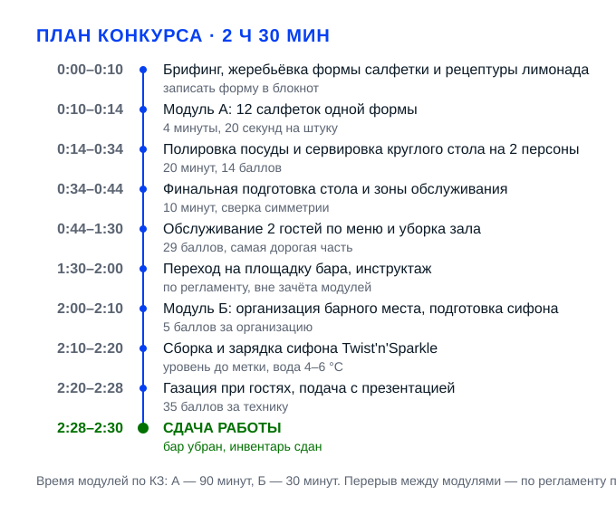
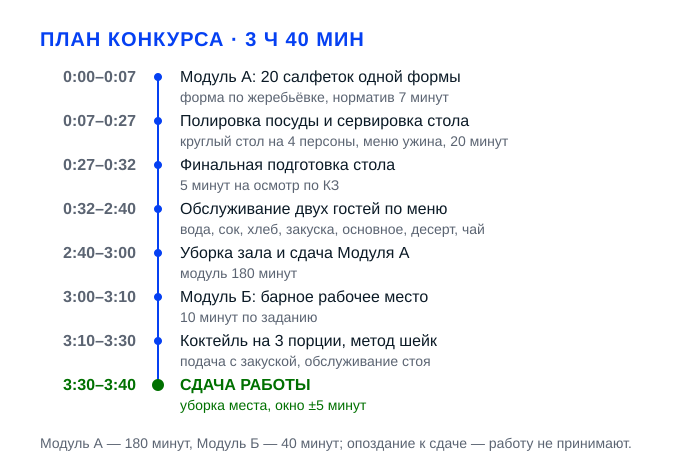
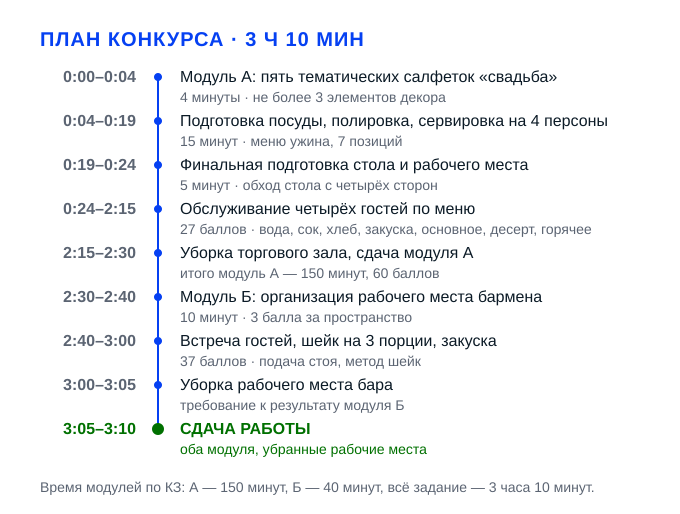

Ресторанный сервис (Р,О)
Задания ниже — официальные файлы «Абилимпикс» (источник: abilympics-russia.ru), разложенные по категориям. Решения написаны по тексту задания, регламенту и критериям оценки; в них указано, что именно проверяет эксперт.
Школьник
14–16 лет, базовый уровень заданияВыдержка из официального конкурсного задания: страницы, относящиеся к категории «Школьник» (стр. 4–8 источника).
Пошаговое решение
Конкурсное задание для школьников — два модуля, два часа тридцать минут. В модуле А «Работа в ресторане» (90 минут, 60 баллов) нужно сложить двенадцать полотняных салфеток одной формы за четыре минуты, отполировать посуду и сервировать круглый стол на две персоны за двадцать минут, за десять минут довести стол до готовности и обслужить двух гостей по меню из семи позиций: лимонад, вода и сок, хлеб, закуска, десерт, горячий напиток, уборка зала. В модуле Б «Работа в баре» (30 минут, 40 баллов) — организовать барное место, приготовить лимонад в сифоне Twist'n'Sparkle по рецептуре из жеребьёвки, погазировать его при гостях, подать с презентацией и убрать зону. Форму салфетки — «космос», «свеча», «монашка» или «гвоздика» — тоже определяет жеребьёвка. Баллы распределены неравномерно: обслуживание гостей 29, лимонад 35, салфетки 9, поэтому и время делите соответственно.

Задача 1. Войти на площадку и подготовить рабочее местоМодуль А · 8 баллов (гигиена 2, внешний вид 2, подготовка посуды 4)
До старта модуля А вы должны выглядеть как официант ресторана высокого уровня и стоять в зоне, где всё нужное лежит под рукой, а лишнее убрано. Это восемь баллов из шестидесяти в модуле А, и они самые дешёвые во всём задании: их дают не за умение, а за дисциплину. При этом именно здесь чаще всего теряют баллы школьники — форма не по требованиям, посуда со сколом, приборы не отполированы. На всё про всё у вас есть время до старта и первые минуты модуля, пока эксперт заполняет протокол.
Действие 1.1. Пройти проверку внешнего вида до старта
Шаг 1.1.1
Надеваем белую сорочку с длинным рукавом, который закрывает запястье, чёрный галстук, чёрные брюки (или юбку ниже колен с чёрными колготками), чёрный пиджак либо жилет и закрытую чёрную обувь на плоской подошве или на каблуке не выше трёх сантиметров. Обувь — без шнуровки и без декоративных пряжек. Сорочку заправляем, манжеты застёгиваем на пуговицу, воротник под галстуком расправляем так, чтобы он лежал симметрично, а узел галстука стоял по центру и доходил до пряжки ремня.
Внешний вид — отдельный критерий на 2 балла, и проверяют его до старта, а не в конце: переодеться в процессе уже не дадут. Требования в конкурсном задании перечислены поимённо, и эксперт идёт по этому списку сверху вниз, поэтому любое расхождение видно сразу. Открытые запястья и обувь на шнуровке считаются нарушением формы не потому, что это некрасиво, а потому что форма официанта — часть производственной санитарии и безопасности.
Встаньте перед зеркалом в полный рост: рукав при поднятых руках не открывает запястье, подошва закрытая, шнурков нет, галстук по центру. Попросите соседа посмотреть со спины — воротник и край жилета сзади видно только со стороны.
Частая ошибка — надеть белую сорочку с коротким рукавом «под жилет, всё равно не видно»: при подаче блюд рукав поднимается, и запястье оказывается открытым, а это минус балл за внешний вид. Вторая ошибка — прийти в кроссовках на шнуровке, рассчитывая, что их не заметят под брюками: эксперт осматривает обувь специально.
Эксперт осматривает участника до старта целиком, от обуви до галстука, и фиксирует в протоколе соответствие каждому пункту требований задания. Отдельно он отмечает, подобраны ли брюки по длине: край брюк не должен закрывать обувь, иначе её просто не видно и не зачтут.
Шаг 1.1.2
Убираем волосы: у девушек — в тугой пучок или под сеточку, ни одна прядь не должна выбиваться у лица и на шее; у юношей — короткая стрижка, волосы не закрывают уши и воротник. Ногти коротко подстрижены, без лака и без покрытия. Снимаем часы, кольца, браслеты, цепочки и крупные серьги — наручные украшения на этой компетенции запрещены отдельным пунктом. Макияж мягкий, дневной: тон и блеск для губ, без ярких теней и стрелок.
Волосы и ногти — это гигиена, за которую в модуле А дают 2 балла, и одновременно условие допуска к работе с открытой посудой и приборами. Прядь, выбившаяся при подаче, или кольцо, снятое наполовину, читаются экспертом как неготовность к работе в зале. Украшения на руках мешают полировке и переноске посуды: браслет цепляется за кромку тарелки, и посуда едет.
Проверьте себя по трём признакам: проведите рукой по затылку — волосы не выступают; посмотрите на руки — украшений нет, ногти короткие; наклоните голову — ни одна прядь не падает на лицо. Пучок держится без поправок при наклоне.
Самая частая ошибка — оставить маленькие серёжки или тонкую цепочку, считая их частью образа: задание запрещает украшения без исключений. Вторая — собрать волосы небрежно, так что уже через десять минут работы прядь выбивается, и эксперт фиксирует нарушение в середине модуля.
Эксперт проверяет волосы, руки и макияж на входе, а затем наблюдает, поправляет ли участник волосы руками во время работы с посудой. На категории «Школьники» этот пункт проверяют строже: небрежно убранные длинные волосы к концу модуля почти всегда оказываются распущенными.
Шаг 1.1.3
Раскладываем на подсобном столике то, что задание требует принести с собой: ручку, блокнот, две-три пары текстильных перчаток, комплект формы для обслуживания, барный инструмент и инвентарь для лимонада. Ручку и блокнот кладём так, чтобы писать стоя, не наклоняясь через стол; перчатки — в отдельный чистый пакет, а не в карман. Барный инструмент (джиггер, барную ложку, нож, гейзер или сифон, если он свой) выкладываем на салфетку рядом с рабочей зоной бара.
Список того, что участник обязан принести, приведён в разделе «Особые указания» конкурсного задания, и площадка этого не выдаёт. Если чего-то нет, взять взамен будет негде: заём инвентаря у соседа на чемпионате расценивается как нарушение равных условий, и эксперт может не разрешить. Блокнот нужен для записи заказа двух гостей — без него вы будете держать меню в голове и путать позиции.
Проверьте по списку из задания, ничего не пропустив: ручка пишет, блокнот чистый, перчаток минимум две пары и они вашего размера, барный инструмент целый. Всё лежит в одной зоне и не мешает работе с посудой.
Прийти без блокнота, надеясь запомнить заказ: две перемены блюд и напитки школьник почти всегда путает, а перепутанная позиция — это минус баллы за обслуживание. Вторая ошибка — принести барный инструмент, но оставить его в сумке до модуля Б: на подготовку бара отводится всего тридцать минут.
Эксперт сверяет наличие своего инвентаря при входе и смотрит, пользуется ли участник блокнотом при приёме заказа. Если блокнота нет, эксперт вправе спросить, как участник собирается фиксировать заказ двух гостей, и это отражается в оценке коммуникации.
Действие 1.2. Организовать рабочее место официанта
Шаг 1.2.1
Делим площадку на четыре зоны и закрепляем их за собой: гостевой стол на две персоны в центре, подсобный (сервировочный) столик в полутора шагах от стола, зона сервизной с посудой и приборы для полировки — на салфетке у края подсобного столика. Мусор — в контейнер или пакет, который ставим у ножки подсобного столика, а не на пол. Проход между столом и подсобным столиком оставляем свободным: по нему вы будете ходить с подносом не меньше двадцати раз.
Организация рабочего пространства — часть критерия «Подготовка посуды для сервировки» и сквозной критерий чистоты, вместе 4 балла и 2 балла. Логика простая: каждое лишнее движение в зале — это секунды, а на обслуживание двух гостей по семи позициям меню времени в обрез. Правильно поставленный подсобный столик экономит шаги и позволяет работать, не разворачиваясь спиной к гостю.
Проверьте расстояние: от подсобного столика до гостевого — один-два шага, при этом вы дотягиваетесь до стола, не задевая стулья. Проход свободен, мусор не под ногами, ничего не лежит на полу. Отойдите к входу в зону и посмотрите на площадку целиком: маршрут от подсобного столика к гостевому должен читаться сразу.
Поставить подсобный столик вплотную к гостевому — тогда некуда положить поднос, и вы будете ставить его на гостевой стол, что в обслуживании недопустимо. Вторая ошибка — разложить посуду на полу или на подоконнике, если столик мал: это сразу минус за чистоту рабочего места.
Эксперт оценивает, насколько рационально разложены зоны, и отдельно смотрит, не приходится ли участнику бегать через всю площадку за каждой тарелкой. Он также отмечает, не заставлена ли рабочая зона лишними предметами и есть ли место, куда поставить поднос с грязной посудой.
Шаг 1.2.2
Надеваем текстильные перчатки для работы с чистой посудой и приборами и меняем их на новые перед сервировкой гостевого стола. Перед надеванием моем руки с мылом и вытираем насухо одноразовым полотенцем. Перчатки берём за край манжеты, не касаясь пальцами внутренней поверхности, и надеваем так, чтобы манжета закрывала запястье под рукавом сорочки. Вторую пару держим наготове в чистом пакете, чтобы замена занимала секунды.
Перчатки — часть санитарного блока на 2 балла и одновременно защита от отпечатков на бокалах и тарелках: после полировки посуду берут только в перчатках, иначе на кромке остаются следы, которые эксперт видит на просвет. Мыть руки перед надеванием нужно потому, что перчатки не стерильны снаружи, а кожа под ними потеет, и через двадцать минут работы руки сами становятся источником загрязнения.
Перчатки сидят по размеру, не топорщатся на пальцах, манжета под рукавом. На бокалах и тарелках после переноски не остаётся отпечатков — проверьте один бокал на просвет у света. Вторую пару перчаток проверьте на разрыв заранее: лопнувшая перчатка на пальце видна и считается нарушением гигиены.
Работать в перчатках, которые малы и лопаются на пальце: это видно, и балл за гигиену снимается. Вторая ошибка — надевать перчатки один раз на весь модуль и в них же убирать использованную посуду: после уборки перчатки меняют, иначе чистая посуда пачкается о грязные.
Эксперт смотрит, когда именно участник меняет перчатки, и фиксирует случаи, когда в одной паре работают и с чистой, и с грязной посудой. Смена перчаток перед сервировкой — тот момент, который он ждёт специально, и пропуск его фиксируется в протоколе.
Шаг 1.2.3
Раскладываем на подсобном столике инструмент по порядку работы: слева — полотенца для полировки (два: одно сухое, одно чуть влажное), в центре — поднос, справа — чистые салфетки для гостевого стола и щипцы. Ручку и блокнот кладём в правый карман или на край столика так, чтобы взять их одной рукой. Всё, что нужно для бара, держим отдельно и не смешиваем с ресторанной посудой.
Порядок на столике — это не эстетика, а скорость: когда полотенце, поднос и щипцы лежат на своих местах, сервировка двадцати минут укладывается без спешки. Смешанные зоны приводят к тому, что мокрая тряпка оказывается на подносе с чистыми бокалами. Критерий чистоты рабочего места (2 балла) оценивается по состоянию этой зоны в любой момент конкурса.
На столике нет ничего лишнего: ни упаковок, ни телефона (он запрещён), ни грязной посуды. Полотенца разные по назначению и это видно — они разного цвета или лежат в разных концах столика. Полотенца не должны лежать друг на друге: влажное и сухое легко перепутать в спешке, и на бокале останутся разводы.
Свалить всё в одну кучу «потом разберу»: к середине модуля на столике образуется свалка, и эксперт фиксирует беспорядок. Вторая ошибка — держать полотенце для полировки на гостевом столе, где его видит гость.
Эксперт проходит мимо рабочей зоны несколько раз за модуль и оценивает не стартовый порядок, а то, сохраняется ли он в работе. Порядок на столике он оценивает дважды — в начале модуля и в момент подачи, потому что судит по рабочему состоянию зоны.
Действие 1.3. Подготовить посуду и приборы из сервизной
Шаг 1.3.1
Идём в сервизную с подносом и набираем посуду строго по меню на две персоны: две закусочные тарелки, две пирожковые (хлебные) тарелки, две десертные тарелки или креманки, две чашки с блюдцами для горячего напитка, два бокала для воды, два стакана или бокала для сока и лимонада, приборы — закусочные (вилка и нож), десертные (вилка и ложка), чайные ложки, нож для масла. Каждую единицу переворачиваем в руках и смотрим на кромку и дно.
Подготовка посуды — 4 балла, и первый способ их потерять — принести посуду со сколом или трещиной. Скол на кромке опасен: он режет губу гостю, и на чемпионате это грубейшее нарушение. Кроме того, набор по меню — это проверка понимания сервировки: если в меню есть закуска, десерт и горячий напиток, а вы принесли только закусочные тарелки, вся схема подачи рассыпается.
Посуда без сколов, трещин и потёртостей глазури, рисунок одинаковый на всех предметах одной пары, количество совпадает с меню. Отложите брак сразу в сторону и возьмите замену, а не «потом поменяю». Отложенный брак держите отдельно, у края подноса, чтобы случайно не взять его повторно при наборе.
Взять первую попавшуюся тарелку, не глядя на кромку: скол чаще всего находится именно там, где его не видно, если не повернуть предмет к свету. Вторая ошибка — набрать посуду с запасом, но разного рисунка: пара читается как небрежность.
Эксперт осматривает посуду на столе после сервировки, поворачивая тарелки к свету, и проверяет комплектность по меню. Если на столе окажется тарелка с рисунком, отличным от пары, он отметит это как ошибку комплектности набора.
Шаг 1.3.2
Полируем посуду в такой последовательности: сначала бокалы и стаканы, потом тарелки, потом приборы. Бокал берём за ножку или за дно, никогда не за кромку, и протираем изнутри и снаружи полотенцем из льна, сложенным вчетверо. Тарелку держим за край с двух сторон и протираем внутреннюю поверхность круговыми движениями от центра к борту. Приборы берём за ручку и протираем лезвие и зубцы отдельным концом полотенца.
Полировка — это тот пункт, по которому эксперт за минуту понимает уровень участника: разводы на бокале видны на просвет и сразу снижают оценку за подготовку посуды. Влажное полотенце снимает жир и следы от машины, сухое убирает разводы, поэтому их два. Брать бокал за кромку нельзя: на ней остаются отпечатки, а гость касается её губами.
Посмотрите бокал на просвет на уровне глаз: разводов, ворсинок и отпечатков нет, кромка блестит ровно по всей окружности. Проведите пальцем в перчатке по внутренней поверхности тарелки — она должна быть сухой и гладкой.
Протирать бокал, держа его за кромку: посуда кажется чистой, но на кромке остаются следы, и балл снимается. Вторая ошибка — полировать тёплые бокалы сразу из машины: на тёплом стекле разводы появляются моментально, дайте посуде остыть минуту.
Эксперт берёт бокал и смотрит его на свет, а также проверяет, нет ли отпечатков на кромке тарелок. Отдельно он смотрит на полотенце: если оно мокрое и им же протирают бокалы, разводы появятся через минуту после полировки.
Шаг 1.3.3
Укладываем отполированную посуду на поднос и переносим к подсобному столику по правилу «тяжёлое в центр, хрупкое по краям»: тарелки стопкой не выше пяти штук, бокалы — по одному в ряд, не касаясь друг друга, приборы — на салфетке, ручками в одну сторону. Поднос несём на левой руке на уровне пояса, придерживая правой; при разгрузке сначала ставим поднос на столик, и только потом снимаем предметы.
Переноска — часть критерия «Подготовка посуды»: бой посуды на чемпионате означает минус баллы и потерю времени на замену, а замены может не быть. Стопка выше пяти тарелок теряет устойчивость, бокалы, поставленные вплотную, бьются друг о друга при малейшем толчке. Правило «тяжёлое в центр» нужно для баланса: поднос не должен клевать на сторону.
Поднос несёте ровно, без наклона, предметы не съезжают. При разгрузке ничего не звенит, посуда на столике стоит устойчиво и не касается края. Проверьте, что поднос не перевешивает: поднимите его на ладони — центр тяжести должен приходиться на предплечье, а не на кисть.
Нести поднос на вытянутой руке или на уровне груди, «чтобы все видели»: равновесие теряется, и посуда едет. Вторая ошибка — ставить бокалы вплотную друг к другу: при постановке подноса на стол они соприкасаются и один обязательно трескается.
Эксперт смотрит на переноску с самого начала: техника работы с подносом входит в оценку обслуживания гостей. Он смотрит и на то, ставит ли участник поднос на стол перед разгрузкой или снимает предметы на весу, рискуя уронить бокал.
Задача 2. Сложить двенадцать салфеток одной формы за четыре минутыМодуль А · 9 баллов (складывание салфеток)
Форма салфетки определяется жеребьёвкой в день соревнований из четырёх вариантов: «космос», «свеча», «монашка», «гвоздика». Двенадцать полотняных салфеток нужно сложить за четыре минуты — это двадцать секунд на штуку, и все двенадцать должны выглядеть как одна. Девять баллов здесь дают не за скорость саму по себе, а за одинаковость и чёткость линий: быстро, но криво — это ноль. Поэтому сначала осваивается движение, потом набирается темп.
Действие 2.1. Принять форму и подготовить салфетки
Шаг 2.1.1
Сразу после жеребьёвки записываем форму в блокнот и проговариваем её про себя по шагам: какая базовая складка, куда уходит открытый угол, что подгибается последним. Затем берём одну салфетку и складываем её медленно, разговаривая с собственными руками: «складываю по диагонали, совмещаю угол в угол, подгибаю боковые углы к центру, переворачиваю, скатываю в трубочку». Эту репетицию делаем дважды, пока последовательность не станет автоматической.
Проговаривание вслух — самый быстрый способ закрепить последовательность движений, и на соревновании это спасает: под таймером руки делают то, что уже проговорено, а не то, что вспоминается заново. Девять баллов за салфетки дают за форму, соответствующую заданной, и за одинаковость всех двенадцати, а не за скорость. Ошибка в базовой складке делает всю партию другой формы.
После двух медленных повторов вы можете сложить форму, не подглядывая в схему, и объяснить последовательность другому человеку. Если на каком-то шаге вы задумываетесь — повторите ещё раз, пока не станет гладко.
Начать сразу на скорость, не разобравшись в последовательности: первые три салфетки выйдут одной формы, следующие — другой, и партия будет забракована по одинаковости. Вторая ошибка — не записать форму и перепутать её с другой из списка после начала отсчёта времени.
Эксперт объявляет форму и следит, все ли двенадцать салфеток сложены именно так, как задано жеребьёвкой. Если форма сложена не по заданию, вся партия из двенадцати штук оценивается как невыполненная, даже когда выглядит аккуратно.
Шаг 2.1.2
До старта отсчёта времени раскладываем двенадцать накрахмаленных салфеток стопкой слева от себя, лицевой стороной вверх, швом кверху, углами в одну сторону. Каждую предварительно проглаживаем: салфетка должна быть сухой и жёсткой, как лист бумаги. Рабочую поверхность протираем насухо — на мокром столе полотняная салфетка сразу теряет форму. Готовые салфетки складываем справа, не ближе десяти сантиметров от стопки, чтобы руки не путались.
Накрахмаленная и проглаженная салфетка держит складку, поэтому форма «свеча» или «гвоздика» стоит сама, без подпорок. Мягкая, влажная или мятная салфетка оседает через полминуты, и все двенадцать выглядят по-разному. Жёсткая складка — это и есть тот признак, по которому эксперт отличает работу на 9 баллов от работы на 5.
Возьмите салфетку за два противоположных угла и встряхните: она держит плоскость, не обвисает. На столе нет капель, ладони сухие. Стопка лежит ровно, углы совпадают, ничего не свисает с края стола. Крахмал не должен осыпаться белым налётом: если салфетка «пылит», её лучше заменить, иначе налёт останется на скатерти.
Работать с влажными после отпаривания салфетками: форма плывёт, углы не совпадают, и партия выглядит неопрятно. Вторая ошибка — разложить салфетки по всей площади стола: вы теряете секунды на каждом переносе и сбиваете темп.
Эксперт оценивает подготовку по тому, как выглядят готовые салфетки через минуту после складывания: если они осели, значит, подготовка была слабой. Проглаженность он проверяет на ощупь, взяв верхнюю салфетку из стопки и согнув угол: жёсткая салфетка держит линию, мягкая нет.
Действие 2.2. Сложить форму в темпе
Шаг 2.2.1
Начинаем с базовой складки, общей для всех четырёх форм: берём салфетку за верхние углы, встряхиваем, укладываем лицевой стороной вниз и складываем по диагонали так, чтобы угол попал в угол, а кромки совпали по всей длине. Линию сгиба проглаживаем ребром ладони от середины к углам, а не наоборот: так воздух выходит изнутри, и сгиб получается острым. Открытый угол направляем от себя.
Базовая диагональ задаёт геометрию всей фигуры: если угол не попал в угол, дальше ни одна форма не встанет симметрично, и это видно на всех двенадцати салфетках. Проглаживание ребром ладони от центра к краям — приём, который экономит время: сгиб фиксируется одним движением, и салфетку не приходится поправлять дважды.
Проверьте первую салфетку: треугольник равнобедренный, кромки совпадают по всей длине, сгиб острый, салфетка лежит плоско, без «пузыря» посередине. Положите её на стол и посмотрите сбоку — она не топорщится.
Складывать «на глаз», не совмещая углы: разница в сантиметр на базовой складке превращается в перекошенную фигуру на выходе. Вторая ошибка — гладить сгиб от углов к центру: воздух остаётся внутри, и салфетка получается выпуклой.
Эксперт смотрит на базовую складку у первых салфеток: по ней видно, владеет ли участник техникой или импровизирует. По первой салфетке он сразу видит, отработан ли приём проглаживания сгиба ребром ладони от центра к углам.
Шаг 2.2.2
Формируем заданную фигуру. Для «свечи» скручиваем треугольник от основания к вершине в плотную трубочку, придерживая основание большим пальцем, а верхний угол подгибаем на два сантиметра — это «пламя». Для «монашки» после диагонали подгибаем оба боковых угла к вершине, а нижний угол отворачиваем на себя на треть высоты — получается капюшон. Для «гвоздики» складываем треугольник гармошкой с шагом полтора сантиметра, затем сводим концы и перехватываем середину. Для «космоса» скручиваем конус и отгибаем наружу два-три лепестка.
Каждая из четырёх форм строится от одной и той же диагонали, поэтому базовая складка должна быть безупречной — на ней держится всё остальное. Плотность скручивания и шаг гармошки — то, что отличает аккуратную фигуру от мятой: свободная трубочка разваливается, слишком тугая — ломает кромку и оставляет заломы. Оценивают именно форму и её соответствие заданию.
Готовая фигура стоит на столе сама, не заваливается набок, симметрична относительно вертикальной оси. «Свеча» — ровный цилиндр с одинаковым диаметром по высоте, «монашка» — симметричный капюшон, «гвоздика» — ровные складки одинакового шага.
Скручивать салфетку слабо, «чтобы не порвать»: фигура оседает и через минуту выглядит как комок. Вторая ошибка — отгибать лепестки или пламя на разную высоту: даже два сантиметра разницы на двенадцати салфетках читаются как небрежность.
Эксперт берёт одну салфетку из партии и сравнивает её с заданной формой по контуру и по устойчивости. Форму он сверяет по описанию из задания, поэтому важны узнаваемые детали: пламя у «свечи», капюшон у «монашки», лепестки у «космоса».
Шаг 2.2.3
Работаем сериями по три салфетки, а не по одной: сложили три базы — сформировали три фигуры — выровняли все три — отложили. Готовые салфетки ставим в ряд справа, на расстоянии пяти сантиметров друг от друга, лицевой стороной к эксперту. Каждую следующую партию сверяем с первой, а не с последней: первая — эталон, и отклонение видно сразу. Пять сантиметров между салфетками нужны, чтобы при переносе ряда они не задевали друг друга и не заваливались.
Серийная работа даёт ритм и экономит движения: за три подхода вы делаете одну и ту же операцию трижды подряд, и руки запоминают её быстрее, чем при переключении. Сверка с первой салфеткой, а не с предыдущей, не даёт ошибке накапливаться: если сверять каждую с последней, партия «уползает» по высоте и наклону, и это заметно на общем виде.
Все двенадцать стоят в ряду и читаются как одна партия: одинаковая высота, одинаковый наклон, одинаковый размер лепестка. Отойдите на шаг назад и прищурьтесь — разница в глаза бросается именно так. Проверьте ряд, присев к столу: с уровня столешницы видны перекосы, которых не заметно сверху.
Выравнивать каждую салфетку отдельно, подолгу: за четыре минуты так не успеть, и последние три останутся незаконченными. Вторая ошибка — ставить готовые вплотную, они заваливают друг друга при переносе.
Эксперт смотрит на партию целиком с расстояния двух-трёх шагов: именно так видна разница между салфетками. Он отходит на два шага и смотрит на партию целиком, потому что по отдельности все двенадцать могут казаться ровными.
Шаг 2.2.4
Держим темп двадцать секунд на салфетку: на базовую диагональ — пять секунд, на формирование фигуры — десять, на выравнивание и постановку в ряд — пять. Через каждые четыре салфетки бросаем взгляд на часы и сверяемся: к первой минуте должно быть готово три, ко второй — шесть, к третьей — девять, к четвёртой — двенадцать. Если отстаём на одну, ускоряем формирование, но не убираем выравнивание.
Четыре минуты на двенадцать штук — это жёсткий норматив из конкурсного задания, и он одинаков для всех участников, поэтому выигрыш даёт не скорость рук, а отсутствие лишних движений. Контроль по четвертям позволяет скорректировать темп в середине, а не узнать о нехватке времени на десятой салфетке. Выравнивание убирать нельзя: за него и дают основную часть баллов.
На третьей минуте готово не меньше девяти салфеток, на четвёртой — все двенадцать, сложенные и выставленные. Если к третьей минуте готово шесть — темп надо поднимать сразу, резервов больше не будет. Если к третьей минуте готово меньше девяти салфеток, темп уже не поднять — резерв остаётся только в выравнивании.
Разгоняться в начале и «выдохнуться» к десятой салфетке: последние три выходят мятыми, и партия разваливается. Вторая ошибка — начинать отсчёт не с объявления времени, а с собственного старта, и потерять первые тридцать секунд на раскладку.
Эксперт фиксирует время складывания по факту и отдельно смотрит, сколько салфеток готово к моменту остановки. Он записывает время складывания по факту и отдельно смотрит, не остались ли недоделанные салфетки в стопке слева.
Действие 2.3. Предъявить партию
Шаг 2.3.1
Выставляем двенадцать салфеток в один ряд на подсобном столике или на подносе, лицевой стороной к эксперту, с равным шагом. Если салфетки предназначены для гостевого стола, две из них ставим на закусочные тарелки, а остальные оставляем в ряду для оценки. Руки убираем за спину или опускаем — не поправляем ничего в момент осмотра, потому что движение руки в кадре читается как неуверенность в собственной работе.
Партия, выставленная ровно, оценивается выше, чем такая же партия, лежащая кучей: эксперт видит одинаковость только при равном шаге. Убирать руки нужно потому, что поправки после команды «время» воспринимаются как попытка доделать работу за пределами норматива, и это отдельно фиксируется.
Ряд ровный, шаг одинаковый, все салфетки видны целиком, ничего не перекрыто. Салфетки на тарелках стоят по центру, не свешиваются за край. Проверьте, что ни одна салфетка не стоит на краю подноса: при переносе она съедет и упадёт, а форма помнётся.
Свалить готовые салфетки в стопку: одинаковость не читается, и часть баллов за форму теряется. Вторая ошибка — начать поправлять салфетки после остановки времени: это заметно и трактуется не в пользу участника.
Эксперт подходит к партии после команды об остановке времени и осматривает её, не давая ничего поправить. Он обходит ряд с двух сторон, потому что с одной стороны тень скрывает разницу в высоте фигур.
Шаг 2.3.2
Перед тем как отойти, проводим последнюю сверку по трём признакам: высота фигуры у всех двенадцати одинаковая, наклон относительно края стола одинаковый, лицевая сторона смотрит в одну сторону. Если одна салфетка выбивается — убираем её из партии и ставим в конец ряда, но не переделываем: переделка занимает двадцать секунд и почти всегда выходит хуже.
Сверка по трём признакам — это то, что эксперт делает сам, и лучше увидеть расхождение раньше него. Убирать выбивающуюся салфетку в конец ряда, а не переделывать, — тактический приём: одна неудачная фигура в конце партии стоит меньше, чем сломанный темп и три недоделанные салфетки.
Все двенадцать в ряду, отклонений по высоте и наклону нет, лицевая сторона в одну сторону. Партия выглядит как работа одного человека за один подход. Сравните крайние салфетки между собой: если они совпадают по высоте и наклону, середина почти наверняка тоже ровная.
Переделывать неудачную салфетку в последний момент: время уходит, а новая фигура часто выходит хуже первой. Вторая ошибка — оставить выбивающуюся салфетку в середине ряда, где она притягивает взгляд. Третья ошибка — трогать партию руками после объявления времени: отпечатки на накрахмаленном полотне видны очень хорошо.
Эксперт сравнивает салфетки попарно — крайнюю левую и крайнюю правую, и по этой паре судит обо всей партии. Он также смотрит, не осталось ли на столе обрезков и ниток от салфеток: чистота зоны входит в общую оценку модуля.
Задача 3. Сервировать круглый стол на две персоны по менюМодуль А · 14 баллов (техника сервировки)
Двадцать минут на подготовку посуды, полировку и сервировку круглого стола на две персоны. Меню заданное: лимонад, вода и сок, хлеб, закуска, десерт, горячий напиток — значит, на столе должно стоять ровно то, что понадобится для этих позиций, и ничего лишнего. Четырнадцать баллов здесь дают за технику: расстояния, порядок приборов, положение стекла и симметрию двух приборов относительно друг друга. Стол проверяют не «на глаз», а линейкой и сравнением одной стороны с другой.
Действие 3.1. Накрыть стол и задать оси
Шаг 3.1.1
Сначала кладём на стол подложку — флизелин или мольтон, — разравниваем её ладонями от центра к краям, без складок. Затем берём отглаженную скатерть и раскрываем её над столом, держа за середину длинных сторон: сначала укладываем центральный сгиб точно по оси стола, потом отпускаем края. Свисание выравниваем до 25–30 сантиметров со всех сторон, углы подбираем и закалываем под столешницу, шов скатерти направляем вниз.
Подложка гасит звук посуды и не даёт скатерти скользить — на круглом столе это важно, потому что тарелка, поставленная на скользящую ткань, уезжает от кромки. Ровное свисание в 25–30 сантиметров — признак профессиональной сервировки: короче — стол выглядит «подвёрнутым», длиннее — гость задевает скатерть коленями. Оценка техники сервировки начинается с этого шага.
Свисание одинаковое по всей окружности: измерьте в четырёх точках, разница не больше сантиметра. Складок и перекосов нет, центральный сгиб идёт по оси стола, углов на полу нет. Проверьте углы: они должны быть подобраны одинаково, иначе одна сторона стола визуально выглядит ниже другой.
Раскрыть скатерть «как простыню», не совмещая сгиб с осью: стол получается с перекосом, и все приборы потом придётся ставить по кривой. Вторая ошибка — оставить свисание с одной стороны сорок сантиметров, а с другой десять: это сразу видно на фотографии стола.
Эксперт обходит стол кругом и смотрит на свисание скатерти с четырёх сторон, а также проверяет, нет ли складок под тарелками. Он проводит ладонью по столешнице: складка подложки или скатерти чувствуется сразу, даже если её не видно.
Шаг 3.1.2
Определяем оси: ставим два прибора строго друг напротив друга. Для этого находим центр стола, мысленно проводим диаметр и откладываем от него по обе стороны равные расстояния. Закусочные тарелки ставим так, чтобы их центры лежали на одной прямой с центром стола, а край тарелки отстоял от кромки стола на два сантиметра. Расстояние между двумя приборами по прямой должно быть не меньше пятидесяти сантиметров.
Симметрия — главное, что оценивают в сервировке круглого стола: два прибора должны читаться как зеркальное отражение. Пятьдесят сантиметров между приборами — это минимум, при котором двум гостям не тесно локтями. Два сантиметра от кромки — стандарт, при котором тарелка не свисает и гость не задевает её грудью, когда садится.
Проверьте рулеткой или линейкой: от кромки до края тарелки два сантиметра у обоих приборов, центры тарелок на одной оси с центром стола. Сядьте на один стул и посмотрите на второй прибор — он должен быть точно напротив.
Ставить приборы «примерно напротив»: на круглом столе даже пять сантиметров смещения выглядят как ошибка. Вторая ошибка — поставить тарелки ближе к кромке, чтобы «было больше места в центре»: гость задевает тарелку, и это фиксируется как нарушение техники.
Эксперт измеряет расстояние от кромки стола до тарелки и проверяет симметрию приборов, глядя вдоль оси стола. Если приборы стоят не на одной оси, он просит участника посмотреть вдоль стола — ошибка становится очевидной ему самому.
Действие 3.2. Расставить посуду, приборы и стекло
Шаг 3.2.1
Ставим закусочную тарелку по центру прибора, логотипом или рисунком строго вверх, на расстоянии двух сантиметров от кромки. Слева от неё, на линии верхнего края, ставим пирожковую (хлебную) тарелку так, чтобы она не перекрывала закусочную и отстояла от неё на десять–пятнадцать сантиметров. Пирожковая тарелка — под хлеб, который есть в меню, поэтому она обязательна на обоих приборах.
Тарелки — основа прибора, и всё остальное выставляется относительно них: если тарелка сдвинута, «поедут» и приборы, и стекло. Логотип вверх — это правило сервировки, по которому видно, что посуду ставили осознанно, а не как попало. Пирожковая тарелка в меню с хлебом обязательна: без неё хлеб придётся класть на стол или на закусочную тарелку, а это ошибка.
Обе закусочные тарелки на одинаковом расстоянии от кромки, логотипы ориентированы одинаково, пирожковые стоят слева и не касаются закусочных. Расстояние между закусочной и пирожковой — в пределах ладони.
Поставить пирожковую тарелку справа или вплотную к закусочной: хлеб окажется не на своём месте, и прибор читается неправильно. Вторая ошибка — перевернуть тарелку логотипом вниз, «чтобы не видно было маркировки».
Эксперт смотрит на положение тарелок относительно кромки и на то, одинаково ли ориентированы рисунки на двух приборах. Он проверяет и то, не сместились ли тарелки после того, как на них поставили салфетки: тарелка едет по скатерти очень легко.
Шаг 3.2.2
Раскладываем приборы: вилку — слева от закусочной тарелки, зубцами вверх, на расстоянии полсантиметра от края тарелки; нож — справа, лезвием к тарелке; десертные приборы (вилку и ложку) — за закусочной тарелкой, ручками вправо, ложка над вилкой; чайную ложку — на блюдце справа от прибора; нож для масла — на пирожковой тарелке, лезвием к центру. Все приборы выравниваем по нижнему краю на одной линии.
Порядок приборов — это язык сервировки: гость берёт тот прибор, который лежит дальше всех от тарелки, и движется к тарелке по мере смены блюд. Лезвие ножа к тарелке — правило безопасности и этикета одновременно. Выравнивание по нижнему краю на одной линии — то, что эксперт проверяет линейкой: даже сантиметровый разбег читается как небрежность.
Вилка и нож симметричны относительно тарелки, их ручки на одной линии с нижним краем тарелки. Десертные приборы лежат параллельно кромке стола, не касаясь тарелки. Чайная ложка — на блюдце, ручкой вправо.
Положить нож лезвием от тарелки: это не только ошибка этикета, но и риск порезать руку при уборке. Вторая ошибка — положить десертную ложку и вилку вразнобой, ручками в разные стороны. Третья ошибка — оставить на столе лишний прибор, который не нужен ни одному блюду из заданного меню.
Эксперт проверяет линию приборов на просвет и смотрит, соответствуют ли приборы блюдам из меню. Он смотрит на приборы сбоку, на уровне стола: именно с этой точки видно, лежат ли они на одной линии.
Шаг 3.2.3
Выставляем стекло справа от прибора, по диагонали вверх от ножа: ближе к центру — бокал для воды, за ним и чуть выше — стакан для сока, и третьим, если предусмотрено меню, бокал для лимонада. Основания не должны соприкасаться, расстояние между ними — не меньше сантиметра. Ставим стекло, держа за ножку или за нижнюю треть, не касаясь кромки. Третий бокал ставим последним, чтобы не переставлять первые два и не терять время на перестановку.
В меню школьников есть вода, сок и лимонад — три напитка, значит, на столе должно быть три вида стекла, выставленных в определённом порядке: вода ближе всех к прибору, потому что её подают первой. Соприкасающиеся основания — типичная ошибка: при малейшем движении бокалы звенят. Держать за кромку нельзя: на ней остаются отпечатки, и балл за подготовку посуды снимается.
Три предмета стекла на каждом приборе, выстроены по диагонали, не касаются друг друга, все без разводов и отпечатков на просвет. Расстояние от ножа до первого бокала — в пределах десяти сантиметров. Проверьте, что бокалы не перекрывают друг друга, если смотреть на прибор с противоположной стороны стола.
Поставить все бокалы в одну линию: гость не поймёт, какой для чего, а эксперт зафиксирует нарушение порядка. Вторая ошибка — поставить стакан для сока перед бокалом для воды, перекрывая его. Третья ошибка — поставить бокалы слишком близко к тарелке: гость задевает их локтем во время еды.
Эксперт смотрит на стекло на просвет и проверяет, соответствует ли количество предметов напиткам в меню. Он смотрит на стекло сбоку: при таком взгляде видно, стоят ли бокалы по диагонали или выстроены в линию.
Шаг 3.2.4
Ставим салфетку: сложенную фигуру из задачи 2 кладём на закусочную тарелку так, чтобы она не закрывала логотип полностью, либо левую салфетку из полотна укладываем слева от вилки. В центр стола ставим набор специй (соль и перец) и небольшую композицию — вазочку с одним цветком или свечу, — так, чтобы она не перекрывала вид на собеседника. Всё лишнее со стола убираем.
Салфетка и центр стола завершают композицию, и именно они создают впечатление «накрыто» или «накидано». Центральная композиция не должна быть высокой: всё, что выше двадцати сантиметров, закрывает гостям друг друга, и это считается ошибкой сервировки. Специи в центре — стандарт, при котором до них дотягиваются оба гостя.
Салфетки на обоих приборах стоят одинаково, специи по центру, композиция не выше двадцати сантиметров и не мешает видеть второго гостя. На столе нет ничего, чего нет в меню. Проверьте, дотягивается ли до специй гость с обеих сторон, не вставая со стула и не наклоняясь через прибор.
Поставить высокую вазу в центр круглого стола на две персоны: гости не видят друг друга, а эксперт отмечает нарушение. Вторая ошибка — положить салфетку так, что она закрывает всю тарелку и логотип. Третья ошибка — оставить на столе меню, которое по правилам подаётся гостю в руки, а не лежит на скатерти.
Эксперт оценивает стол целиком с позиции гостя: садится и смотрит, удобно ли и видно ли собеседника. Он садится за стол и оценивает, хватает ли места для локтей и не мешает ли что-то поставить бокал или взять прибор.
Действие 3.3. Провести финальную подготовку стола к обслуживанию
Шаг 3.3.1
Обходим стол кругом и проверяем симметрию: встаём на оси, смотрим вдоль стола и сравниваем два прибора по семи точкам — тарелка, вилка, нож, десертные приборы, стекло, салфетка, пирожковая тарелка. Всё, что сдвинулось, поправляем в перчатках, держа предметы за ножку или за край. Затем протираем скатерть от пылинок и крошек липкой щёткой или влажной салфеткой, не оставляя мокрых пятен.
Финальная подготовка — отдельные десять минут в задании, и они нужны именно для этой сверки: при расстановке почти всегда что-то съезжает на сантиметр. Сверка по семи точкам — самый быстрый способ увидеть асимметрию: сравнивать приборы целиком бесполезно, а попарно одноимённые предметы — работает. Пятна на скатерти видны на фотографии стола и снижают оценку.
Стол симметричен: одноимённые предметы на двух приборах находятся на одинаковом расстоянии от кромки. Скатерть чистая, без крошек и мокрых пятен. Ничего не стоит криво относительно оси. Посмотрите на стол мысленно как на фотографию с двух сторон: асимметрия на снимке видна резче, чем в живую.
Проверять стол, стоя с одной стороны: с этой позиции смещение второго прибора не видно. Вторая ошибка — тереть пятно мокрой тряпкой: остаётся развод, который заметнее самого пятна. Третья ошибка — поправлять приборы голыми руками: на полировке остаются отпечатки, и её приходится делать заново.
Эксперт подходит к столу после объявления готовности и оценивает его как готовое изделие, а не как процесс. Он подходит к столу с той стороны, где сидит гость, и смотрит, удобно ли тянуться к прибору и бокалу.
Шаг 3.3.2
Готовим зону обслуживания к работе: на подсобный столик выставляем поднос для использованной посуды, полотенце, щипцы для хлеба, хлеб в хлебнице или на пирожковой тарелке под салфеткой, масло, кувшин с водой и стаканы для сока и лимонада. Проверяем, что бутылка сока открыта и протёрта, а сифон для лимонада заправлен и охлаждён. Меню держим в руках или на столике — оно понадобится при приёме заказа.
Обслуживание начинается сразу после финальной подготовки, и любая нехватка в этот момент превращается в беготню при гостях, а это видно и оценивается в критерии «Обслуживание гостей» на 29 баллов. Хлеб, накрытый салфеткой, не сохнет. Охлаждённый сифон нужен потому, что тёплая вода в сифоне не держит газ: он выходит за минуту.
Всё нужное лежит на подсобном столике и под рукой: хлеб, масло, вода, сок, сифон, полотенце, щипцы, поднос. Ничего не нужно искать в сервизной после начала обслуживания. Проверьте, что сифон охлаждён: корпус должен быть холодным на ощупь, а не просто прохладным, иначе газ не удержится.
Оставить хлеб и воду «на потом»: первая же просьба гостя заставит вас уйти с площадки, и это затянет подачу. Вторая ошибка — заправить сифон тёплой водой, и лимонад выйдет без газа. Третья ошибка — не открыть бутылку сока заранее: при госте придётся искать открывалку и терять темп обслуживания.
Эксперт наблюдает за началом обслуживания: насколько быстро участник реагирует на первую просьбу гостя. Он отмечает, сколько времени проходит от посадки гостя до первого напитка на столе: это видимый показатель готовности.
Задача 4. Обслужить двух гостей по менюМодуль А · 29 баллов (обслуживание гостей)
Самая дорогая часть модуля А: двадцать девять баллов из шестидесяти. Гостей двое, меню из семи категорий — лимонад, вода и сок, хлеб, закуска, десерт, горячий напиток и уборка зала. Оценивают не только то, что вы принесли, но и как: с какой стороны подошли, какой рукой подали, что сказали, куда смотрели, как убрали. Здесь работает правило «одна ошибка — один балл», и набирается всё это десятками мелких правильных движений, а не одним красивым жестом.
Действие 4.1. Встретить гостей и принять заказ
Шаг 4.1.1
Встречаем гостей у входа в зону обслуживания: стоим прямо, руки опущены или сложены перед собой, смотрим в лицо. Здороваемся первыми, коротко и по форме: «Добрый день, проходите, ваш стол». Подходим к стулу слева от гостя, отодвигаем его на себя, придерживаем за спинку и подаём гостю словами «присаживайтесь, пожалуйста». Стул задвигаем после того, как гость сел, лёгким движением, не толкая.
Встреча — первое, что оценивает эксперт в критерии «Обслуживание гостей» (29 баллов), и по ней складывается впечатление обо всей работе. Стул отодвигается слева, потому что гость садится с правой стороны от спинки и не должен обходить вас. Придерживать стул нужно для того, чтобы гость не упал: на чемпионате это ещё и вопрос безопасности, который фиксируется отдельно.
Гость сел, стул стоит ровно, не отъехал от стола и не придвинут слишком близко. Вы стоите сбоку, не нависая над гостем, и смотрите в лицо, а не в блокнот. Проверьте, что стул не задевает скатерть: если задевает, при посадке гость потянет её и сдвинет приборы.
Отодвинуть стул и сразу отпустить: гость садится сам и может задеть стол, а посуда на столе звенит. Вторая ошибка — стоять напротив гостя вплотную, перекрывая ему выход: это читается как давление. Третья ошибка — здороваться, глядя в блокнот: контакт глаз на встрече оценивается наравне со словами.
Эксперт наблюдает встречу с начала: смотрит на приветствие, положение корпуса и работу со стулом. Он смотрит на расстояние между вами и гостем: полтора шага — норма, вплотную — ошибка, полтора метра — уже холодно.
Шаг 4.1.2
Подаём меню: держим его обеими руками за верхний край, раскрытым на нужной странице, и подаём гостю слева, левой рукой, со словами «наше меню». Второму гостю — так же, с его стороны. Даём не больше минуты и отходим на два шага, но остаёмся в поле зрения: не разговариваем с другими участниками и не смотрим в телефон (он запрещён). Если гость спрашивает про состав блюда, отвечаем коротко и по делу.
Меню в руках гостя — начало обслуживания, и способ подачи меню входит в оценку: с левой стороны левой рукой, потому что гость берёт правой. Пауза в минуту нужна гостю на выбор, но стоять над ним нельзя — это давит. Отходить на два шага — золотая середина: вы рядом, но не в разговоре.
Оба гостя держат меню, вы стоите в двух шагах, не разговариваете и не отвлекаетесь. Через минуту подходите к столу для приёма заказа. Проверьте, что меню раскрыто на первой странице и не перевёрнуто: гость не должен разворачивать его сам.
Отдать меню, держа его за страницы, или положить на стол перед гостем без слова: подача читается как небрежная. Вторая ошибка — уйти из зоны и вернуться через три минуты, когда гости уже готовы заказать.
Эксперт смотрит на технику подачи меню и на то, как участник держит дистанцию с гостем. Он отмечает и то, не начинаете ли вы рассказывать о блюдах, когда гость ещё не спросил и не открыл меню.
Шаг 4.1.3
Принимаем заказ, стоя слева от гостя, чуть наклонившись к нему, с блокнотом и ручкой в руках. Записываем по порядку: напитки, хлеб, закуска, десерт, горячий напиток — так же, как они пойдут в подаче. Записываем не «как понял», а сокращённо и точно, отмечая, кто из двух гостей что заказал: ставим на схеме стола две точки и подписываем под каждой. Затем повторяем заказ вслух целиком и спрашиваем: «Всё верно?»
Запись в блокнот и повтор заказа — единственная защита от путаницы: гостей двое, позиций в меню семь, и на слух это не удерживается. Отметка «кто что» нужна потому, что блюда подаются конкретному гостю, и перепутанная тарелка — минус балл. Повтор вслух закрывает недопонимание до того, как оно станет ошибкой в подаче.
В блокноте семь позиций по каждому гостю, отмечено, кто что заказал, заказ повторён вслух и подтверждён. Вы можете, не заглядывая в блокнот, назвать заказ каждого гостя. Проверьте запись: у каждого гостя отмечено не меньше четырёх позиций, включая напиток, закуску, десерт и горячее.
Записывать на память: через десять минут вы забудете, кому какой сок, и подадите не тому гостю. Вторая ошибка — не повторить заказ: недослышанное блюдо всплывёт при подаче, и его придётся менять. Третья ошибка — записывать заказ, стоя напротив гостя: он вынужден смотреть вам в живот, а не в меню.
Эксперт слушает, как участник принимает заказ, и проверяет блокнот на наличие записей по обоим гостям. Он слушает, повторяет ли участник заказ целиком или уточняет только отдельные позиции, и делает пометку в протоколе.
Действие 4.2. Подать напитки, хлеб и закуску
Шаг 4.2.1
Напитки подаём с правой стороны, правой рукой: подходим справа, держим бутылку воды или сока в правой руке за нижнюю часть, этикеткой к гостю. Наливаем в бокал, не поднимая его со стола, — струя идёт по стенке, бокал заполняем на две трети, затем аккуратно отводим горлышко вверх, чтобы не капнуть на скатерть. Первым обслуживаем гостя, сидящего слева от вас, затем второго.
Наливать справа правой рукой — базовое правило обслуживания: гость не разворачивается к вам и не берёт бокал из ваших рук. Бокал на столе, потому что поднятый бокал легко опрокинуть и трудно заполнить ровно. Две трети — норма, при которой гость может взять бокал, не расплескав. Порядок «слева направо» исключает путаницу, когда гостей двое.
Оба бокала наполнены на две трети, на скатерти нет капель, этикетка развёрнута к гостю. Бутылка после налива стоит на подсобном столике, а не на гостевом. Проверьте, что бутылка после налива закрыта: открытая бутылка на подсобном столике выдыхается за десять минут.
Наливать, держа бокал в руке: он качается, и часть напитка уходит на скатерть. Вторая ошибка — наполнить бокал до края: гость не может его взять, не пролив. Третья ошибка — наливать сок в бокал для воды: гость не поймёт, какой напиток перед ним, и это ошибка сервировки.
Эксперт смотрит на сторону подачи и на то, остаются ли на скатерти следы после налива. Он смотрит на локоть правой руки: при наливе он должен быть чуть приподнят, а не прижат к телу.
Шаг 4.2.2
Хлеб подаём слева, левой рукой: подходим к гостю слева, ставим хлебницу или пирожковую тарелку с хлебом на стол, хлеб берём щипцами, а не руками, и выкладываем два-три ломтика на пирожковую тарелку гостя. Масло ставим рядом в розетке с ножом для масла, лезвием к центру. Хлеб накрываем полотняной салфеткой, если он остаётся на столе. Щипцы после подачи кладём на поднос, а не на стол: прибор на скатерти читается как нарушение сервировки.
Хлеб — отдельная позиция меню, и его подача входит в оценку обслуживания. Брать хлеб щипцами нужно по санитарным требованиям, за которые в модуле А дают баллы: руками нельзя. Слева — потому что пирожковая тарелка стоит слева, и гость берёт хлеб левой рукой, не пересекая свой прибор. Салфетка на хлебе сохраняет его свежим до конца обслуживания.
Хлеб лежит на пирожковой тарелке у каждого гостя, масло в розетке, щипцы на подносе. Хлеб не касался ваших рук, на скатерти нет крошек. Проверьте, что ломтики лежат ровно и не свисают с тарелки: свисающий ломтик пачкает скатерть и выглядит небрежно.
Брать хлеб руками и класть на стол: крошки и нарушение санитарии одновременно. Вторая ошибка — поставить одну хлебницу в центр стола без тарелок: гостям некуда положить ломтик. Третья ошибка — подать хлеб после закуски: порядок подачи нарушен, и это фиксируется отдельным пунктом.
Эксперт смотрит, пользуется ли участник щипцами, и проверяет чистоту скатерти вокруг приборов. Он смотрит на руки в момент подачи: щипцы должны быть в правой руке, а тарелка с хлебом в левой.
Шаг 4.2.3
Закуску подаём с левой стороны, левой рукой: тарелку держим за край с двух сторон, подходим к гостю слева, ставим тарелку перед ним так, чтобы основной элемент был обращён к гостю, и одновременно сдвигаем закусочную тарелку, если она мешает. Произносим название блюда коротко: «Ваша закуска». Отходим на шаг и только после этого говорим «приятного аппетита» — не наклоняясь над столом.
Подача с левой стороны левой рукой — стандарт, при котором гость берёт вилку правой рукой и не разворачивается. Название блюда нужно, чтобы гость убедился, что принесли именно то, что он заказал: это снижает число претензий и показывает владение меню. «Приятного аппетита» говорят, уже отойдя, — иначе слова звучат над тарелкой.
Тарелка стоит по центру прибора, рисунок и основной элемент обращены к гостю, край тарелки не свисает. Обе тарелки поданы в течение минуты одна за другой. Проверьте, что тарелка не перекрывает приборы гостя: между краем тарелки и ножом должен остаться зазор.
Поставить тарелку справа через гостя или подать обе тарелки одной рукой, держа их друг на друге: это грубая ошибка техники. Вторая — назвать блюдо неверно или не назвать вовсе. Третья ошибка — ставить тарелку, не сдвинув предыдущую: на столе образуется нагромождение посуды.
Эксперт фиксирует сторону и руку подачи, а также слышит, названо ли блюдо. Он стоит рядом в момент подачи и смотрит на три вещи: сторону подхода, руку и название блюда.
Шаг 4.2.4
Убираем посуду после закуски: подходим справа, правой рукой, с подносом на левой руке на уровне пояса. Снимаем тарелку и приборы по одному, ставя на поднос, а не складывая стопкой на столе. Спрашиваем разрешения перед тем, как забрать тарелку: «Позволите?» Приборы кладём на тарелку лезвием внутрь, вилку зубцами вниз, чтобы не испачкать поднос. Крошки сметаем салфеткой в ладонь, а не на пол: то, что упало, поднимают сразу, пока не наступили.
Уборка справа правой рукой — то же правило, что и для подачи напитков: гость не разворачивается. Складывать грязную посуду стопкой на столе нельзя: это выглядит неопрятно и портит скатерть. Приборы на тарелке лезвием внутрь — правило безопасности, которое эксперт отмечает отдельно.
Стол перед гостем чистый, осталась только посуда для следующего блюда, поднос не перегружен, скатерть не запачкана. Крошки со стола сметены салфеткой на поднос, а не на пол. Проверьте, что на подносе не больше трёх тарелок: с четвёртой вы не удержите равновесие на повороте.
Забрать тарелку, не спросив, пока гость ещё ест: это грубость, и она фиксируется. Вторая ошибка — нести три тарелки в руках без подноса и уронить одну. Третья ошибка — убирать посуду, пока второй гость ещё ест: он почувствует, что его торопят.
Эксперт смотрит на уборку как на отдельный навык: сторону подхода, наличие подноса и аккуратность. Он смотрит, спрашивает ли участник разрешения, и как ставит тарелки на поднос — с грохотом или тихо.
Действие 4.3. Подать десерт и горячий напиток
Шаг 4.3.1
Перед десертом меняем приборы: убираем закусочные тарелку и приборы справа правой рукой, затем ставим десертную тарелку или креманку с левой стороны левой рукой и кладём десертные приборы — вилку слева, ложку справа, если десерт мягкий, или только ложку. Десерт подаём с названием блюда и коротким описанием: «Десерт, подаём охлаждённым». Приборы подаём, держа за ручки, а не за рабочую часть, чтобы не оставить отпечатков на лезвии и зубцах.
Смена приборов перед десертом — обязательный элемент: закусочные приборы для десерта не годятся, и их наличие на столе в этот момент считается ошибкой сервировки. Десертная вилка и ложка ставятся по консистенции блюда: для мягкого десерта достаточно ложки, для плотного нужны оба прибора. Описание подачи показывает, что участник знает своё меню.
На столе у каждого гостя десертная тарелка и соответствующие приборы, закусочные убраны, крошек нет. Десерт подан обоим гостям с разницей не больше минуты. Проверьте, что десертные приборы не касаются края тарелки: иначе гость испачкает руку о соус.
Подать десерт на закусочной тарелке с закусочными приборами: это читается как незнание сервировки и снимает баллы дважды — за технику и за обслуживание. Вторая ошибка — принести десерт одному гостю и уйти за вторым, оставив первого ждать.
Эксперт проверяет соответствие приборов блюду и одновременность подачи двум гостям. Он проверяет, соответствуют ли приборы консистенции десерта, и слушает, названо ли блюдо при подаче.
Шаг 4.3.2
Горячий напиток готовим на подсобном столике, а не за гостевым столом: ставим чашку на блюдце, ручка вправо, наливаем на две трети, чтобы гость не обжёгся. Подаём справа правой рукой, ставя блюдце перед гостем так, чтобы ручка чашки была справа от гостя. Чайную ложку кладём на блюдце ручкой вправо, за чашкой. Сопровождаем словами: «Ваш чай, осторожно, горячий».
Наливать на подсобном столике нужно потому, что за гостевым столом нет места для чайника и есть риск опрокинуть чашку на гостя. Две трети — норма, при которой напиток не выплёскивается при переноске. Ручка справа — правило сервировки: гость берёт чашку правой рукой, не разворачивая её на блюдце. Предупреждение о температуре — часть безопасности.
Чашка стоит на блюдце, ручка справа, ложка на блюдце, на скатерти нет капель. Напиток подан обоим гостям одновременно. Проверьте, что блюдце сухое: капля под чашкой остаётся на скатерти мокрым пятном и видна издалека.
Наливать чай над гостевым столом: капля на скатерти и риск обжечь гостя. Вторая ошибка — поставить чашку ручкой влево, и гость вынужден разворачивать её в руках. Третья ошибка — подать чай без ложки: гость не сможет размешать сахар и попросит её, а это лишний выход.
Эксперт смотрит на положение ручки чашки и на то, где именно участник наливал напиток. Он смотрит на положение ручки и на то, предупредил ли участник о температуре напитка.
Шаг 4.3.3
Убираем посуду после десерта и напитка: справа правой рукой, на поднос, по одному предмету. Чашку берём за ручку, а не за край, ложку оставляем на блюдце. Сметаем крошки со стола салфеткой на поднос. После уборки на столе остаются только специи и центральная композиция — стол должен выглядеть так, будто обслуживание завершено. Блюдце берём двумя руками, а чашку ставим на него уже после того, как блюдце заняло место на подносе.
Уборка после последней перемены — это то, по чему эксперт судит о завершённости работы: стол с грязной посудой читается как брошенный. Чашку берут за ручку, потому что за край можно обжечься и потому что на кромке остаются отпечатки. Чистый стол перед расчётом — норма ресторана.
На столе нет грязной посуды и крошек, поднос унесён, подсобный столик не перегружен. Скатерть чистая, приборы гостей убраны. Проверьте, что на скатерти не осталось мокрых колец от чашек: на белом полотне их видно сразу.
Оставить чашки на столе и начать убирать подсобный столик: гость сидит перед грязной посудой, и это видно эксперту. Вторая ошибка — вытирать стол влажной тряпкой при госте, оставляя разводы. Третья ошибка — оставить на столе приборы от десерта: они мешают при расчёте и выглядят как незаконченная уборка.
Эксперт оценивает состояние стола в момент завершения обслуживания, до расчёта. Он подходит к столу сразу после уборки и оценивает, выглядит ли он готовым принять следующего гостя.
Действие 4.4. Завершить обслуживание и убрать зал
Шаг 4.4.1
Подаём счёт: подходим справа, правой рукой, счёт в папке или на маленьком подносе, кладём перед гостем, который оплачивает, и отходим на два шага. Не стоим над гостем и не называем сумму громко. После оплаты забираем счёт и деньги, благодарим: «Спасибо, приходите ещё». Провожаем гостей до выхода из зоны, отодвигая стул и придерживая его. Сумму называем только по просьбе гостя, тихо и без комментариев, а сдачу отсчитываем на подсобном столике.
Расчёт — финальная точка обслуживания, и в критерии на 29 баллов входит умение завершить разговор без неловкости. Счёт подаётся справа, потому что это документ, который гость берёт правой рукой. Отойти на два шага нужно, чтобы гость спокойно посмотрел сумму. Проводы гостей — часть гостеприимства, которое оценивают наравне с подачей.
Счёт подан в папке или на подносе, гость рассчитался, вы поблагодарили и проводили до выхода. Стул после ухода гостя задвинут к столу. Проверьте, что сдача и чек возвращены полностью: недостача в расчёте — грубая ошибка сервиса.
Стоять над гостем с счётом в руке: это давление и грубость, которая фиксируется. Вторая ошибка — уйти убирать стол, не дождавшись расчёта. Третья ошибка — считать деньги при госте и вслух: это выглядит как недоверие и портит впечатление.
Эксперт наблюдает завершение обслуживания: как подан счёт и как участник прощается. Он оценивает завершение обслуживания целиком: как подан счёт, как сказано «спасибо» и проводили ли гостя до выхода.
Шаг 4.4.2
Убираем гостевой стол и зал: снимаем использованную посуду на поднос, снимаем скатерть, складывая её грязной стороной внутрь, снимаем подложку, протираем стол. Подметаем или протираем пол вокруг стола, если что-то упало. Подсобный столик освобождаем, инвентарь возвращаем в сервизную, мусор — в контейнер. Рабочее место должно остаться в том виде, в каком вы его получили.
Уборка торгового зала прямо названа в задании отдельной позицией меню, и за неё дают баллы в критерии чистоты рабочего места (2 балла) и в общем впечатлении от обслуживания. Скатерть складывают грязной стороной внутрь, чтобы крошки не просыпались на пол. Порядок в зале после работы — признак профессионала, и его видно без измерений.
Стол пустой и протёртый, пол чистый, подсобный столик свободен, посуда сдана в сервизную, мусор в контейнере. Пройдите по зоне глазами эксперта: что бы вы отметили сами? Проверьте, что под столом нет крошек: их находят при осмотре зоны после окончания модуля А.
Снять скатерть, рассыпав крошки по полу, и уйти: уборка зала не выполнена, баллы сняты. Вторая ошибка — оставить грязную посуду на подсобном столике, потому что «её уберут». Третья ошибка — оставить грязные салфетки на подсобном столике, потому что «их всё равно заберут».
Эксперт проходит по зоне после окончания модуля А и оценивает её состояние до того, как участник перейдёт к модулю Б. Он проходит по зоне после окончания модуля и сравнивает её состояние с тем, которое участник получил до старта.
Задача 5. Приготовить и подать лимонад в сифоне (модуль Б)Модуль Б · 40 баллов (организация 5, техника приготовления 35)
Тридцать минут и сорок баллов — почти половина всей оценки. Задание: организовать рабочее место бара, приготовить лимонад в сифоне Twist'n'Sparkle по рецептуре, полученной жеребьёвкой в день соревнований, и погазировать его при гостях, а затем подать с презентацией. Тридцать пять баллов из сорока стоят именно техника и метод: последовательность, отмеренные дозы, работа с газом и подача. Здесь нельзя «примерно» — сифон прощает ошибку ровно один раз.
Действие 5.1. Организовать барное рабочее место
Шаг 5.1.1
Раскладываем барную зону на четыре сектора слева направо, по ходу работы: первый — лёд и охлаждённая вода, второй — сифон и баллончики, третий — стаканы и гарниры (мята, цедра, кружок лимона на тарелке под плёнкой), четвёртый — поднос для подачи. Инструмент — джиггер, барную ложку, нож, доску, полотенце — кладём перед собой на салфетку. Барную стойку протираем насухо: вода и лёд на стойке — это лужа под локтем.
Организация рабочего пространства — 5 баллов из сорока в модуле Б, и это самые простые баллы: их дают за то, что всё лежит по ходу движения рук. Секторы слева направо повторяют последовательность операций, поэтому вы не разворачиваетесь и не ищете предметы. Сухая стойка нужна и для безопасности: мокрый стол, сифон и стекло — это скольжение и бой посуды.
На стойке четыре читаемых сектора, инструмент под рукой, ничего не перекрывает рабочую зону, поверхность сухая. Поднос стоит так, что на него можно сразу поставить готовый стакан. Проверьте, что до каждого сектора вы дотягиваетесь, не сходя с места: шаг в сторону на каждой порции — это потерянные секунды.
Разложить всё в одну кучу перед собой: в спешке вы опрокинете стакан, пока будете искать джиггер. Вторая ошибка — оставить лёд в ведре на другом конце стойки: каждый стакан потребует лишнего перехода.
Эксперт оценивает барную зону до начала приготовления, отмечая рациональность расположения предметов. Он отмечает, приходится ли участнику разворачиваться спиной к гостям, чтобы взять предмет, — это считается ошибкой организации.
Шаг 5.1.2
Готовим сифон Twist'n'Sparkle: развинчиваем корпус, проверяем целостность прокладки и чистоту внутренней колбы, наливаем охлаждённую воду до метки на корпусе — не выше, чем указано. Воду берём из холодильника или из ведра со льдом, температура четыре-шесть градусов. Баллончик CO2 держим под рукой, но не прикручиваем заранее: газ ставится в последний момент, перед самой газировкой.
Уровень воды ниже метки — обязательное условие: если налить больше, при зарядке баллончиком сифон не создаст нужного давления, и лимонад выйдет «никаким». В холодной воде углекислый газ растворяется заметно лучше, чем в тёплой, поэтому охлаждение — это не формальность, а часть техники приготовления, за которую дают 35 баллов. Баллончик прикручивают перед подачей, потому что давление в заряженном сифоне падает со временем.
Колба чистая, без запаха, прокладка на месте и не пересохла, вода налита до метки и холодная на ощупь. Сифон собран и держит давление при пробном нажатии. Проверьте, что резьба чистая: песчинка или капля сиропа на резьбе не дают прокладке сесть ровно.
Налить воду выше метки «чтобы газа было больше»: эффект обратный — давления не хватает, и лимонад получается почти без газа. Вторая ошибка — использовать тёплую воду из-под крана: газ уходит из напитка за минуту.
Эксперт проверяет уровень воды в сифоне и температуру, а также состояние прокладки перед зарядкой. Он смотрит, охлаждена ли вода, и проверяет уровень: недолив так же плох, как перелив, потому что газа не хватит.
Шаг 5.1.3
Готовим основу лимонада по рецептуре, полученной жеребьёвкой: отмеряем джиггером сок лимона (обычно 30–40 мл на порцию), сахарный сироп (20–30 мл), добавляем мяту или цедру, если они есть в рецепте, и перемешиваем барной ложкой в стакане для смешивания. Пробуем на вкус с чистой ложки и записываем в блокнот, сколько чего положили: баланс «кислое — сладкое» должен быть в пользу свежести, а не приторности.
Рецептура определяется жеребьёвкой в день соревнований, поэтому заранее её выучить нельзя — важно владеть методом: отмерить, смешать, сбалансировать, записать. Отмерять джиггером, а не на глаз, нужно потому, что в критерии «Техника и метод приготовления коктейля» смотрят именно на работу с мерами. Запись доз в блокнот позволяет повторить напиток для второго гостя точно таким же.
В блокноте записаны дозы по каждому компоненту, вкус сбалансирован, основа однородная, без комков сиропа. Второй стакан, собранный по записи, на вкус не отличается от первого. Проверьте, что в стакане для смешивания нет нерастворённого сиропа на дне: он осядет в сифон и забьёт клапан.
Смешивать «на глаз»: первый лимонад получится кислым, второй приторным, и оба раза эксперт увидит нестабильность. Вторая ошибка — не записать дозы и при повторении не попасть в пропорцию. Третья ошибка — не пробовать напиток и узнать о перекосе вкуса от гостя во время презентации.
Эксперт смотрит на работу с джиггером и на то, пробует ли участник напиток перед подачей. Он смотрит на джиггер в руке: наливать «через край» и сливать излишек обратно в бутылку — грубая ошибка техники.
Действие 5.2. Собрать и зарядить сифон
Шаг 5.2.1
Переливаем готовую основу в колбу сифона через воронку, затем доливаем охлаждённую воду до метки. Держим сифон вертикально и смотрим на метку на уровне глаз, а не сверху: под углом уровень читается неверно. Общий объём напитка на две порции рассчитываем так, чтобы на каждого гостя пришлось по 150–200 мл, а в колбе остался запас для второго налива. Воронку после перелива сразу споласкиваем, иначе сироп засохнет на стенках и попадёт в следующую партию.
Объём — это то, что проверяется по факту: если напитка не хватит на второго гостя, придётся газировать вторую партию, а времени в модуле Б всего тридцать минут. Уровень смотрят на уровне глаз потому, что сверху метка «съедается» мениском и вы нальёте лишнего. Запас нужен, потому что часть напитка уходит в пену при первом наливе.
Уровень точно на метке, в колбе нет посторонних частиц, мята и цедра не попали в сифон, если рецепт этого не требует. Объёма хватает на две порции по 150–200 мл. Проверьте, что на горлышке колбы нет капель: они помешают прокладке сесть ровно и дадут протечку.
Налить «чуть больше метки»: сифон не создаст давление, и лимонад выйдет плоским. Вторая ошибка — оставить в основе кусочки мяты: они забьют клапан, и струя пойдёт рывками. Третья ошибка — переливать основу в сифон, не процедив её от мяты и цедры.
Эксперт проверяет уровень в колбе перед зарядкой и смотрит, нет ли в напитке посторонних включений. Он смотрит, читает ли участник метку на уровне глаз и не наливает ли воду «по стенке на глазок».
Шаг 5.2.2
Закручиваем корпус сифона до упора, проверяя, что прокладка села ровно и не выступила за край. Держим сифон за корпус, а не за головку, и затягиваем без чрезмерного усилия — до ощущения упора, но не «до хруста». Ставим сифон вертикально на стойку и проверяем, что клапан подачи закрыт. Перед закручиванием ещё раз проверяем, что прокладка лежит в своей канавке, а не поверх резьбы.
Недокрученный корпус — самая частая причина того, что газ травит и лимонад не газируется, а перетянутый рвёт прокладку, и тогда напиток течёт по резьбе. Держать за корпус нужно потому, что головка с клапаном — хрупкий узел, и усилие на неё передавать нельзя. Закрытый клапан нужен до момента подачи: иначе газ выйдет сразу после зарядки.
Корпус закручен до упора, прокладка не видна из-под резьбы, сифон стоит устойчиво, клапан закрыт. При лёгком наклоне сифона вода не сочится по резьбе. Проверьте нажатием на клапан при закрытом рычаге: воздух не должен выходить, иначе сифон не держит давление.
Закручивать изо всех сил: прокладка выдавливается, и при зарядке сифон начинает течь. Вторая ошибка — оставить клапан открытым, и весь газ уйдёт в первую минуту. Третья ошибка — закручивать корпус на весу, держа сифон над полом: при срыве прокладки стекло и вода летят вниз.
Эксперт осматривает резьбу и прокладку, а также проверяет, закрыт ли клапан до зарядки. Он проверяет, держит ли участник сифон за корпус, а не за головку: это признак отработанного навыка.
Шаг 5.2.3
Заряжаем сифон: вставляем баллончик CO2 в держатель головки и закручиваем его по резьбе до прокола мембраны. Прокол слышен коротким шипением — это норма. Сразу после прокола энергично встряхиваем сифон четыре-пять раз, держа его вертикально и придерживая головку второй рукой, затем ставим на стойку и даём постоять десять-пятнадцать секунд. Баллончик берём за широкую часть, не за мембрану, чтобы не повредить её до прокола.
Баллончик ставится только на собранный и закрытый сифон — иначе струя газа и воды бьёт в лицо, и это травма. Встряхивание нужно, чтобы газ растворился в воде: без него он соберётся в подкупольном пространстве и выйдет первым же нажатием. Пауза после встряхивания даёт газу связаться с жидкостью, и напиток получается стойким, а не «одноразово-шипучим».
Прокол произошёл (было короткое шипение), сифон не течёт по резьбе, после встряхивания корпус не вздулся. При пробном нажатии в стакан идёт ровная струя с газом. Проверьте, что после встряхивания на корпусе нет капель: протечка по резьбе видна сразу и означает потерю газа.
Проколоть баллончик на незакрытом клапане: газ и вода выстреливают наружу. Вторая ошибка — не встряхивать сифон, и тогда лимонад выходит почти без газа, а 35 баллов за технику приготовления теряются. Третья ошибка — встряхивать сифон наклонив: газ уходит в головку и травит через клапан.
Эксперт следит за последовательностью «закрыть — зарядить — встряхнуть» и за тем, держит ли участник сифон вертикально. Он слушает прокол: короткое шипение — норма, длинное означает, что прокладка не держит и газ уходит.
Шаг 5.2.4
Проверяем готовность: делаем один короткий налив в чистый стакан на пробу — струя должна идти ровно, с характерным шипением, без рывков и без выброса пены через край. Пробуем глоток: газ ощущается, вкус не изменился после газации. Если газ слабый — не пытаемся «дожать» остатками баллончика, а ставим второй баллончик по той же схеме. Пробный стакан потом используем для гарнира, а не для гостя, и держим его отдельно от подноса.
Пробный налив — единственный способ узнать, получился ли газ, до выхода к гостям. Ровная струя означает, что клапан не забит и давление в норме; рывки и пена говорят о том, что в напиток попали частицы мяты или перекрыт клапан. Второй баллончик вместо «дожатия» нужен потому, что остаточное давление уже не даст нужной степени газации.
Струя ровная, шипение есть, пены не больше сантиметра, вкус сохранился. Пробный стакан отставляем в сторону и не подаём гостям. Проверьте, что в пробном стакане нет осадка: хлопья означают, что в напиток попала мята или цедра.
Подавать гостям пробный стакан, в котором уже часть газа вышла: напиток будет слабее того, что наливают при них. Вторая ошибка — игнорировать рывки струи и выносить сифон с забитым клапаном. Третья ошибка — пробовать напиток из стакана, приготовленного для гостя.
Эксперт наблюдает за пробным наливом и оценивает, умеет ли участник проверить результат до подачи. Он смотрит, проверяет ли участник струю до выхода к гостям или узнаёт о проблеме уже при подаче.
Действие 5.3. Погазировать при гостях и подать
Шаг 5.3.1
Готовим подачу на подносе: два высоких стакана с колотым льдом до половины, два кусочка лимона или веточки мяты на отдельной тарелке, салфетки. Сифон ставим на поднос вертикально, придерживая головку. Подходим к гостям, ставим поднос на подсобный столик рядом и только оттуда берём стаканы — не держим поднос на весу во время газации. Лёд берём щипцами, а не рукой: это санитарное требование, которое проверяется в баре отдельно.
Лёд в стакане — часть метода: он охлаждает напиток и держит газ, поэтому лимонад не «выдыхается» за две минуты. Сифон на подносе вертикально, потому что наклонённый сифон при нажатии даёт пену вместо струи. Поднос на столике освобождает руки: газация одной рукой, вторая придерживает стакан — это и есть техника, за которую дают баллы.
Два стакана со льдом, гарнир, салфетки — всё на подносе. Сифон стоит вертикально и не касается края подноса. Ничего не нужно искать в процессе подачи. Проверьте, что стаканы сухие снаружи: мокрый стакан выскальзывает из руки, и напиток оказывается на полу.
Нести сифон в руке вместе со стаканами: при нажатии вы не удержите равновесие, и напиток польётся на пол. Вторая ошибка — подать тёплые стаканы без льда: газ выйдет за полминуты. Третья ошибка — наколоть слишком крупный лёд: он не охладит напиток, и газ выйдет быстрее.
Эксперт смотрит на подготовку подачи: наличие льда, гарнира и устойчивое положение сифона. Он оценивает подготовку подачи как отдельный этап: наличие льда, гарнира и салфеток видно с первого взгляда.
Шаг 5.3.2
Газируем при гостях: берём стакан в левую руку, наклоняем его на тридцать градусов, сифон держим правой рукой вертикально и нажимаем на рычаг плавно, без рывка. Струю направляем по стенке стакана, а не в лёд, и наполняем на три четверти, оставляя место пене. После налива ставим стакан перед гостем справа правой рукой и повторяем то же для второго гостя.
Газация при гостях — прямое требование задания, и оно оценивается отдельно: гость должен видеть, как напиток становится газированным. Наклон стакана и струя по стенке уменьшают потерю газа и не дают пены, которая «съедает» объём. Нажимать плавно нужно потому, что резкое нажатие выбрасывает струю вместе с газом и часть напитка уходит на стол.
Оба стакана наполнены на три четверти, пена не выше сантиметра, на столе нет брызг. Газ ощущается сразу после налива, на стенках стакана видны пузырьки. Проверьте, что после налива в стакане осталось место для пены: полный до края стакан гость не возьмёт.
Нажимать рычаг короткими резкими толчками: напиток пенится и выплёскивается, а гость получает полстакана. Вторая ошибка — наливать в стакан, стоящий на столе: струя бьёт в лёд и разбрызгивается. Третья ошибка — погазировать один стакан и унести его, оставив второго гостя с пустым стаканом.
Эксперт стоит рядом в момент газации: он оценивает плавность нажатия, направление струи и положение стакана. Он стоит рядом и смотрит на руку с сифоном: рычаг нажимают большим пальцем, а не всей ладонью.
Шаг 5.3.3
Завершаем подачу: добавляем в каждый стакан кусочек лимона или веточку мяты, ставим стакан на салфетку, коротко представляем напиток — название, состав, температура: «Лимонад с лимоном и мятой, подаём охлаждённым». Рядом с лимонадом ставим закуску, если она есть в меню бара. Отходим на шаг и наблюдаем, не нужно ли гостям что-то ещё. Гарнир кладём щипцами, а не пальцами, и только после того, как стакан занял место на салфетке.
Презентация прямо названа в задании: «приготовление и подача лимонада, презентация». Короткое представление состава показывает, что участник понимает, что приготовил, а не просто нажал на рычаг. Гарнир в стакане — визуальная подача, которая входит в оценку. Наблюдение после подачи — часть сервиса: гость не должен искать официанта.
Оба стакана поданы с гарниром, салфеткой и названием напитка. Гость может взять стакан, не задев соседний. Вы стоите в двух шагах и в поле зрения гостя. Проверьте, что салфетка под стаканом сухая и не свисает с края стола: свисающий край гость стянет локтем.
Поставить стакан молча и уйти: презентация не выполнена, и баллы за неё потеряны. Вторая ошибка — положить гарнир так, что он перекрывает край стакана и мешает пить. Третья ошибка — рассказывать о напитке слишком долго: презентация занимает не больше двух фраз.
Эксперт слушает презентацию и оценивает внешний вид напитка в момент подачи. Он слушает презентацию целиком и смотрит, названы ли состав и температура, а не только название напитка.
Действие 5.4. Убрать барное рабочее место
Шаг 5.4.1
Разбираем сифон: страгиваем давление коротким нажатием в пустой стакан, затем откручиваем головку и вынимаем пустой баллончик — он сдаётся вместе с инвентарём, выбрасывать его в общий мусор нельзя. Колбу промываем тёплой водой без моющих средств, ополаскиваем и ставим сушиться вверх дном. Прокладку просушиваем отдельно и укладываем в корпус. Пустой баллончик складываем в отдельную тару, а не в общий мусор: он под давлением и сдаётся по правилам площадки.
Сбрасывать давление нужно до откручивания головки: иначе остаточный газ выбросит прокладку и обдаст вас водой. Баллончики сдаются по правилам площадки — это металлические баллоны под давлением, и их нельзя класть в бытовой мусор. Промывать без моющих средств нужно потому, что средство оставляет плёнку, и следующий напиток будет с привкусом.
Давление сброшено, баллончик извлечён и сдан, колба вымыта и сохнет, прокладка сухая и на месте. Сифон собран и готов к следующему использованию. Проверьте, что в колбе не осталось запаха: посторонний аромат испортит следующий напиток.
Открутить головку под давлением: прокладку срывает, и сифон становится непригоден. Вторая ошибка — оставить баллончик внутри: при следующей зарядке вы получите двойное давление. Третья ошибка — мыть колбу горячей водой: пластик деформируется, и сифон перестанет держать давление.
Эксперт проверяет состояние сифона после работы: чистоту колбы, наличие прокладки и отсутствие баллончика. Он смотрит на порядок разборки: сначала сброс давления, потом головка, потом баллончик — и никак иначе.
Шаг 5.4.2
Убираем барную стойку: посуду — в мойку, инструмент — на место, гарниры — в контейнер, лёд из ведра выливаем, ведро протираем. Стойку протираем насухо, поднос протираем и ставим на место, мусор выносим в контейнер. Салфетки и полотенца складываем в отведённое место, а не оставляем на стойке. Ведро для льда ополаскиваем и ставим вверх дном, чтобы внутри не осталось воды до следующего модуля.
Убранное рабочее место прямо указано в результате модуля Б: «Организация рабочего места, приготовление и подача лимонада, презентация. Убранное рабочее место». За организацию и чистоту дают 5 баллов, и они снимаются, если стойка осталась мокрой или с инвентарём. Чистая стойка нужна и вам: после модуля Б эксперт может пройти по зоне ещё раз.
Стойка сухая и пустая, инструмент на месте, мусор вынесен, лёд убран. На полу вокруг стойки нет воды и осколков. Пройдите по зоне и посмотрите на неё как эксперт. Проверьте, что под стойкой сухо: вода стекает по ножке и остаётся лужей, которую видно при осмотре.
Оставить растаявший лёд в ведре и воду на стойке: к моменту проверки под стойкой лужа, и баллы за организацию сняты. Вторая ошибка — свалить инструмент в ящик вперемешку с грязной посудой. Третья ошибка — оставить на стойке мокрое полотенце: оно впитывает влагу и к концу дня пахнет.
Эксперт оценивает барную зону после окончания модуля Б и фиксирует состояние стойки и инвентаря. Он оценивает зону после модуля Б и сравнивает её с той, которую участник получил до старта.
Студент
учащиеся колледжей и техникумовВыдержка из официального конкурсного задания: страницы, относящиеся к категории «Студент» (стр. 4–8 источника).
Пошаговое решение
Решение разобрано по официальному конкурсному заданию регионального чемпионата «Абилимпикс» 2026 для категории «Студенты» по компетенции «Ресторанный сервис». Конкурс идёт 3 часа 40 минут: Модуль А «Работа в ресторане» — 180 минут и 60 баллов, Модуль Б «Welcome cocktail» — 40 минут и 40 баллов. В Модуле А участник складывает 20 салфеток одной формы за 7 минут (жеребьёвка: сложная монашка, колпачок, веер, колонна), за 20 минут полирует посуду и сервирует круглый стол на четыре персоны по меню ужина, за 5 минут проводит финальную подготовку и обслуживает двух гостей: вода, сок, хлеб, закуска, основное блюдо, десерт, горячий напиток, расчёт и уборка зала. В Модуле Б за 10 минут организуется барное место, затем готовится безалкогольный коктейль на три порции методом шейк и подаётся с закуской. 32 балла из 60 дают за обслуживание гостей, 35 из 40 — за технику приготовления коктейля.

Задача 1. Войти в модуль с правильным внешним видом и организованным рабочим местомМодуль А · 4 балла
Модуль А идёт 180 минут, и первые пятнадцать из них не приносят ни одного балла за мастерство, зато именно здесь снимаются четыре балла, которые потом не вернуть никакой сервировкой. Внешний вид, осанка и манеры стоят два балла, соблюдение правил гигиены и чистота рабочего места — ещё два, и оба критерия эксперт фиксирует до старта, а потом только подтверждает или снижает. Поэтому вход на площадку разбираем как отдельную производственную операцию: сначала форма и руки, потом инвентарь, который вы привезли с собой, потом зоны на рабочем столе и пересчёт посуды под меню ужина на четыре персоны. Порядок именно такой, потому что каждая следующая операция опирается на предыдущую: без текстильных перчаток нельзя полировать посуду, без пересчёта нельзя начинать сервировку, а без разложенных зон сервировка превращается в беготню вокруг стола.
Действие 1.1. Пройти предстартовый контроль и собрать комплект
Шаг 1.1.1
Надеваем белую сорочку с длинным рукавом, который закрывает запястье целиком, и чёрный галстук, сверху — чёрный пиджак или жилет. Брюки чёрные, у девушек допустима юбка ниже колен с чёрными колготками, обувь закрытая, чёрная, на плоской подошве или каблуке не выше трёх сантиметров, без шнуровки, пряжек и декоративных накладок. Перед зеркалом проходим по деталям по очереди: манжета выглядывает из-под пиджака ровно на сантиметр, галстук затянут до воротника, жилет застёгнут на все пуговицы, подол юбки закрывает колено.
Внешний вид участника, осанка и манеры — отдельный критерий на два балла, и проверяется он по формальным признакам, а не по общему впечатлению. Требования в задании перечислены дословно: длинный рукав, закрывающий запястье, чёрный галстук, юбка ниже колен, каблук не выше трёх сантиметров, обувь без шнуровки. В зале ресторана форма — часть услуги: гость должен видеть сотрудника, а не человека в удобной одежде.
Проверьте то, что чаще всего выпадает из поля зрения: при поднятой руке рукав не открывает запястье, обувь закрытая и без шнуровки, на пиджаке нет заломов после дороги, галстук не съехал в сторону. Посмотрите на себя со спины — воротник и подол видны только оттуда, а эксперт обходит участника вокруг.
Самая частая потеря — короткий рукав: сорочка «на три четверти» выглядит аккуратно, но требование прямо говорит о закрытом запястье. Вторая ошибка — обувь на шнуровке или с декором, а также часы и браслеты: это минус балл, который потом не отыграть ни сервировкой, ни обслуживанием гостей.
Эксперт осматривает участника до старта, при входе в зону, и отмечает соответствие по чек-листу. Дальше он смотрит, держится ли форма к концу третьего часа: пятна, расстёгнутый жилет и сбитый галстук тоже идут в оценку.
Шаг 1.1.2
Волосы убираем полностью: у девушек — в тугой пучок или под сетку, у юношей — короткая стрижка, которая не падает на лицо при наклоне над столом. Ногти коротко подстрижены, без покрытия и лака, макияж мягкий. Снимаем часы, кольца, браслеты, длинные серьги: украшения в зале не допускаются, и это прописано в требованиях к участнику отдельной строкой.
Под украшениями остаются загрязнения, которые не смываются обычным мытьём рук, а камень из кольца или звено браслета могут попасть в бокал или на тарелку. Для компетенции, где всё подаётся гостю руками, посторонний предмет в посуде — это не мелочь, а грубое нарушение санитарных норм, за которое снимают баллы по гигиене и могут остановить работу.
Руки осмотрены: украшений нет, ногти короткие, лак отсутствует. Волосы не выбиваются из причёски, если наклонить голову вниз и потрясти ею — это ровно то движение, которое вы делаете над столом при сервировке. Серьги, если уши проколоты, только маленькие гвоздики или ничего.
Оставить обручальное кольцо «оно не мешает» — самая распространённая ошибка: на контроле это видно сразу, а объяснение «я привык» не принимается. Вторая — длинные ногти с покрытием: они цепляют полотно салфетки и оставляют следы на полированном стекле.
Гигиена и чистота — два балла, и руки эксперт проверяет дважды: на входе и в процессе, когда вы берёте посуду за кромку или поправляете волосы. Фиксирует он это дважды: на входе в зону и в процессе работы, когда участник берёт посуду.
Шаг 1.1.3
Выкладываем на стол то, что привезли с собой: ручку, блокнот, текстильные перчатки для полировки, два кольца для сложения салфетки, барный инструмент и инвентарь для коктейля — шейкер, стрейнер, джиггер, барную ложку, нож и доску. Комплект проверяем по списку и раскладываем так, чтобы до каждого предмета было одно движение: блокнот и ручка — в кармане или на краю стола, кольца — рядом со стопкой салфеток, инструмент — в барной зоне.
Кольца для салфеток и барный инструмент — обязательные позиции именно для категории «Студенты», они перечислены в особых указаниях к заданию. Если шейкера нет, коктейль в Модуле Б приготовить методом шейк невозможно, а это 35 баллов из 40. Блокнот и ручка нужны не для красоты: заказ двух гостей с шестью позициями меню на память не принимают.
Проверьте комплект руками, а не глазами: кольца надеваются на палец без усилия, шейкер закрывается и не подтекает при встряхивании, стрейнер садится на шейкер плотно, джиггер не погнут. Перчатки — чистые, сухие, без дыр на пальцах, вторая пара лежит в кармане.
Приехать без колец и складывать салфетки «на весу» — форма получается неровной, а десять баллов за складывание уходят. Вторая ошибка — взять шейкер без стрейнера: коктейль польётся вместе со льдом, и порция будет выглядеть небрежно.
Эксперт проверяет наличие инструмента до старта и смотрит, пользуетесь ли вы им по назначению. Принесённый, но не использованный инструмент баллов не добавляет.
Действие 1.2. Разложить рабочее место по зонам и пересчитать посуду
Шаг 1.2.1
Делим рабочую поверхность на пять зон и закрепляем их за операциями: слева — поднос с чистой посудой из сервизной, в центре — полировка на льняном полотенце, справа — стопка салфеток с кольцами, у края — лоток для грязной посуды, а ближняя к проходу полоса остаётся свободной для подноса с блюдами. Границы зон обозначаем полотенцами или подносами, а не «на глаз»: так рука сама находит предмет, и вы не переносите чистую посуду через грязную.
Порядок в зонах — это и есть тот самый критерий «соблюдение правил гигиены, чистота рабочего места» на два балла, и одновременно условие скорости: сервировка на четыре персоны отводится всего 20 минут, а на 180 минут модуля приходится и обслуживание двух гостей. Когда чистое и грязное разделены, вы не тратите время на поиск и не рискуете поставить гостю тарелку, которая стояла рядом с отходами.
Проверьте себя простым тестом: пройдите маршрут «взял чистую тарелку — отполировал — поставил на стол» и обратный «снял грязную — поставил в лоток». Если маршруты пересекаются или вам приходится тянуться через всю станцию, зоны разложены неверно.
Свалить всё в одну кучу «разберусь по ходу» — самая частая ошибка: через сорок минут на столе каша из приборов и салфеток, а эксперт фиксирует нарушение чистоты. Вторая — поставить лоток для грязной посуды рядом с подносом чистой.
Эксперт обходит станцию в первые минуты модуля и оценивает организацию пространства целиком, а не отдельные предметы. Ему важно увидеть логику: чистое слева, грязное отдельно, проход свободен.
Шаг 1.2.2
Пересчитываем посуду под меню ужина на четыре персоны: по четыре подстановочные тарелки, четыре закусочные, четыре большие столовые для основного блюда, четыре десертные, четыре чашки с блюдцами для горячего напитка, по четыре бокала для воды и для сока. Приборы считаем парами на каждого гостя: вилка и нож столовые, вилка и нож закусочные, ложка и вилка десертные, плюс чайная ложка. Считаем вслух и отмечаем в блокноте, сколько чего взяли из сервизной.
Меню категории «Студенты» включает воду, сок, хлеб, закуску, основное блюдо, десерт и горячий напиток, и под каждую позицию нужна своя посуда и свой прибор. Техника сервировки и правильное выполнение согласно меню — 10 баллов: если для десерта нет десертных приборов, а под горячее подана закусочная тарелка, это видно сразу и стоит дорого. Пересчёт до начала работы страхует от беготни в середине модуля.
Разложите посуду стопками по видам и пересчитайте каждую стопку отдельно: должно быть ровно по четыре, без пятого «на всякий случай». Проверьте, что количество приборов совпадает с количеством блюд в меню, а не с вашими привычками: два гостя получают полный набор на четыре персоны только в части сервировки стола.
Взять посуду «побольше, вдруг не хватит» — стол перегружен, и композиция рассыпается. Обратная ошибка хуже: недосчитать десертные приборы и обнаружить это за две минуты до подачи десерта, когда гости уже сидят.
Подготовка предметов сервировки — 4 балла, и эксперт смотрит на поднос с посудой до начала сервировки: комплектность и отсутствие брака. Считает он и полноту набора под каждую позицию меню, а не общее количество тарелок.
Шаг 1.2.3
Каждую тарелку и каждый бокал осматриваем на просвет и на ощупь: скол на кромке, трещина, потёртость глазури, след от прибора — сразу в лоток для брака, а не на стол. Кромку тарелки проверяем пальцем по кругу, бокал — ногтем по краю и по ножке. Заодно протираем стол и проверяем, что на полу под ногами сухо, а проход к гостевому столу свободен. Это минута работы.
Скол на кромке — это не эстетика, а травма: гость может порезать губу, и для ресторана такой случай заканчивается объяснением с администрацией. На конкурсе брак в работе снимает баллы по подготовке предметов сервировки, а треснувший бокал может развалиться в руке при полировке.
Проверьте посуду при боковом свете: при прямом свете мелкие сколы и разводы не видны. Отставьте в брак всё, что вызывает сомнение, — четыре чистых тарелки всегда найдутся в сервизной, а переделывать сервировку в конце модуля времени не будет.
Поставить тарелку со сколом «к гостю кромкой внутрь» — расчёт на то, что не заметят: эксперт проверяет посуду на столе выборочно и находит такой брак почти всегда. Вторая ошибка — не проверить пол и поскользнуться с подносом.
Эксперт осматривает посуду на столе после сервировки, а не только на подносе, и отдельно отмечает чистоту поверхности стола и пола. Его интересует и то, отложены ли сомнительные тарелки в брак или всё-таки поставлены на стол.
Действие 1.3. Соблюсти санитарию и правила обращения с посудой
Шаг 1.3.1
Моем руки с мылом до запястий, не меньше двадцати секунд, не забывая большие пальцы и промежутки между пальцами, вытираем одноразовым полотенцем и надеваем текстильные перчатки для полировки. Перчатки меняем, как только они намокли или испачкались, и обязательно снимаем перед тем, как записывать заказ в блокнот: ручка и блокнот в перчатках пачкаются, а перчатка с посуды переносит жир на бумагу.
Полировка идёт руками вплотную к поверхности, которую гость потом касается губами, поэтому перчатки здесь — не формальность, а требование гигиены, за которое дают два балла. Кроме того, сухая тканевая перчатка не оставляет отпечатков: следы пальцев на бокале эксперт видит при первом же взгляде на стол.
Руки сухие, перчатки чистые и сухие, на пальцах нет дыр, полотенце использованное сразу убрано в лоток, а не положено на стол. Проверьте после первой же тарелки: если на стекле остаются разводы, перчатка уже сырая и её надо менять.
Протереть руки о фартук или о полотенце, которое лежит на столе, — визуально руки сухие, но ткань становится переносчиком, и это видно эксперту. Вторая ошибка — работать в одной паре перчаток весь модуль.
Эксперт следит за сменой перчаток по ходу работы, а не только на входе, и отдельно отмечает, берёте ли вы посуду за кромку. Смена перчаток и мытьё рук после грязной посуды тоже входят в предмет оценки.
Шаг 1.3.2
Берём посуду только за разрешённые места: тарелку — за борт снизу, двумя пальцами по краю, бокал — за ножку у основания, чашку — за ручку, приборы — за середину рукояти, а не за рабочую часть. Переносим на подносе, а не в руках: поднос держим на левой ладони, прижимая к предплечью, тяжёлое ближе к центру, бокалы — в один ряд, чтобы не стучали. Поднос идёт ровно.
Отпечатки на кромке бокала и на лезвии ножа видны гостю в первую очередь, и это прямое снижение оценки за технику сервировки, которая стоит 10 баллов. Правильный хват — ещё и вопрос безопасности: бокал, взятый за кромку, выскальзывает, а нож, взятый за лезвие, режет руку.
Проверьте хват на одном бокале: если после переноса на стекле остался след, вы взялись выше ножки. Поднос должен идти ровно, без наклона: наклонённый поднос — это тарелки, съехавшие друг на друга, и бой на полу.
Собирать бокалы в одну руку «пачкой» — быстро, но кромки соприкасаются и бьются. Вторая ошибка — ставить поднос на гостевой стол: это грубое нарушение, и эксперт фиксирует его отдельно. Поднос на гостевом столе — отдельное нарушение, его фиксируют всегда.
Эксперт смотрит на хват в момент переноса посуды и на то, как вы ставите поднос: на подсобный стол, а не на гостевой. Хват проверяется в момент переноса и при постановке посуды на стол.
Шаг 1.3.3
Телефон и камеру убираем полностью: в период конкурса ими пользоваться запрещено, и это правило действует до сдачи работы. Блокнот и ручку держим при себе, потому что заказ двух гостей по семи позициям меню принимается только с записью. Перед стартом ещё раз перечитываем меню ужина и проговариваем про себя порядок подачи: вода и сок, хлеб, закуска, основное блюдо, десерт, горячий напиток.
Запрет на телефоны прописан в задании отдельным пунктом, и нарушение разбирает главный эксперт — вплоть до снятия с конкурса. Порядок подачи нужен потому, что обслуживание гостей — это 32 балла из 60 в Модуле А: ошибка в последовательности подачи читается как незнание технологии, даже если каждое блюдо подано аккуратно.
Проверьте себя вопросом: можете ли вы, не подглядывая, назвать, что подаёте после закуски и какими приборами едят десерт. Если ответ идёт с запинкой, перечитайте меню ещё раз — на это есть время до старта, но не будет в середине модуля.
Держать телефон в кармане «на беззвучном» — формально это всё равно нарушение, и если он зазвонит в зале, разговор будет коротким. Вторая ошибка — принимать заказ по памяти и переспрашивать гостя дважды.
Эксперт проверяет отсутствие телефона на входе и наблюдает за работой с блокнотом при приёме заказа: записанный заказ — признак профессиональной работы.
Задача 2. Сложить 20 салфеток одной формы за 7 минутМодуль А · 10 баллов
Складывание салфеток — первая операция Модуля А и единственная, у которой есть жёсткий секундомер: двадцать штук одного вида за семь минут, форму определяет жеребьёвка в день соревнований из списка «сложная монашка, колпачок, веер, колонна». За это дают 10 баллов, и они делятся между техникой исполнения и одинаковостью результата: двадцать салфеток должны стоять как одна, с ровными заломами, устойчиво и на одной высоте. Секрет не в скорости рук, а в подготовке: правильно выстиранное и отглаженное полотно складывается вдвое быстрее, а два кольца для салфеток, которые вы привезли с собой, снимают половину проблем с фиксацией формы. Семь минут — это примерно двадцать секунд на салфетку, и такой темп держится только тогда, когда все двадцать штук лежат под рукой одной стопкой, а не разбросаны по станции.
Действие 2.1. Подготовить полотно и определить форму
Шаг 2.1.1
Принимаем стопку полотняных салфеток и пересчитываем: их должно быть ровно двадцать, размером примерно сорок на сорок сантиметров, из плотного льна или хлопка. Каждую раскрываем, проверяем на просвет: мятые, с заломами от долгого лежания, с пятнами и с неровно обработанным краем откладываем в сторону, а взамен просим замену. Отобранные двадцать штук складываем в аккуратную стопку и накрываем полотенцем, чтобы не запылились, пока идёт подготовка посуды.
Техника складывания и складывание салфеток — 10 баллов, и внутри этого критерия эксперт смотрит прежде всего на качество полотна: мятая салфетка не держит форму ни в одной из четырёх схем. Двадцать штук — это норматив категории «Студенты», и недостача даже одной салфетки читается как невыполнение задания по количеству.
Проверьте стопку на ощупь и на просвет: полотно должно быть жёстким от крахмала, край ровным, заломов от сгиба нет. Если салфетка после раскрытия сама не держит диагональ и «опадает», она слишком мягкая и форму держать не будет.
Взять стопку не пересчитав — в ней почти всегда оказывается девятнадцать или двадцать одна штука, и обнаруживается это на седьмой минуте, когда менять уже нечего. Вторая ошибка — складывать мятое полотно «потом отглажу»: отгладить двадцать штук внутри семиминутного норматива невозможно.
Эксперт пересчитывает готовые салфетки после норматива и осматривает полотно: заломы и пятна видны на белом льне сразу. Недостача салфеток считается невыполнением задания по количеству, а не мелкой погрешностью.
Шаг 2.1.2
Узнаём форму у главного эксперта после жеребьёвки и записываем её в блокнот: сложная монашка, колпачок, веер или колонна. Достаём два кольца для сложения салфетки, которые привезли с собой, и кладём их справа от стопки — на расстоянии одной ладони, чтобы не искать на ощупь. Если форма требует высокой устойчивой стойки, заранее готовим ровную поверхность: стол протираем насухо, потому что на влажном полотне салфетка «поедет».
Форма определяется жеребьёвкой в день соревнований, и подготовиться заранее к одной конкретной схеме нельзя — тренировать нужно все четыре. Кольца для салфеток прямо названы в списке того, что участник приносит с собой, и без них часть форм не держится: полотно распрямляется через минуту.
Проверьте, что вы поняли форму одинаково с экспертом: покажите первую сложенную салфетку и спросите, та ли это схема. Одно уточнение до старта экономит двадцать переделанных салфеток и десять баллов. Это минута, которая окупается.
Начать складывать «как помню» и узнать на пятой салфетке, что имелась в виду другая схема. Вторая ошибка — не достать кольца заранее и искать их в сумке в середине норматива. Переделка двадцати салфеток в семиминутный норматив не влезает.
Эксперт объявляет форму и следит, чтобы все участники складывали именно её: подмена формы — это невыполнение задания. Если форма понята неверно, работу остановят до старта норматива и время пойдёт впустую.
Шаг 2.1.3
Организуем рабочую позицию под темп: стопка полотна слева, кольца справа, готовая салфетка ставится на поднос в центре, брак уходит в отдельную стопку у края. Свет должен падать спереди, а не сбоку, иначе тени скрывают перекос залома. Включаем таймер на семь минут и мысленно делим норматив: первые три минуты — первые десять салфеток, следующие три — остальные десять, минута запаса на выравнивание ряда.
Семь минут на двадцать штук — это двадцать секунд на салфетку, и в таком темпе любая лишняя операция ломает график: поиск кольца, перекладывание стопки, поправка уже готовой салфетки. Планирование темпа входит в критерий техники складывания, потому что эксперт видит, работает участник ровно или судорожно ускоряется в конце.
Проверьте позицию до включения таймера: всё нужное достаётся одним движением руки, ничего не лежит за спиной или на другом конце стола. Если для взятия кольца приходится тянуться — переложите, это десять секунд сейчас и минута в сумме потом.
Складывать салфетки на весу или на коленях: заломы получаются кривыми, а время уходит на переделку. Вторая ошибка — начать норматив, не убедившись, что все двадцать салфеток под рукой. Поиск инструмента съедает секунды, которых в конце норматива уже не хватит.
Эксперт засекает семь минут и стоит рядом с секундомером: время окончания фиксируется по последней поставленной салфетке. Паузы и суету в темпе он тоже отмечает как нарушение техники складывания.
Действие 2.2. Освоить технику выпавшей формы
Шаг 2.2.1
Работаем на сухой ровной поверхности: раскладываем салфетку изнаночной стороной вверх, расправляем оба края ладонями от центра к углам, чтобы полотно легло без пузырей. Все сгибы делаем ногтем большого пальца по всей длине линии, а не «прихлопываем» ладонью: только продавленный залом держит форму и остаётся ровным через час. Углы совмещаем точно, по диагонали, без смещения на миллиметр — именно смещение и даёт перекошенную стойку.
Каждая из четырёх схем начинается с базовой фигуры — треугольника или полосы, — и качество этой базы определяет весь результат. Кривой первый сгиб невозможно исправить на последнем этапе: салфетка получится асимметричной, а одинаковость двадцати штук — половина оценки за складывание.
Проверьте базу на первой салфетке: диагональ ровная, углы совпали, залом продавлен по всей длине и виден с обеих сторон. Поставьте салфетку на стол — она должна стоять без поддержки, не заваливаясь набок.
Гладить сгиб ладонью «чтобы быстрее» — залом не держится, и через десять минут салфетка раскрывается. Вторая ошибка — совмещать углы на глаз, без проверки диагонали: перекос в два миллиметра на базе превращается в сантиметр на готовой форме.
Эксперт смотрит на первую готовую салфетку как на образец и сверяет с ней остальные девятнадцать. Кривую базу он видит по перекошенной диагонали и по тому, как салфетка стоит на столе.
Шаг 2.2.2
Схема «колонна»: складываем салфетку по диагонали, затем подгибаем левый и правый углы к центру так, чтобы получилась ровная полоса шириной примерно десять сантиметров, и повторяем подгиб ещё раз для жёсткости. Полученную полосу складываем пополам по короткой стороне, прижимаем залом ногтем и ставим вертикально, разводя нижние слои в стороны как опору. Готовая колонна должна стоять сама, высотой около пятнадцати сантиметров.
Колонна держится на жёсткости полотна и на двух подгибах: один подгиб даёт мягкую полосу, которая заваливается набок, а два — плотный прямоугольник с устойчивым основанием. Это самая «геометричная» из четырёх форм, и здесь техника исполнения видна лучше всего: перекос в один сантиметр читается как небрежность.
Поставьте колонну на стол и толкните легонько пальцем: она должна качнуться и вернуться, а не упасть. Проверьте высоту двух-трёх штук линейкой на глаз — разброс больше сантиметра означает, что подгибы сделаны на разную ширину.
Сделать один подгиб вместо двух — колонна складывается пополам и падает. Вторая ошибка — ставить колонну на влажную поверхность: полотно набирает влагу и оседает, а к моменту оценки ряд уже «поехал». Тогда ряд теряет строй и читается как небрежность.
Эксперт смотрит на устойчивость и на то, стоят ли колонны в линию по высоте: ряд оценивают целиком, а не по одной салфетке. Он же проверяет, не осталось ли на полотне следов от пальцев: белый лён держит любой отпечаток.
Шаг 2.2.3
Схема «веер»: складываем салфетку по диагонали, кладём треугольник основанием к себе и начинаем закладывать складки гармошкой от левого угла к правому, шириной примерно полтора сантиметра. Каждую складку прижимаем ногтем, не пропуская; сложенную гармошку сжимаем у основания пальцами, перехватываем кольцом или ставим в бокал и расправляем верхнюю часть веером на сто восемьдесят градусов.
Веер — форма, где важна равномерность складок: если одна складка шире другой, веер перекашивается и выглядит как смятая бумага. Здесь же видно, умеет ли участник работать на весу — сжатая гармошка распрямляется в руках, и её надо удержать до фиксации кольцом.
Проверьте веер на просвет: складки должны быть одинаковой ширины и расходиться ровным полукругом, без заломов в середине. Основание сжато плотно, кольцо сидит без перекоса, верх не разваливается при лёгком движении воздуха.
Складывать гармошку «на глаз» — веер выходит кособоким, а исправить его уже нельзя: перегнутое полотно сохраняет след. Вторая ошибка — расправлять веер до того, как зафиксировано основание. Веер приходится переделывать целиком.
Эксперт оценивает веер со стороны гостя, то есть сверху и чуть сбоку: именно под этим углом видно перекос складок. Он смотрит и на ширину складок: разнобой в полтора сантиметра уже заметен.
Шаг 2.2.4
Схема «колпачок»: складываем салфетку треугольником, подгибаем нижнее основание на полтора сантиметра на себя, затем подводим левый и правый углы к вершине так, чтобы они сошлись в центре, и ещё раз подгибаем нижний край — получается конус с отворотом, который надевается на хлеб или ставится на тарелку. Схема «сложная монашка» строится похоже, но с двумя отворотами и скрученной средней частью: после базового треугольника полотно скручиваем в жгут по центру, а верхние слои расправляем воротником.
Колпачок и сложная монашка — самые «оцениваемые» формы из списка, потому что в них видно сразу всё: симметрию, ровность отворота и умение держать полотно в руках. У сложной монашки к тому же проверяется аккуратность жгута: перекрученный неровно, он тянет за собой весь воротник.
Проверьте отворот по кругу: он должен быть одинаковой ширины со всех сторон, а вершина конуса стоять строго по центру. У монашки воротник раскрывается равномерно, жгут не перекошен, основание устойчиво.
Сделать отворот шире с одной стороны — форма «клюёт» набок, и весь ряд выглядит небрежно. Вторая ошибка — сильно перекрутить жгут у монашки: полотно морщится и не расправляется. Воротник тогда не раскрывается и висит складками.
Эксперт берёт одну салфетку в руки и смотрит изнутри: скрытые перекосы и несовпавшие углы видны только так. Внутри видно, совпали ли углы и продавлен ли залом по всей длине.
Действие 2.3. Выполнить норматив и выставить ряд
Шаг 2.3.1
Стартуем по команде и работаем партиями по пять штук: сложили пять, поставили ряд, выровняли по краю стола, следующая пятёрка. Первую партию делаем чуть медленнее, чтобы поймать ритм и одинаковый размер подгиба, а к третьей-четвёртой руки идут сами. На десятой салфетке сверяем время: если ушло больше трёх с половиной минут, ускоряемся за счёт подготовки полотна, а не за счёт качества залома.
Норматив — двадцать штук за семь минут, и это условие задания, а не пожелание: салфетки, сложенные после сигнала, в зачёт не идут. Партии по пять нужны, чтобы держать одинаковость: в длинном ряду разница между первой и двадцатой салфеткой видна сразу, а внутри пятёрки её почти нет.
Проверьте ряд после второй партии: десять салфеток стоят на одной линии, высота одинаковая, наклон одинаковый. Если какая-то выбивается — отставьте её в конец и переделайте после норматива, но не тратьте на неё секунды сейчас.
Гнать темп с первой секунды и «сэкономить» на заломе — к десятой салфетке становится видно, что ряд разной высоты, а переделывать уже некогда. Вторая ошибка — складывать все двадцать и только потом выставлять: ряд выстраивается в спешке, с перекосами.
Эксперт считает время и одновременно смотрит на процесс: важно, работает участник спокойно или суетится, роняя полотно. Он же фиксирует, сколько салфеток сложено до сигнала, а сколько после.
Шаг 2.3.2
После сигнала отставляем руки, пересчитываем готовые салфетки и выравниваем ряд: ставим их на расстоянии десяти-двенадцати сантиметров друг от друга, основанием на одной линии, вершинами в одну сторону. Брак — помятую или перекошенную — убираем из ряда, а не прячем в середину, и докладываем, сколько штук сложено. Если форма ставится на гостевой стол, распределяем по четыре на каждого гостя или по одной на прибор.
Одинаковость и аккуратность ряда — вторая половина оценки за складывание: эксперт оценивает не двадцать отдельных салфеток, а композицию. Салфетка, у которой видно перекос, обнуляет впечатление от всего ряда, даже если остальные девятнадцать идеальны.
Отойдите на два шага и посмотрите на ряд сбоку: вершины на одной линии, основания на одной линии, ни одна не заваливается. Пересчёт даёт ровно двадцать. Проверьте, что салфетки не касаются друг друга и не стоят в тени декора.
Спрятать бракованную салфетку в середину ряда — эксперт осматривает ряд по краям и в центре, и такая попытка читается как небрежность. Вторая ошибка — не пересчитать и не назвать количество. Ряд оценивают целиком, и одна салфетка портит впечатление от всех.
Эксперт подходит к столу сразу после норматива и оценивает ряд целиком, иногда снимая одну салфетку для проверки изнутри. Пересчёт он делает сам, не полагаясь на слова участника.
Задача 3. Отполировать посуду и накрыть круглый стол на четыре персоны по меню ужинаМодуль А · 14 баллов
На подготовку посуды, полировку и сервировку круглого стола на четыре персоны по меню ужина отводится 20 минут — это плотный, но реальный норматив, если работать по порядку, а не метаться между сервизной и столом. Подготовка предметов сервировки стоит 4 балла, техника сервировки и правильное выполнение согласно меню — 10, и в этих десяти баллах сходятся все мелочи: расстояние от края стола, положение лезвия ножа, порядок бокалов, симметрия четырёх приборов на круглой столешнице. Круглый стол сложнее прямоугольного: у него нет прямых линий, и симметрия читается только относительно центра, поэтому сначала выставляется центр и оси, а потом всё остальное. После сервировки остаётся финальная подготовка рабочего места и гостевого стола — 5 минут, и они нужны не на доделки, а на осмотр стола глазами гостя.
Действие 3.1. Отполировать посуду и приборы
Шаг 3.1.1
Бокалы и рюмки полируем над паром: держим бокал за ножку у основания, дышим в чашу и сразу протираем её льняным полотенцем круговыми движениями изнутри, затем снаружи, не касаясь кромки пальцами. Ткань держим так, чтобы она проходила по стенке, а не тёрлась об одну точку. Готовый бокал ставим на поднос вверх дном и не трогаем до сервировки: любое касание оставляет след.
Подготовка предметов сервировки — 4 балла, и полировка — главная её часть: разводы на стекле видны даже при приглушённом свете, а гость берёт бокал за кромку, то есть смотрит именно туда, где остаются отпечатки. Полировка заодно проверяет посуду на скрытые трещины, которые проявляются при нагреве от пара.
Проверьте бокал при боковом свете, повернув его к лампе: не должно быть ни ворсинок, ни разводов, ни отпечатков у кромки. Посмотрите на просвет через чашу — чистое стекло прозрачное, без маслянистой плёнки.
Полировать бокал, держа его за чашу, — на стекле остаются отпечатки, а ножка остаётся мокрой. Вторая ошибка — тереть горячий бокал сразу после мойки: стекло с трещиной лопается в руке. Скол на кромке — уже повод заменить бокал, а не полировать его дальше.
Эксперт берёт один-два бокала со стола и смотрит на просвет: разводы обнаруживаются сразу, и оценка за подготовку предметов снижается. Второй раз он смотрит бокалы уже на столе, при сервировке.
Шаг 3.1.2
Фарфор и приборы полируем влажным, хорошо отжатым полотенцем, а затем насухо сухим льняным: тарелку держим за борт снизу, протираем внутреннюю поверхность по спирали от центра к краю, затем кромку и донце. Приборы берём за рукоять и протаскиваем через полотенце рабочей частью, а не наоборот. Следы воды на донце тарелки — самая заметная мелочь, потому что гость видит тарелку под углом, когда садится.
Техника сервировки, то есть и состояние посуды в момент подачи на стол, входит в 10 баллов: комплект должен быть не просто полным, а безупречно чистым. Для приборов полировка важнее, чем для тарелок — на металле разводы и следы от пальцев видны резче, а ложка и вилка лежат у гостя перед глазами весь ужин.
Тарелка проверяется на просвет и под углом: ни капель, ни ворса, ни маслянистых пятен. Приборы блестят по всей длине, без воды в углублении рукояти. Проведите пальцем в перчатке по кромке — след не должен остаться.
Протирать тарелку, держа её за внутреннюю поверхность, — потом на ней остаются отпечатки, а вы их уже не видите. Вторая ошибка — полировать приборы, держа их за рабочую часть: на лезвии остаются следы.
Эксперт осматривает приборы у одного из приборов и поднимает тарелку, проверяя донце: следы воды там заметны. Он проверяет и приборы, и донца тарелок, поднимая их с подсобного стола.
Шаг 3.1.3
Перед выкладкой на стол проверяем отполированную посуду ещё раз, но уже по-другому: ставим поднос на уровень глаз и смотрим вдоль ряда — так видно разводы, сколы и пыль, которые не видны сверху. Каждую тарелку слегка поворачиваем на подносе, чтобы поймать блик: на блике проявляется всё, что осталось на глазури. Всё сомнительное отправляем на повторную полировку, а не на стол.
Контрольный осмотр вдоль ряда — приём из практики ресторанов: он ловит именно те дефекты, которые пропускает взгляд сверху. На конкурсе это экономит баллы сразу по двум критериям — за подготовку предметов и за технику сервировки, потому что грязная посуда на столе обнуляет впечатление от правильной расстановки.
На подносе не осталось ни одной тарелки с разводом, приборы лежат рабочей частью в одну сторону, бокалы стоят ровно и не касаются друг друга. Проверьте, что поднос не перегружен: восемь тарелок в два ряда — это предел, дальше они стучат при переносе.
Нести на стол всю посуду сразу одной горой: тарелки бьются друг о друга, и на кромке появляются сколы, которые вы не заметите до подачи. Вторая ошибка — выкладывать посуду, не глядя на неё повторно. Это видно при первом же взгляде вдоль ряда.
Эксперт подходит к столу после сервировки и смотрит стол целиком, а не отдельные приборы: комплексный взгляд ловит и грязь, и перекос. Он сравнивает посуду на подносе и на столе: расхождений быть не должно.
Действие 3.2. Расставить тарелки и приборы на четыре персоны
Шаг 3.2.1
Круглый стол размечаем по осям: сначала мысленно проводим две линии через центр и ставим четыре подстановочные тарелки на равном расстоянии друг от друга, примерно в семидесяти сантиметрах по дуге. Тарелку ставим так, чтобы до края столешницы оставалось два сантиметра — это проверяется пальцем, а не на глаз. Центр каждой тарелки должен совпадать с осью прибора гостя, а сами приборы смотреть в центр стола.
Техника сервировки и правильное выполнение согласно меню — 10 баллов, и расстояние от края — первое, что проверяет эксперт: два сантиметра это стандарт, при котором гость не задевает тарелку локтями. На круглом столе равные интервалы важнее, чем на прямоугольном, потому что любой перекос сразу виден относительно центра.
Проверьте симметрию от центра: расстояние от каждой тарелки до середины стола должно быть одинаковым, а расстояние между соседними тарелками — ровным по всей окружности. Отойдите на два шага и посмотрите сверху: четыре тарелки должны читаться как правильный крест.
Ставить тарелки «по краю, где удобно» — на круглом столе одна тарелка оказывается ближе к центру, и композиция рассыпается. Вторая ошибка — поставить тарелку вплотную к краю: гость задевает её локтем, и эксперт фиксирует нарушение.
Эксперт обходит стол кругом и смотрит на него с четырёх позиций — именно так проверяется симметрия на круглой столешнице. Он же отмеряет расстояние от края у двух тарелок из четырёх, выбирая их произвольно.
Шаг 3.2.2
Раскладываем приборы: вилку — слева от тарелки, зубцами вверх, нож — справа, лезвием к тарелке. От кромки тарелки до прибора — один сантиметр, концы приборов выровнены по линии, рукояти на одном расстоянии от края стола. Если по меню есть закуска и основное блюдо, слева кладём две вилки (закусочную дальше от тарелки, столовую ближе), справа — два ножа в том же порядке; десертные приборы ставим над тарелкой, ложку и вилку ручками вправо.
Порядок приборов — это язык сервировки: гость берёт приборы снаружи внутрь, и если закусочная вилка лежит ближе к тарелке, чем столовая, он ошибётся с выбором. Лезвие ножа, повёрнутое к тарелке, — не формальность, а безопасность и признак правильной техники, за которую дают 10 баллов.
Проверьте линию приборов линейкой на глаз от края стола: концы рукоятей на одной линии, расстояние до тарелки одинаковое у всех четырёх приборов. Поверните нож: лезвие смотрит строго в тарелку, а не в сторону гостя.
Положить нож лезвием от тарелки — грубая ошибка, которую эксперт видит с первого взгляда. Вторая — перепутать порядок вилок: тогда закусочная и столовая меняются местами, и вся логика прибора рушится.
Эксперт проверяет приборы у каждого из четырёх мест, а не у одного: ошибка в одном приборе из четырёх стоит балла. Он смотрит и на линию рукоятей: сбитая линия читается как небрежность.
Шаг 3.2.3
Бокалы ставим справа от приборов, по диагонали вверх от ножа: первым — бокал для воды, за ним, чуть выше и правее, бокал для сока. Ножку ставим на стол, не касаясь соседнего бокала, расстояние между ними — не меньше сантиметра, чтобы они не стучали при уборке. Хлебную тарелку ставим слева, на уровне кончиков вилок, с маленьким ножом для масла на ней, лезвием к тарелке.
Меню ужина включает воду и сок, и под каждый напиток нужен свой бокал — это прямое требование «правильного выполнения согласно меню», за которое снимают баллы при недокомплекте. Диагональ бокалов справа — стандарт, при котором гость берёт бокал, не задевая приборы и соседа.
Проверьте диагональ: бокал для сока смещён вправо-вверх относительно бокала для воды, а не стоит с ним в одну линию. Хлебная тарелка не наезжает на вилки, нож для масла лежит на ней, а не рядом на столе.
Поставить оба бокала в одну линию — гость путается, какой для чего, а эксперт фиксирует нарушение схемы. Вторая ошибка — поставить бокалы слишком близко к краю: при уборке их сносят локтем. Бокал при этом легко опрокинуть локтем.
Эксперт смотрит на группу бокалов и хлебную тарелку в комплексе: здесь важна не только правильность, но и отсутствие скученности. Он проверяет и хлебную тарелку: нож для масла должен лежать именно на ней.
Действие 3.3. Добавить салфетки, специи и центр стола
Шаг 3.3.1
Сложенные салфетки ставим на закусочную тарелку каждого гостя или слева от приборов, вершиной к центру стола, одинаково на всех четырёх местах. Если салфетка в кольце — кольцо снимается или остаётся по заданию, но на всех четырёх местах одинаково. Салфетку берём за основание, а не за расправленную часть, чтобы не смять форму, которую вы складывали по нормативу.
Салфетки — 10 баллов в Модуле А, и на столе они оцениваются второй раз: сначала за технику складывания, потом за то, как они вписаны в прибор. Одинаковое положение на всех четырёх местах читается как система, а разнобой — как небрежность. Разнобой читается как небрежность, даже если каждая салфетка сложена идеально.
Проверьте все четыре места подряд: салфетки стоят одинаково, на одной линии, вершинами в одну сторону. Ни одна не наклонена и не задевает приборы. Если салфетка заваливается — подтяните основание, а не наклоняйте её к тарелке.
Поставить салфетки вразнобой: на одном месте на тарелке, на другом слева — эксперт видит это сразу и снижает оценку за сервировку. Вторая ошибка — смять салфетку при переносе, взяв её за верх. Симметрия сразу рушится.
Эксперт оценивает стол после сервировки целиком, и салфетки — первое, что бросается в глаза на белой скатерти. Он сравнивает все четыре салфетки между собой и с образцом после норматива.
Шаг 3.3.2
В центр круглого стола ставим композицию: небольшую вазу с цветами или свечу, высотой не выше двадцати сантиметров, чтобы гости видели друг друга через стол. Рядом — солонку и перечницу на подставке, симметрично относительно центра, а не с одного края. Всё, что стоит в центре, не должно перекрывать линию взгляда и мешать подаче блюд с подноса. Всё ставим по центру.
Центр стола — композиционный якорь: на круглой столешнице он задаёт симметрию, по которой эксперт проверяет всю сервировку. Высокий декор или перекошенная ваза ломают эту ось, а солонка с одного края читается как забытый предмет. Через центр стола проходит ось, относительно которой выравнивают все четыре прибора.
Проверьте высоту декора от столешницы и посмотрите на стол сидя: ваза не должна закрывать лицо напротив. Солонка и перечница стоят симметрично, крышки закрыты, содержимое не просыпано на скатерть. Так проверяют композицию в ресторане, приседая к уровню стола.
Поставить высокую вазу — гости не видят друг друга, и это нарушение композиции. Вторая ошибка — солонка без подставки оставляет след на скатерти, а просыпанная соль видна как грязь. Пятно от солонки остаётся на скатерти до конца модуля, оттереть его уже нечем.
Эксперт смотрит на стол с позиции гостя, сидя или приседая: именно так проверяется, не мешает ли декор. Он же проверяет, не сдвинулась ли композиция после того, как участник обошёл стол с подносом.
Шаг 3.3.3
Проверяем комплектность по меню ещё раз, идя по столу по кругу: у каждого гостя должна быть подстановочная тарелка, закусочная, приборы для закуски и основного блюда, десертные приборы над тарелкой, два бокала, хлебная тарелка с ножом для масла, салфетка. Если по меню ужина предусмотрен горячий напиток, чашка с блюдцем не выставляется заранее — она подаётся в конце, но должна быть отполирована и готова на подсобном столе.
Комплектность по меню — суть критерия «техника сервировки, правильное выполнение согласно меню»: лишний прибор так же плох, как недостающий, потому что оба означают, что участник не прочитал меню. Чашку под горячее не ставят заранее — это правило, которое отличает профессиональную сервировку от «накрыть всё сразу».
Пройдите стол по кругу и посчитайте вслух: четыре раза по восемь позиций. Если чего-то не хватает — добавьте из сервизной сразу, а не в финальную пятиминутку, когда счёт идёт на секунды. Считайте по каждому гостю отдельно, а не по столу целиком.
Выставить чашки под горячий напиток заранее вместе с остальной посудой — стол перегружен, и это читается как незнание порядка подачи. Вторая ошибка — недоложить десертные приборы и вспомнить о них при подаче десерта.
Эксперт идёт по кругу вместе с вами, проверяя каждое место: недостача одной позиции видна сразу. Он сверяет набор с меню и считает недостачу по каждому гостю отдельно.
Действие 3.4. Провести финальную подготовку за 5 минут
Шаг 3.4.1
На финальную подготовку рабочего места и гостевого стола отводится 5 минут, и тратить их надо на осмотр, а не на доделки: обходим стол кругом, проверяя линию приборов, положение бокалов, симметрию салфеток и чистоту скатерти. Протираем стол насухо ещё раз, убираем крошки и пыль, поправляем скатерть по углам, чтобы не было перекоса. Затем отходим на три шага и смотрим на стол целиком, как смотрел бы гость, входящий в зал.
Пять минут финальной подготовки прописаны в задании отдельным этапом, и они входят в оценку за сервировку: эксперт подходит к столу именно в это время, когда работа уже закончена. Именно на этом осмотре снимаются последние баллы — за перекошенную скатерть, крошки и неровный ряд.
Стол читается как единое целое: четыре одинаковых прибора по кругу, центр на месте, скатерть без складок и пятен, на полу вокруг стола чисто. Проверьте стол с четырёх сторон — перекос, незаметный с одной, виден с противоположной.
Потратить финальные пять минут на переделку приборов, а не на осмотр: что-то обязательно останется незамеченным. Вторая ошибка — не поправить скатерть: перекос в два сантиметра сводит на нет всю симметрию приборов.
Эксперт приходит к столу в конце этапа и оценивает его как готовый к приёму гостей, а не как процесс. Он смотрит на стол с той стороны, с которой войдёт гость.
Шаг 3.4.2
Проверяем готовность к обслуживанию: меню на руках или на подсобном столе, блокнот и ручка при себе, поднос чистый, вода и сок подготовлены, хлеб нарезан и накрыт. Сверяем ещё раз порядок подачи по меню ужина: вода и сок, хлеб, закуска, основное блюдо, десерт, горячий напиток. Если по меню есть позиция, которой нет на станции, — выясняем это сейчас, а не при подаче.
Обслуживание гостей — 32 балла из 60 в Модуле А, и половина провалов на этом этапе начинается с непроверенной готовности: нет хлеба, нет нужного прибора, меню лежит в другом конце зала. Проверка занимает минуту и снимает риск паузы перед гостем, которая читается как неорганизованность.
Назовите вслух весь порядок подачи, не подглядывая в блокнот, и проверьте, что каждая позиция физически есть на станции. Поднос чистый, полотенце сухое, блокнот с чистой страницей. Если чего-то нет — говорите сразу, а не в момент подачи.
Начать обслуживание с вопроса «а где хлеб» — пауза перед гостем стоит баллов и впечатления. Вторая ошибка — держать меню в руках вместе с грязной посудой. Гость за пустым столом ждёт, и каждая минута ожидания работает против участника.
Эксперт наблюдает за моментом перехода от сервировки к обслуживанию: видно, готов ли участник или ему нужно время на сборы. Его интересует, сколько секунд прошло между последней тарелкой на столе и первым контактом с гостем.
Задача 4. Обслужить двух гостей по меню ужинаМодуль А · 32 балла
Обслуживание двух гостей — самая весомая часть Модуля А: 32 балла из 60, то есть больше половины оценки за ресторанный модуль. Оценивают не отдельные движения, а весь цикл: встречу, подачу меню, приём заказа с записью, напитки, хлеб, закуску, основное блюдо, десерт, горячий напиток, расчёт и уборку зала. Меню категории «Студенты» состоит из воды, сока, хлеба, закуски, основного блюда, десерта и горячего напитка, и каждая позиция подаётся своим способом, со своей стороны и в своё время. Два гостя — это значит, что любое блюдо выносится дважды и одновременно: разница в подаче между гостями читается как ошибка технологии, а не как случайность. Ниже разобрано, как пройти этот цикл так, чтобы эксперт видел систему, а не набор удачных эпизодов.
Действие 4.1. Встретить гостей и принять заказ
Шаг 4.1.1
Встречаем гостей у входа в зону обслуживания, а не за столом: подходим, когда они подошли на два шага, здороваемся, смотрим в лицо и называем себя. Предлагаем пройти к столу и идём чуть впереди и сбоку, показывая дорогу рукой, а не спиной. У стола помогаем сесть: отодвигаем стул, подаём его под гостя, для дамы — с правой стороны. Встаём так, чтобы не оказаться между гостем и столом.
Обслуживание гостей — 32 балла, и встреча задаёт тон всему циклу: эксперт начинает оценивать коммуникацию и манеры с первой минуты. Правильная позиция у стола нужна ещё и технически: из неё удобно подавать с правой стороны, и вы не перешагиваете через гостя, что считается грубым нарушением.
Проверьте три вещи: гость сел, не задев стол и приборы; стул стоит ровно, не на проходе; вы стоите слева или справа от гостя, а не напротив. Расстояние до гостя — примерно полшага, чтобы говорить спокойным голосом.
Подойти к столу и ждать, пока гость сам спросит, — потеря первого балла за обслуживание. Вторая ошибка — стоять напротив гостя вплотную: это читается как давление, а не как сервис. Гость садится сам, и первый контакт потерян.
Эксперт смотрит на встречу целиком: приветствие, посадка, положение корпуса. Он отмечает, смотрит ли участник в лицо или в пол. Он же фиксирует, помогли ли гостю сесть и не задели ли приборы при посадке.
Шаг 4.1.2
Подаём меню: открытое, с левой стороны от гостя, левой рукой, чуть ниже уровня его глаз, корешком к гостю. Даём две-три минуты, не торопя, и в это время стоим в зоне видимости, но не над гостем. Подходим принимать заказ, встаём справа от гостя, держим блокнот и ручку наготове и записываем по порядку: сначала напитки, потом закуску, основное блюдо, десерт и горячий напиток.
Приём заказа с записью — требование технологии и одновременно страховка: семь позиций меню на два гостя памятью не удерживаются. Порядок записи совпадает с порядком подачи, поэтому блокнот потом работает как план обслуживания, а это напрямую влияет на 32 балла.
Проверьте запись до того, как уйти от стола: в блокноте семь позиций на каждого гостя, отмечено, кто что заказал, и нет пометок, которые вы сами не разберёте через двадцать минут. Проговорите заказ вслух.
Принимать заказ по памяти и надеяться, что запомните, — самая частая потеря баллов: гость получает не своё блюдо, и весь цикл рассыпается. Вторая ошибка — записывать, стоя спиной к гостю. Восстановить заказ потом сложно, а гость уже ждёт.
Эксперт стоит рядом и слушает, как участник говорит: вежливо, коротко, без лишних слов, и смотрит на блокнот. Он проверяет и то, открыто ли меню и с какой стороны подано.
Шаг 4.1.3
Повторяем заказ гостю целиком, спокойно и без спешки: перечисляем все позиции по порядку и уточняем то, что требует уточнения — прожарку основного блюда, соус, температуру напитка, есть ли ограничения по продуктам. Отдельно уточняем, когда подавать горячий напиток: вместе с десертом или после. Записанное подтверждение фиксируем в блокноте и только после этого уходим от стола.
Повтор заказа — единственная возможность поймать ошибку до того, как она превратится в неверную подачу. Уточнение по прожарке и соусу входит в культуру обслуживания, которую оценивают в критерии «обслуживание гостей»: эксперт видит, умеет ли участник вести диалог, а не только принимать команды.
Проверьте, что гость подтвердил заказ словом, а не кивком, и что вы услышали ответ на каждый уточняющий вопрос. Если гость поправил позицию — исправьте запись сразу, при нём, и повторите изменённую часть.
Повторить заказ скороговоркой, не дожидаясь подтверждения, — ошибка остаётся незамеченной до подачи. Вторая ошибка — не уточнить прожарку и получить от гостя вопрос, на который вы не готовы. Исправлять на ходу дороже, чем уточнить один раз до подачи.
Эксперт оценивает коммуникацию: смотрит ли участник на гостя, говорит ли внятно, реагирует ли на уточнения. Ему важно услышать, что участник повторил заказ полностью, а не частично.
Действие 4.2. Подать воду, сок и хлеб
Шаг 4.2.1
Воду подаём первой: приносим бутылку на подносе вместе с бокалами, ставим бутылку на подсобный стол, открываем при госте и наливаем в бокал справа от гостя, правой рукой, держа бутылку за нижнюю часть этикеткой к гостю. Наливаем до двух третей бокала, не касаясь горлышком кромки, и после налива делаем лёгкое движение кистью вверх, чтобы капля не упала на стол. Бутылку оставляем на столе или на подставке этикеткой к гостю.
Вода и сок — первые позиции меню ужина, и с них начинается оценка техники обслуживания: подача напитка справа — стандарт, при котором гость не разворачивается к вам спиной. Капля на скатерти от неаккуратного налива видна сразу и снижает оценку за обслуживание, которая весит 32 балла.
Проверьте уровень в бокале — две трети, не выше; на скатерти под бокалом сухо; бутылка стоит этикеткой к гостю, крышка закрыта или лежит рядом на подставке. Бокал не сдвинут с намеченной позиции. Уровень проверяется на глаз от кромки бокала.
Наливать через стол, наклоняясь к гостю, — неудобно и опасно, вода льётся на приборы. Вторая ошибка — налить до края: гость не может взять бокал, не расплескав. Переливать обратно из бокала нельзя, а недолив выглядит как экономия.
Эксперт смотрит на налив: положение бутылки, уровень, чистоту скатерти после подачи. Он смотрит и на скатерть под бокалом: капля видна сразу, без наклона к столу.
Шаг 4.2.2
Сок подаём в бокале для сока, налитым заранее на две трети, на подносе с салфеткой: ставим бокал справа от гостя, справа от бокала с водой, беря его за ножку у основания. Если сок в упаковке — открываем при госте и наливаем так же, как воду. Сок не доливаем до края и не подаём тёплым: перед подачей проверяем, что он охлаждён. Бокал для сока берём только за ножку, чашу не трогаем.
Второй напиток в меню — сок, и он должен стоять на своём месте в группе бокалов, иначе гость путается. Температура подачи входит в технику: тёплый сок воспринимается как нарушение, а на конкурсе это ещё и повод снизить оценку за обслуживание. Правило простое: напитки подают справа, и оба бокала должны стоять на своих местах.
Проверьте, что бокал с соком стоит правее и выше бокала с водой, не касаясь его, и что на ножке нет отпечатков. Уровень — две трети, край бокала чистый. Проверьте и то, что бокал не сдвинут с места после сервировки.
Поставить сок вплотную к бокалу с водой — при движении они стучат и бьются. Вторая ошибка — налить сок в бокал для воды: гость не понимает, что перед ним. Приходится объяснять на ходу, а это лишняя пауза в обслуживании.
Эксперт проверяет группу бокалов на столе: правильность пары и отсутствие скученности. Он проверяет температуру бокала рукой, если сок подан тёплым или слишком холодным.
Шаг 4.2.3
Хлеб подаём слева от гостя, левой рукой: корзинку или хлебную тарелку ставим на хлебную тарелку, а если её нет — слева от приборов. Хлеб нарезан ломтями толщиной около сантиметра, накрыт салфеткой, масло подано отдельно, нож для масла лежит на хлебной тарелке лезвием к тарелке. Подаём хлеб до закуски, чтобы гостю было чем заняться, пока идёт подготовка первого блюда.
Хлеб — отдельная позиция меню, и подача слева — правило, которое эксперт проверяет первым делом: справа подают напитки и блюда, слева — хлеб. Отсутствие хлеба на столе к моменту подачи закуски читается как незавершённая сервировка и снимает баллы за обслуживание.
Проверьте: хлеб нарезан ровно, ломти не раздавлены, корзинка накрыта салфеткой, масло не растаяло, нож для масла на месте. Хлебных крошек на скатерти нет — если насыпались, сметаем сразу. Масло должно быть мягким, но не растаявшим.
Подать хлеб справа вместе с напитками — путаница в правилах, которую эксперт отмечает сразу. Вторая ошибка — нарезать хлеб толстыми ломтями «чтобы наелись»: выглядит неаккуратно. Хлеб должен лежать на тарелке, а не на скатерти.
Эксперт смотрит на хлебную тарелку и на нарезку: ровные ломти и накрытая корзинка — признак профессиональной подачи. Он смотрит и на нарезку: ломти должны быть ровными и одинаковыми.
Действие 4.3. Подать закуску и убрать после неё
Шаг 4.3.1
Перед подачей закуски готовим два прибора: подставляем закусочные тарелки, проверяем, что они отполированы и прогреты или охлаждены по типу закуски, и что закусочные приборы лежат на месте. Тарелку держим за борт снизу, ставим на подсобный стол перед выносом и проверяем край на чистоту. Заодно убираем лишнее со стола: меню, если заказ принят, и всё, что мешает подаче.
Техника подачи закуски входит в 32 балла за обслуживание: грязный край тарелки, лишний прибор или меню, лежащее на столе во время еды, — это ошибки, которые видны без всяких измерений. Подготовка на подсобном столе нужна, чтобы не строить блюдо перед гостем.
Проверьте перед выносом три вещи: край тарелки чистый, приборы на месте, на столе нет лишних предметов. Температура тарелки соответствует закуске — холодная закуска на тёплой тарелке быстро потечёт. Это минута работы, но она видна на столе.
Выносить тарелку, не проверив край, — след соуса на кромке эксперт видит сразу. Вторая ошибка — оставить меню на столе на всё обслуживание. Меню на столе во время еды — ошибка, которую замечают все, включая гостя.
Эксперт осматривает тарелку в момент постановки на стол: чистота края и положение относительно гостя. Он проверяет и то, убрано ли меню со стола к началу подачи.
Шаг 4.3.2
Закуску подаём с правой стороны от гостя, правой рукой, тарелку ставим так, чтобы её край был в двух сантиметрах от края стола, а основная композиция блюда смотрела на гостя. Подаём двум гостям одновременно: обе тарелки на подносе, ставим одну за другой без паузы, начиная с дальнего от вас гостя. После постановки называем блюдо коротко и отходим, не задерживаясь над столом.
Одновременная подача двух тарелок — требование технологии обслуживания: гости едят вместе, и пауза в минуту читается как ошибка. Подача справа нужна, чтобы не тянуться через гостя и не разворачивать его к вам спиной; всё это входит в 32 балла. Одновременность подачи — то, что отличает обслуживание от разноски тарелок по одному.
Проверьте: обе тарелки стоят на одном расстоянии от края, композиция обращена к гостю, приборы не сдвинуты, на скатерти нет капель. Если блюдо подаётся с соусом, соусник стоит справа-сверху от тарелки, а не на ней.
Подать сначала одному гостю, потом второму, сходив за второй тарелкой, — первый гость начинает есть в одиночестве. Вторая ошибка — поставить тарелку так, что композиция оказывается к гостю боком. Композиция читается только с одной стороны.
Эксперт стоит у стола в момент подачи и смотрит на синхронность и на положение тарелок относительно гостей. Он же отмечает, названо ли блюдо при подаче и достаточно ли внятно.
Шаг 4.3.3
После закуски убираем: подходим справа, спрашиваем разрешения, берём тарелку правой рукой за борт, приборы кладём на тарелку рабочими частями внутрь, а не оставляем на скатерти. Сметаем крошки сложенной салфеткой или щёткой с подноса движением от гостя к краю стола, а не на колени. Меняем приборы к основному блюду: закусочные уносим, столовые оставляем или докладываем.
Уборка после закуски — часть цикла обслуживания, и именно здесь теряется больше всего баллов: тарелка, снятая через стол, или крошки, сметённые на пол, видны сразу. Смена приборов нужна потому, что закусочные приборы меньше столовых, и гость должен получить правильный прибор к основному блюду.
Проверьте стол после уборки: крошек нет, приборы к основному блюду на месте, бокалы не сдвинуты, салфетка гостя не тронута. Поднос с грязной посудой не стоит на гостевом столе ни секунды. Скатерть под приборами должна остаться сухой.
Собирать посуду, перегнувшись через стол, — грубая ошибка, которую эксперт фиксирует отдельно. Вторая — оставить крошки и не заменить приборы. Крошки на скатерти к моменту подачи основного блюда выглядят как неубранный стол.
Эксперт смотрит на уборку как на отдельную операцию: с какой стороны подошли, как взяли тарелку, куда делись крошки. Он смотрит и на поднос: грязная посуда не должна стоять на виду.
Действие 4.4. Подать основное блюдо
Шаг 4.4.1
Основное блюдо подаём на прогретых тарелках: проверяем их на ощупь — тёплые, но не обжигающие, и обязательно сухие, без капель конденсата. Выносим обе тарелки на подносе, накрытыми или под клошем, если он есть, и ставим так же, как закуску: справа от гостя, правой рукой, начиная с дальнего гостя. Тарелки должны встать на стол одновременно, в пределах нескольких секунд.
Температура подачи основного блюда — часть техники обслуживания: на холодной тарелке горячее блюдо остывает за минуту, и это заметно и гостю, и эксперту. Синхронность важна потому, что блюдо оценивают как единую подачу на двоих, и разрыв во времени разрушает композицию.
Проверьте: тарелки сухие и тёплые, край чистый, композиция обращена к гостю, приборы столовые на месте, соусник подан отдельно. После постановки обеих тарелок на скатерти нет капель и крошек. Обе тарелки должны встать в пределах нескольких секунд.
Подать на холодной тарелке — блюдо остывает, а эксперт отмечает нарушение температурного режима. Вторая ошибка — вынести одну тарелку и вернуться за второй, оставив гостя одного за столом. Подача должна быть одновременной, иначе блюдо оценивают как две разные работы.
Эксперт проверяет температуру тарелки рукой или прибором в момент подачи и смотрит на одновременность. Он проверяет обе тарелки на ощупь и сравнивает их между собой.
Шаг 4.4.2
Перед подачей проверяем само блюдо, а не только тарелку: гарнир не съехал к краю, соус не растёкся по борту, зелень не завяла, порции на двух тарелках одинаковые по объёму. Если блюдо подаётся с соусом отдельно, соусник ставим справа-сверху, на блюдце, и называем соус. После подачи спрашиваем, всё ли в порядке, и отходим, давая гостям есть спокойно.
Проверка блюда перед выносом — это то, что отличает обслуживание от «разноски тарелок»: эксперт смотрит, заметил ли участник потёкший соус или разъехавшийся гарнир. Одинаковые порции на двух тарелках — прямое требование, потому что гости видят тарелки друг друга.
Проверьте обе тарелки рядом: одинаковый объём, одинаковое расположение гарнира, чистота борта у обеих. Соусник не перевёрнут, крышка снята, блюдце под ним сухое. Соусник проверьте на просвет: на блюдце не должно быть капель.
Вынести тарелку с соусом, потёкшим по борту, — гость видит небрежность раньше, чем пробует. Вторая ошибка — подать порции разного объёма: это читается как несправедливость и снижает оценку. Тарелки сравнивают между собой, и разница в объёме бросается в глаза.
Эксперт сравнивает две тарелки между собой и смотрит на борт: одинаковость и чистота — его главные критерии. Он сравнивает и объём порций: разница видна на глаз, без взвешивания.
Действие 4.5. Подать десерт, горячий напиток и рассчитать гостей
Шаг 4.5.1
К десерту меняем приборы: убираем столовые, ставим десертную тарелку и десертные приборы — ложку и вилку, ручками вправо, над тарелкой или рядом, в зависимости от того, как подаётся десерт. Если десерт в креманке, ложку кладём на блюдце под креманкой ручкой вправо. Подаём справа, правой рукой, обе порции одновременно, с чистой салфеткой рядом. Приборы проверяем начисто.
Десерт — отдельная позиция меню, и к нему требуется отдельный прибор: десертная ложка меньше столовой, а вилка нужна для некоторых десертов. Подача десерта столовыми приборами — ошибка, которая видна эксперту сразу и снимает баллы за технику сервировки и обслуживания одновременно.
Проверьте: десертные приборы на месте у обоих гостей, тарелки чистые, край без следов крема, ложка лежит ручкой вправо. Столовые приборы после основного блюда убраны полностью. Салфетка рядом с десертом тоже должна быть свежей.
Подать десерт, не сменив приборы, — гость ест десерт столовой вилкой, и это фиксируется. Вторая ошибка — оставить на столе тарелки от основного блюда. Гость ест десерт тем, что осталось, и это видно на фотографиях работы.
Эксперт проверяет приборы перед подачей десерта: именно здесь чаще всего забывают про смену. Он смотрит, убраны ли столовые приборы и тарелки от основного блюда.
Шаг 4.5.2
Горячий напиток подаём в конце: чашку ставим на блюдце ручкой вправо, на четыре часа, на блюдце кладём чайную ложку ручкой вправо, за чашкой. Ставим справа от гостя, правой рукой, не касаясь кромки чашки. Если напиток заварен в чайнике, приносим чайник на подносе, наливаем при госте до трёх четвертей и оставляем чайник на подсобном столе. Блюдце протираем насухо.
Порядок подачи горячего напитка — последний пункт меню, и он проверяет, помнит ли участник последовательность: напиток после десерта, а не вместе с закуской. Положение ручки на четыре часа — правило, по которому гость берёт чашку правой рукой, не разворачивая её.
Проверьте: ручка чашки смотрит вправо, ложка на блюдце, на блюдце нет капель, чашка не переполнена. Чайник не стоит на гостевом столе, если он не предусмотрен подачей. Проверьте и то, что блюдце стоит ровно, без перекоса.
Поставить чашку ручкой влево — гость вынужден разворачивать чашку, а ложка оказывается под рукой. Вторая ошибка — подать горячее вместе с десертом. Чайник на гостевом столе занимает место и мешает уборке.
Эксперт смотрит на чашку сверху: положение ручки и ложки проверяется одним взглядом. Он проверяет и блюдце: на нём не должно быть капель, крошек и следов от ложки.
Шаг 4.5.3
Рассчитываем гостей: приносим счёт в папке или на подносе, кладём его справа от гостя или в центре стола, не заглядывая в него и не называя сумму вслух без просьбы. Принимаем оплату, благодарим и уходим готовить сдачу. После ухода гостей убираем стол: посуду на поднос, скатерть сметаем, приборы уносим, стол протираем, и завершаем уборкой торгового зала — подметаем и протираем пол в зоне, поправляем стулья.
Расчёт с посетителями и уборка торгового зала прямо названы в задании как части модуля, и они входят в оценку обслуживания и чистоты рабочего места. Уборка зала после обслуживания — последнее, что видит эксперт перед выставлением баллов, и она влияет на впечатление от всей работы.
Проверьте: счёт подан аккуратно, сдача посчитана правильно, стол после уборки пустой и чистый, стулья стоят ровно, на полу нет крошек и пятен, грязная посуда унесена в мойку. Стулья после уборки стоят на одном расстоянии от стола.
Оставить стол с грязной посудой и уйти — это снимает баллы и за обслуживание, и за чистоту рабочего места. Вторая ошибка — называть сумму вслух при других гостях. Сумма, названная вслух, ставит гостя в неудобное положение.
Эксперт подходит к столу после уборки: чистая столешница и ровно стоящие стулья — финальный штрих оценки. Он оценивает и то, как подан счёт: в папке, а не в руке.
Задача 5. Провести «Welcome cocktail»: приготовить три порции методом шейк и подать с закускойМодуль Б · 40 баллов
Модуль Б идёт 40 минут и стоит столько же, сколько весь ресторанный модуль: подготовка рабочего места — 5 баллов, техника и метод приготовления коктейля — 35. Задание требует безалкогольного коктейля на три порции, приготовленного методом шейк, с подачей коктейльной закуски и обслуживанием гостей за коктейльными столами стоя. На подготовку рабочего места отводится 10 минут, дальше идут встреча гостей, приготовление и подача, в конце — уборка. Рецептура может быть изменена в день соревнований: в 30 процентов вариативной части входит обновлённая рецептура коктейлей, поэтому заучивать пропорции бессмысленно — нужно владеть методом и уметь пересчитать рецепт на три порции. Метод шейк означает, что коктейль готовится в шейкере со льдом и процеживается через стрейнер: именно эту последовательность эксперт и оценивает в первую очередь.
Действие 5.1. Организовать барное рабочее место за 10 минут
Шаг 5.1.1
Выкладываем барный инструмент в порядке работы, слева направо: джиггер, шейкер, стрейнер, барная ложка, нож и доска для гарнира. Лёд ставим в отдельную ёмкость справа, чтобы не тянуться через инструмент; бокалы — вверх дном на салфетке, слева от шейкера. Салфетки, трубочки и шпажки для закуски — в отдельной зоне, поднос — на краю стойки, готовый к подаче. Каждый предмет должен доставаться одним движением, не перешагивая через другой.
Подготовка рабочего места и правильная организация рабочего пространства — 5 баллов из 40, и это единственный измеримый критерий модуля: эксперт обходит станцию и смотрит, где что лежит. На подготовку даётся 10 минут, и этого хватает только при продуманном порядке: если лёд стоит за шейкером, каждое приготовление теряет секунды, а их в модуле сорок минут.
Проверьте себя жестом: не глядя, протяните руку и возьмите стрейнер. Если для этого нужно повернуться или переставить что-то — зона организована неверно. Лёд, инструмент, бокалы и гарнир должны стоять в линию по ходу работы.
Разложить инструмент «как удобно» скученно в одном углу: шейкер цепляет бокалы, а лёд приходится брать через всё рабочее место. Вторая ошибка — поставить поднос так, что его надо перекладывать при каждой подаче.
Эксперт оценивает станцию до начала приготовления: смотрит на разделение зон, доступность инструмента и чистоту стойки. Он отмечает, доступен ли каждый инструмент одним движением руки.
Шаг 5.1.2
Проверяем продукты и лёд: сок и пюре охлаждены, упаковки вскрыты аккуратно, сироп не засахарен, лёд свежий, прозрачный, без посторонних включений и не подтаявший. Бокалы охлаждаем — ставим в холодильник или обкладываем льдом, чтобы к моменту процеживания они были холодными. Всё, что вызывает сомнение, — подтаявший лёд, упаковка с повреждением, мутный сок — отставляем и просим замену до начала работы.
Техника и метод приготовления коктейля — 35 баллов, и половина ошибок в этом критерии рождается из плохого льда и тёплых бокалов: подтаявший лёд разбавляет коктейль водой, а тёплый бокал «съедает» температуру подачи. Замена продуктов после старта возможна только через главного эксперта, поэтому проверка идёт до первой порции.
Проверьте лёд на просвет и на ощупь: он прозрачный, сухой, не слипается в ком. Бокалы холодные на ощупь, на них нет конденсата внутри. Сок однородный, без осадка и запаха брожения. Проверьте и сроки: просроченный сок в работу не идёт.
Брать лёд из подтаявшей кучи — коктейль получается водянистым и теряет вкус, а эксперт видит это по консистенции и по тому, как быстро тает напиток. Вторая ошибка — процеживать в тёплый бокал. Вкус при этом меняется, и это чувствуется на первой же порции.
Эксперт смотрит на лёд и на бокалы в начале модуля: это первое, что говорит о подготовке участника. Он смотрит и на бокалы: конденсат внутри говорит о тёплом стекле.
Шаг 5.1.3
Моем руки, надеваем чистые перчатки, если работаем с гарниром руками, и держим на стойке сухое полотенце для шейкера и отдельное — для бокалов. Стойку протираем насухо: капли и брызги от сока на ней выглядят как грязь. Мусор — крышки, обрезки цедры, использованные шпажки — складываем в отдельную ёмкость под стойкой, а не на рабочую поверхность. Полотенца меняем по мере намокания.
Гигиена и чистота рабочего места оцениваются во всей компетенции, и в баре это заметнее, чем в зале: стойка на виду, гости стоят рядом. Мокрое полотенце на бокалах оставляет разводы, а обрезки на стойке — прямой минус за организацию рабочего пространства, которое стоит 5 баллов.
Проверьте стойку перед первой порцией: сухо, чисто, ничего лишнего в рабочей зоне, полотенца разделены по назначению, ёмкость для мусора пустая и стоит под стойкой. Перчатки сухие и целые. Полотенца должны быть сухими на ощупь.
Вытирать бокалы полотенцем, которым вытирали шейкер, — на стекле остаются разводы и запах сока. Вторая ошибка — бросать обрезки гарнира на стойку «потом уберу». Обрезки на стойке видны гостю, который стоит в полуметре.
Эксперт обходит стойку и оценивает её чистоту в процессе, а не только до старта. Он проверяет и разделение полотенец: отдельное для шейкера и отдельное для бокалов.
Действие 5.2. Приготовить коктейль методом шейк на три порции
Шаг 5.2.1
Читаем рецептуру, выданную в день соревнований, и пересчитываем её на три порции: умножаем каждую позицию на три и записываем итог в блокнот, чтобы не считать в голове над шейкером. Отмеряем компоненты джиггером, а не на глаз: джиггер держим вертикально над шейкером, наливаем до края и только потом переливаем. Последовательность закладки — сначала сиропы и пюре, затем соки, в конце лёд, чтобы он не таял, пока вы отмеряете остальное.
Рецептура может измениться в день соревнований — обновлённая рецептура коктейлей входит в 30 процентов вариативной части задания, поэтому пересчёт на три порции и работа джиггером, а не «на глаз», и есть профессиональный навык, который оценивают в 35 баллах. Ошибка в пропорции на одной порции при умножении на три превращается в заметную ошибку вкуса.
Проверьте пересчёт до закладки: каждая позиция умножена на три, сумма сходится, в блокноте записан итог. Джиггер наполняется до края без недолива, шейкер стоит на ровной поверхности, компоненты не разлиты по стойке.
Считать в голове над шейкером — при волнении арифметика подводит, и одна порция получается крепче или слаще других. Вторая ошибка — наливать «на глаз»: три порции выходят разными. Вкус трёх порций расходится, и это замечают при сравнении.
Эксперт смотрит на работу с джиггером и на записи: пересчёт на три порции он проверяет по блокноту. Он сверяет записи с рецептурой и смотрит, чем отмеряются компоненты.
Шаг 5.2.2
Наполняем шейкер льдом примерно на две трети, заливаем отмеренные компоненты, закрываем и встряхиваем энергично, удерживая корпус двумя руками, восемь-двенадцать секунд — до тех пор, пока на металле не появится иней и шейкер не станет холодным на ощупь. Встряхиваем вверх-вниз с амплитудой около тридцати сантиметров, а не круговыми движениями: так лёд быстрее охлаждает и лучше смешивает компоненты.
Метод шейк прямо назван в задании, и техника встряхивания — сердце критерия на 35 баллов: слишком короткое встряхивание не охлаждает и не смешивает, слишком долгое разбавляет коктейль водой от растаявшего льда. Появление инея — объективный признак того, что температура достигнута.
Проверьте: шейкер холодный, покрылся инеем, при встряхивании не подтекает на стыке, внутри слышен стук льда, а не плеск жидкости. После встряхивания дайте пару секунд, чтобы лёд осел, и только потом снимайте крышку.
Встряхивать три-четыре секунды — коктейль не охладился, и это видно по отсутствию инея и по вкусу. Вторая ошибка — переложить льда больше двух третей: места для воздуха не остаётся, и смешивание идёт плохо.
Эксперт смотрит на хват шейкера, амплитуду и время: иней на корпусе — его ориентир. Он слушает стук льда: плеск означает, что льда мало или он подтаял.
Шаг 5.2.3
Снимаем крышку, надеваем стрейнер и процеживаем коктейль в холодный бокал, держа его под углом и не касаясь стрейнером кромки. Наливаем до одинакового уровня во все три бокала, затем ставим гарнир: ветку мяты, ягоду на шпажке или полоску цедры — по рецептуре, одинаково на всех трёх порциях. Гарнир берём щипцами или в перчатке, а не пальцами, и ставим его так, чтобы он не тонул в напитке.
Процеживание через стрейнер — обязательная часть метода шейк: без него в бокал попадает лёд и кусочки мяты, и порция выглядит небрежно. Одинаковый уровень и одинаковый гарнир на трёх бокалах — это то, что эксперт сравнивает между собой, а разнобой в трёх порциях читается как отсутствие техники.
Проверьте три бокала рядом: уровень одинаковый, гарнир одного вида и размера, на стекле нет капель и отпечатков, лёд в бокале отсутствует или присутствует по рецептуре. Стрейнер чистый, на стойке под бокалами сухо.
Процеживать без стрейнера — в бокале плавает лёд и мята, порция выглядит как недоделанная. Вторая ошибка — налить первую порцию больше остальных: сравнивают всегда. Гость пьёт через лёд и шпажку, и это портит впечатление от подачи.
Эксперт ставит три бокала в ряд и смотрит на них как на одну композицию: уровень, гарнир, чистота стекла. Он проверяет и стрейнер: в бокале не должно быть кусочков мяты.
Действие 5.3. Встретить гостей и подать коктейль с закуской
Шаг 5.3.1
Встречаем гостей у коктейльного стола, здороваемся, называем коктейль и коротко рассказываем состав: какие компоненты, каким методом приготовлен, что за гарнир. Говорим две-три фразы, не больше, и смотрим на гостя, а не в бокал. Пока говорим, бокалы уже стоят на подносе с салфеткой, и поднос держим на левой руке, прижав к предплечью. Поднос держим на уровне пояса, чуть впереди корпуса.
Презентация коктейля — часть обслуживания и одновременно проверка того, понимает ли участник, что приготовил: эксперт слушает описание и сверяет его с рецептурой. Короткое точное описание работает лучше длинного: гость стоит, а не сидит, и долгий рассказ его утомляет.
Проверьте: в описании названы метод и основные компоненты, нет лишних подробностей, голос спокойный. Поднос с бокалами устойчив, бокалы не касаются друг друга, салфетки под каждым. Салфетки под бокалами должны быть сухими, иначе стекло поедет по мокрому.
Рассказывать о коктейле, путая компоненты, — эксперт сразу слышит расхождение с рецептурой. Вторая ошибка — держать поднос на весу одной кистью: он наклоняется, и бокалы едут. Гость слышит ошибку и теряет доверие к подаче.
Эксперт слушает презентацию и сравнивает её с рецептурой, лежащей перед ним. Он отмечает, названы ли метод и основные компоненты без ошибок и запинок.
Шаг 5.3.2
Подаём стоя: подходим к гостю справа, ставим бокал на коктейльный стол перед ним, держа его за ножку у основания, правой рукой. Под бокал кладём салфетку, бокал ставим так, чтобы рука гостя не задевала соседний. Подаём по одному, называя коктейль, и следим, чтобы все три бокала оказались на столе в пределах полминуты: гости пьют вместе. Поднос после подачи сразу убираем.
Обслуживание гостей за коктейльными столами стоя прямо прописано в задании, и подача справа с салфеткой — стандарт, который проверяется в критерии техники. Синхронность важна потому, что три бокала — это одна подача, и один гость, ждущий свой коктейль, разрушает картину.
Проверьте: бокал стоит устойчиво, салфетка под ним, кромка чистая, гарнир не задет пальцами. На столе нет капель, бокалы не соприкасаются. Проверьте и то, что бокалы не соприкасаются: между ними должно остаться расстояние.
Подать бокал, взяв его за чашу, — на стекле остаются отпечатки, и гость видит их первым делом. Вторая ошибка — поставить все три бокала вплотную: они стучат при каждом движении. Отпечатки на чаше видны при первом же глотке.
Эксперт смотрит на момент подачи: как взяли бокал, куда поставили, была ли салфетка. Он смотрит, за какую часть бокала взялись, была ли салфетка и куда поставили бокал.
Шаг 5.3.3
Подаём коктейльную закуску: канапе или тартинки на шпажках, на плоской тарелке или подносе, по три штуки на гостя, аккуратно и одинаково. Тарелку с закуской ставим в центр коктейльного стола или подаём каждому гостю отдельно, называя, что за закуска. Использованную посуду и шпажки убираем сразу, как только гость освободил тарелку, а не в конце модуля.
Подача коктейльной закуски — обязательная часть Модуля Б: задание прямо требует подать коктейль с закуской. Уборка использованной посуды по ходу — признак обслуживания, а не разноски: эксперт видит, забираете ли вы пустые бокалы и шпажки, или стол обрастает грязной посудой.
Проверьте: закуска одинаковая по размеру, шпажки смотрят в одну сторону, тарелка не перегружена, на ней нет следов от предыдущей подачи. Пустые бокалы со стола убраны, салфетки заменены при необходимости.
Подать закуску на грязной тарелке или оставить шпажки на столе — минус за обслуживание и за чистоту. Вторая ошибка — подать закуску раньше коктейля: порядок подачи нарушен. Порядок подачи — часть техники обслуживания, и его проверяют.
Эксперт наблюдает за коктейльным столом в течение всего обслуживания: чистота стола и своевременная уборка видны без вопросов. Он смотрит и на шпажки: они должны смотреть в одну сторону.
Действие 5.4. Убрать рабочее место и сдать площадку
Шаг 5.4.1
Убираем барную станцию: шейкер, стрейнер и джиггер моем и ставим сушиться, нож и доску моем отдельно, лёд из ёмкости выбрасываем, остатки соков закрываем и убираем в холод, обрезки гарнира и шпажки — в мусор. Стойку протираем насухо, полотенца складываем в отдельную ёмкость, поднос моем и ставим на место. Грязную посуду из-под закуски уносим в мойку.
Убранное рабочее место — прямое требование результата Модуля Б, оно записано в задании наравне с приготовлением коктейля. Чистота рабочего места оценивается и как отдельный критерий гигиены, и как часть подготовки рабочего пространства на 5 баллов, поэтому уборка — не формальность в конце, а последняя операция модуля.
Проверьте станцию по зонам: стойка сухая и пустая, инструмент вымыт и сушится, лёд выброшен, продукты закрыты, мусор вынесен, пол под стойкой сухой. Пройдите по станции глазами эксперта: что бы вы отметили сами?
Оставить подтаявший лёд в ёмкости и грязный шейкер «до конца конкурса» — баллы за организацию снимаются, а лужа под стойкой читается как нарушение санитарии. Вторая ошибка — вылить остатки сока в раковину и не вымыть её.
Эксперт обходит станцию после модуля: чистота стойки и вымытый инструмент видны сразу. Он проверяет, выброшен ли лёд, вымыт ли шейкер и вытерта ли стойка насухо.
Шаг 5.4.2
Сдаём площадку: приглашаем эксперта, показываем убранное рабочее место, называем, что осталось из продуктов и что сдаём из инвентаря. Коротко отчитываемся по модулю: сколько порций приготовлено, каким методом, что подано к коктейлю. Если что-то сломалось или испортилось — говорим сразу, до ухода из зоны. Инвентарь складываем на поднос, чтобы не искать его при сдаче.
Сдача работы — финальная точка, и она входит в оценку организационных навыков и коммуникации: точный короткий отчёт показывает, что участник понимает, что сделал. Молчаливый уход оставляет вопросы, а испорченный инвентарь, обнаруженный после вас, разбирается уже без вашего участия.
Проверьте: эксперт подошёл к станции, вы назвали количество порций и метод, инвентарь на месте, продуктовые остатки названы. Уходите с уверенностью, что вопросов к вам нет. Эксперт должен увидеть станцию уже убранной.
Уйти, не сдав рабочее место, — эксперт оценивает станцию без вас, и всё, что вы могли бы объяснить, истолковывается не в вашу пользу. Вторая ошибка — умолчать о разбитом бокале. Разбитый бокал всё равно обнаружат при сдаче, и объясняться будет позже.
Эксперт фиксирует сдачу и делает последние пометки в оценочном листе: порядок и отчёт — последнее впечатление. Он отмечает, названы ли количество порций и метод приготовления.
Специалист
работающие профессионалыВыдержка из официального конкурсного задания: страницы, относящиеся к категории «Специалист» (стр. 4–11 источника).
Пошаговое решение
Конкурсное задание категории «Специалисты» состоит из двух модулей и длится 3 часа 10 минут: 150 минут на работу в ресторане и 40 минут на Welcome cocktail. В модуле А нужно сложить пять тематических салфеток на тему «свадьба» за 4 минуты, используя не более трёх элементов декора, за 15 минут подготовить посуду и сервировать круглый стол на четыре персоны по меню ужина, пять минут отвести на финальную подготовку и обслужить четырёх гостей по семи позициям меню. В модуле Б — организовать рабочее место бармена за 10 минут, приготовить безалкогольный коктейль на три порции методом шейк, подать его с закуской гостям, которые стоят за коктейльными столами, и убрать рабочее место. Баллы распределены неравномерно: 15 из 60 в модуле А дают за салфетки, 27 — за обслуживание гостей, а в модуле Б 37 из 40 стоят за работу с напитком. Разбор идёт по этим весам.

Задача 1. Пройти допуск и организовать рабочее местоМодуль А · 4 балла (гигиена 2 + внешний вид 2)
Модуль А длится 150 минут и стоит 60 баллов, но первые четыре из них набираются ещё до того, как вы возьмёте в руки первую тарелку. Внешний вид, осанка и манеры — 2 балла, соблюдение правил гигиены — ещё 2. Это самые дешёвые баллы на конкурсе и самые обидные потери, потому что снимают их не за ошибку в работе, а за расстёгнутый воротник или открытое запястье. Поэтому задача разбита на две части: сначала приводим в порядок себя, потом — пространство вокруг, раскладывая его на зоны так, чтобы в горячей части модуля ничего не приходилось искать.
Действие 1.1. Привести себя в соответствие требованиям
Шаг 1.1.1
Надеваем форму строго по разделу «Особые указания» конкурсного задания: белая сорочка с длинным рукавом, который закрывает запястье, чёрный галстук, чёрные брюки, чёрный пиджак или жилет, закрытая чёрная обувь на плоской подошве или на каблуке не выше трёх сантиметров, без шнуровки и без дополнительных украшений. Девушкам вместо брюк можно юбку ниже колен и чёрные колготки. Волосы убираем полностью под заколки и невидимки, ногти стрижём коротко и снимаем покрытие, макияж оставляем мягкий. Часы, кольца, браслеты и длинные серьги снимаем до выхода на площадку и оставляем в шкафчике.
Внешний вид, осанка и манеры — отдельный критерий модуля А на 2 балла, и выставляют его не в конце смены, а по ходу: эксперт смотрит на участника каждый раз, когда тот подходит к столу с подносом. Форма здесь работает ещё и как допуск: расхождение с разделом «Особые указания» разбирают до старта, и время на переодевание вычитается из тех самых 150 минут модуля А, которые потом никто не вернёт.
Встаём перед зеркалом и проверяем по трём линиям: манжета закрывает запястье, когда рука опущена вниз; галстук стоит по центру воротника, узел плотный; обувь закрытая, без шнуровки, каблук не выше трёх сантиметров. Волосы не выглядывают ни спереди, ни на затылке — попросите волонтёра посмотреть со спины.
Частая ошибка — рукав три четверти или подвёрнутый: запястье открыто, и это прямое нарушение раздела, за которое снимают балл за внешний вид целиком. Вторая — обувь на шнуровке «она же чёрная»: участника отправляют переодеваться, и старт сдвигается.
Эксперт осматривает участника до старта, а потом ещё дважды: когда тот выходит к столу с посудой и когда обслуживает гостей вплотную. Именно вблизи видно манжеты, ногти и обувь, поэтому проверять себя нужно не «в целом», а на расстоянии вытянутой руки.
Шаг 1.1.2
Моем руки тёплой водой с мылом до запястий, вытираем одноразовым полотенцем насухо и надеваем текстильные перчатки — они входят в список того, что участник приносит с собой на площадку вместе с ручкой и блокнотом. Перчатки меняем после работы с грязной посудой и после уборки стола, а чистую посуду из сервизной берём только в чистой паре: жир с пальцев остаётся на стекле невидимым, пока бокал не встанет против света.
«Соблюдение правил гигиены» — измеримый критерий на 2 балла, и проверяют его по факту, а не по рассказу: чистые ли руки, есть ли перчатки, не вытирает ли участник руки о то полотенце, которым полирует бокалы. Дальше это переходит в 4 балла за подготовку посуды: отпечаток на фужере виден на просвет, и одна пара мутных бокалов перекрывает аккуратность всей сервировки.
Руки сухие, использованное полотенце сразу уходит в мусор, перчатки без пятен и без влаги на пальцах. Отдельно проверяем большие пальцы и промежутки между пальцами — там остаётся вода, и именно оттуда потом текут разводы по стеклу. Если перчатки намокли, меняем пару, а не вытираем их о фартук.
Протереть руки о полотенце, которым потом полируют посуду: на стекле остаются волокна и жировая плёнка, и вся полировка идёт насмарку. Вторая ошибка — проработать весь модуль в одной паре перчаток, включая уборку использованной посуды со стола, а потом этой же парой брать чистые бокалы.
Эксперт смотрит на руки в начале модуля и в середине, когда участник возвращается из зала с грязной посудой: смена перчаток видна сразу, как и их отсутствие.
Шаг 1.1.3
Раскладываем на подсобном столе то, что принесли с собой, и сверяем с разрешённым списком: ручка, блокнот для заказа, текстильные перчатки, форма для обслуживания по модулям. Для сложения салфеток по заданию категории «Специалисты» допускается принести полотняные салфетки в количестве не более шести штук и не более трёх вспомогательных элементов декора — это могут быть кольца для салфеток, лента, веточка или бусина. Всё остальное остаётся в шкафчике: телефон и камера на площадке запрещены.
Список разрешённого — не формальность: лишние предметы на столе эксперт воспринимает как неготовность к регламенту, а телефон в кармане — как нарушение особых указаний, которое разбирает главный эксперт, а не рядовой судья. Шесть салфеток и три элемента декора — это ровно тот запас, из которого складываются пять форм: пять салфеток идут в работу, шестая остаётся резервом на переделку.
На столе лежит ровно шесть салфеток, три элемента декора и ничего больше. Проверьте, что декор подобран в одной теме со свадебной сервировкой: смешанные цвета читаются как случайный набор, и тематичность формы теряется. Ручка и блокнот — в кармане или на краю стола, но не в зоне посуды.
Принести восемь салфеток «на всякий случай»: по заданию допускается не более шести, и лишние уберут со стола, а вместе с ними уйдёт и запас на переделку. Вторая ошибка — четыре элемента декора вместо трёх: формально это уже несоответствие условию задания, и тематический блок оценивают ниже.
Эксперт пересчитывает салфетки и элементы декора до старта модуля А, потому что именно это количество задано в задании. Дальше он смотрит, все ли три элемента реально работают на образ, а не лежат рядом.
Действие 1.2. Разложить рабочее место по зонам
Шаг 1.2.1
Делим своё пространство на три зоны и держим их до конца модуля. Первая — сервизная: там стоят подносы с отобранной посудой и приборами, и туда мы возвращаемся за каждой позицией. Вторая — подсобный стол рядом со столом гостей: на нём лежат сложенные салфетки, приборы для замены, полотенце для полировки и поднос для грязной посуды. Третья — гостевой стол на четыре персоны, к которому мы подходим только с тем, что уже отобрано и вытерто.
Такое деление — не педантизм, а экономия времени: на сервировку по заданию отведено 15 минут, и каждая лишняя прогулка за забытой вилкой съедает по полминуты. Кроме того, чистота рабочего места входит в блок гигиены, а грязная посуда, поставленная рядом с чистой, читается экспертом как нарушение товарного соседства.
Проверяем просто: подойдите к своему месту как эксперт и посмотрите, понятно ли без объяснений, где чистое и где грязное. Если поднос для грязной посуды стоит на одном столе с чистыми бокалами — зоны не разведены. Полотенца для полировки и для рук должны быть разными и лежать в разных местах.
Свалить всё на один стол «потом разберу»: к середине обслуживания там образуется свалка, в которой невозможно ни найти нужный прибор, ни сохранить чистоту. Вторая ошибка — поставить поднос для грязной посуды у самого стола гостей: он мешает проходу, и его видно гостям.
Эксперт обходит рабочие места в начале модуля и оценивает организацию пространства визуально. Порядок на подсобном столе он видит и позже, когда участник выходит в зал.
Шаг 1.2.2
Сверяем набор посуды с меню, которое выдано на площадке, и считаем позиции на четыре персоны: вода, сок, хлеб, закуска, основное блюдо, десерт, горячий напиток. Под такое меню нужны четыре закусочные тарелки, четыре столовые, четыре десертные и четыре пирожковые, то есть шестнадцать тарелок; закусочные, столовые и десертные приборы плюс чайные ложки — двадцать восемь предметов; фужеры для воды и бокалы для сока — восемь штук; четыре чашки с блюдцами под горячий напиток.
Счёт по меню — это и есть 4 балла за подготовку посуды: критерий называется «Подготовка посуды для сервировки стола», и оценивают в нём полноту и состояние набора, а не красивое слово «сервизная». Если чего-то не хватает, выяснится это в момент сервировки, когда стол уже начат, а замена через эксперта займёт время из 15 минут.
Пересчитываем каждую позицию вслух или по блокноту: четыре тарелки каждого вида, по четыре ножа и вилки каждого размера, восемь бокалов, четыре чашки. Отдельно проверяем, что все предметы одного рисунка и одной серии — разнобой в бортовой полосе виден на столе сразу.
Взять посуду «по горсти», рассчитывая добрать потом: в разгар сервировки не хватает десертных приборов, и приходится идти в сервизную, теряя минуты. Вторая ошибка — не заметить, что два бокала из разных серий: на столе это выглядит как небрежность.
Эксперт проверяет набор перед сервировкой: смотрит, лежат ли на подносе все позиции по меню и одного ли они вида. Недокомплект фиксируется как ошибка подготовки.
Шаг 1.2.3
Убираем с проходов всё, что может помешать: сумки, чехлы, стулья, выставленные не по месту, коробки из-под инвентаря. Проверяем ширину прохода между рабочими местами — по требованиям к оснащению она составляет полтора метра, и этот же коридор нужен вам, когда вы несёте поднос с четырьмя тарелками. Мокрые пятна на полу вытираем сразу, а не обходим стороной.
Свободный проход — это не только техника безопасности, но и скорость: с подносом в руках невозможно обойти стул, не наклонив поднос, а наклон подноса означает съехавшие тарелки. Мокрый пол в зоне сервировки — риск падения с посудой, а разбитая посуда на конкурсе означает и потерю времени, и объяснение с экспертом.
Проход свободен на всю ширину, пол сухой, стулья у гостевого стола стоят ровно и не выступают в коридор. Пройдите свой маршрут от сервизной до стола с воображаемым подносом: если приходится разворачиваться корпусом — маршрут не свободен.
Оставить стулья как стоят, а потом толкать их бедром, неся поднос: тарелки съезжают, и на скатерти остаются следы. Вторая ошибка — не вытереть воду под своим столом после мытья рук: пятно незаметно до первого шага по нему.
Эксперт по технике безопасности и гигиене проходит площадку перед стартом и отмечает загромождения и лужи. Дальше он смотрит, как участник движется с подносом в узком месте.
Задача 2. Сложить пять тематических салфеток «свадьба» за 4 минутыМодуль А · 15 баллов · 4 минуты
Складывание салфеток в категории «Специалисты» стоит 15 баллов — больше, чем вся сервировка стола, и это единственный блок, где время задано жёстко: пять форм за 4 минуты. Задание требует тематических салфеток на тему «свадьба» с использованием не более трёх элементов декора, и это значит, что оценивают не скорость ради скорости, а узнаваемость образа и чистоту сгибов. Здесь выигрывает не тот, кто помнит больше схем, а тот, кто заранее выбрал пять форм, которые складываются похожими движениями и читаются как один свадебный комплект.
Действие 2.1. Выбрать пять форм и распределить декор
Шаг 2.1.1
Выбираем пять форм, которые складываются из полотняной салфетки и читаются как свадебные: лилия, веер, конверт с кольцом, шапка епископа и двойная свеча. Все пять держатся на жёстких диагональных сгибах и на подвороте углов, поэтому не разваливаются, пока стоят на столе, и складываются из одной и той же исходной позиции — квадрат, повёрнутый ромбом. Перед стартом раскладываем шесть салфеток стопкой и мысленно прогоняем порядок: от самой простой формы к самой сложной.
Тематичность — первое, что смотрит эксперт в блоке на 15 баллов: формы должны читаться как свадебные без подписи, а не как учебный набор из методички. Второе — устойчивость: салфетка, которая распалась к моменту оценки, не считается сложенной вовсе. Пять форм из одной исходной позиции нужны ещё и потому, что перестроение с нуля на каждую форму съедает по 10–15 секунд, а в 4 минуты это критично.
Проверьте себя до старта: сложите все пять форм по одному разу на резервной салфетке и посмотрите на них в ряд с расстояния двух метров. Если две формы похожи по силуэту — замените одну: пять силуэтов должны различаться, иначе эксперт засчитает четыре формы вместо пяти.
Выбрать пять форм, каждая из которых требует своего исходного положения: на перестройку уходит время, и к третьей форме вы выбиваетесь из графика. Вторая ошибка — взять формы с мягким силуэтом, которые расплываются на столе через минуту после складывания.
Эксперт оценивает набор целиком: различаются ли формы между собой, читается ли тема, держат ли салфетки форму. Он смотрит на них после того, как время на салфетки истекло.
Шаг 2.1.2
Распределяем три элемента декора так, чтобы они усиливали тему, а не спорили друг с другом: например, узкая атласная лента одного цвета, два кольца для салфеток и маленькая веточка или бусина. Декор ставим не на каждую салфетку, а на две-три, и держим один цвет: свадебная тема читается через сдержанность, а не через количество. Ленту режем заранее на отрезки нужной длины, чтобы не отмерять её в конкурсные минуты.
Условие «не более трёх элементов декора» задано в самом задании, и его проверяют пересчётом: четыре элемента — это уже несоответствие, и тематический блок теряет баллы независимо от красоты. Один цвет и один материал дают тот эффект, который в критерии называется тематическим оформлением: смотреть на стол должно быть понятно, что это свадьба, а не витрина магазина.
На столе лежат три вида декора и ни одного четвёртого, все отрезки ленты одной длины, цвет один. Посмотрите на пять салфеток вместе: если декор перетягивает внимание с формы на себя — уберите один элемент, форма важнее.
Взять четыре-пять элементов «чтобы было нарядно»: по заданию допускается не более трёх, и лишнее уберут вместе с баллами. Вторая ошибка — разный цвет ленты на разных салфетках: набор перестаёт быть комплектом.
Эксперт пересчитывает элементы декора и оценивает, работают ли они на тему: лента, кольца и ветка должны поддерживать свадебный образ, а не спорить с ним. Отдельно он смотрит, не закрывает ли декор саму форму салфетки и одинаков ли цвет на всех пяти.
Действие 2.2. Сложить пять форм и выложить их на стол
Шаг 2.2.1
Готовим салфетки: полотняные, накрахмаленные, отутюженные, размером примерно 40 на 40 сантиметров, без заломов и без следов прежних сгибов. Если салфетка мягкая, она не держит диагональ и форма оседает — такие лучше отложить и взять резервную. Работаем на чистом подносе или на подсобном столе, застеленном полотенцем: на голой столешнице ткань собирает пыль и крошки, а они видны на белом полотне.
Жёсткость ткани — половина успеха в блоке на 15 баллов: накрахмаленная салфетка держит угол сама, и её не нужно поддерживать руками, пока вы берёте следующую. Гладкая поверхность нужна и по гигиене: салфетка ложится рядом с приборами гостя, и крошки на ней эксперт заметит раньше, чем красивый силуэт.
Салфетка на просвет без заломов, сгибы острые, углы прямые, ткань держит форму, если поставить её на ребро. Проверьте все шесть до старта: одна мягкая салфетка в наборе из пяти видна сразу, потому что её форма оседает ниже остальных.
Взять салфетки прямо из упаковки, не отутюжив: заломы от хранения ломают диагональ, и форма получается перекошенной. Вторая ошибка — складывать на голом столе, где остались крошки от предыдущего участка работы.
Эксперт берёт салфетку в руки и проводит пальцем по сгибу: острый он или размытый, видно сразу. Мятая ткань и заломы от хранения читаются как небрежность, даже если силуэт правильный, и снижают оценку всего блока на 15 баллов.
Шаг 2.2.2
Складываем в жёстком темпе, по 40–45 секунд на форму: 4 минуты — это 240 секунд, минус 15 секунд на раскладку, по 45 на каждую. Лилия: складываем квадрат по диагонали, подворачиваем два нижних угла к вершине, поднимаем боковые углы и расправляем лепестки. Веер: гофрируем от угла к углу полосами по два сантиметра, сжимаем середину и ставим на подставку. Конверт с кольцом: подгибаем углы к центру, переворачиваем, снова к центру, вставляем кольцо. Шапка епископа: складываем по диагонали, подворачиваем длинную сторону на треть, накидываем углы. Двойная свеча: скручиваем ткань в жгут по диагонали.
Сорок пять секунд на форму — это темп, при котором движения ещё осознанные, а не панические. Если вы начинаете ускорять и сбиваетесь, теряется больше на переделке одной формы, чем экономится на четырёх. Все пять форм намеренно построены на диагонали: рука запоминает один и тот же первый сгиб, и переход между формами занимает секунды.
К концу четвёртой минуты на столе стоят пять салфеток, все держат форму, сгибы острые, ни одна не наклонена. Если одна форма «поплыла», лучше поставить её последней и подпереть кольцом, чем оставить кривой в общем ряду.
Увлечься первой формой и потратить на неё минуту с лишним: дальше время не вернуть, и две последние салфетки остаются несложенными. Вторая ошибка — торопиться и мять ткань ладонью вместо того, чтобы проглаживать сгиб ребром руки: форма получается мягкой и оседает.
Эксперт стоит рядом и смотрит на руки: уверенность и чистота движений видны сразу. Он же фиксирует, сколько форм готово к моменту, когда 4 минуты истекли.
Шаг 2.2.3
Выкладываем готовые салфетки на гостевой стол или на поднос в том порядке, в котором они будут стоять в сервировке: по одной на каждую из четырёх персон и одна в центр композиции. Ставим их так, чтобы силуэты не перекрывали друг друга и читались с той стороны, откуда подходит гость. Если салфетка ставится на закусочную тарелку, её основание должно стоять устойчиво, а свисающие углы — не касаться приборов.
Выкладка — последние баллы блока: пять форм, поставленные в ряд без мысли о столе, выглядят как учебная демонстрация, а те же пять, расставленные по местам, работают на общую оценку сервировки. Центровая салфетка обычно самая высокая — она держит композицию и не мешает гостям видеть друг друга, если её высота не больше 25 сантиметров.
Салфетки стоят устойчиво, силуэты читаются, ни одна не касается приборов и не свисает с края. Пройдите вокруг стола: с каждой из четырёх сторон должна быть видна своя форма, а не мятая изнанка и не тень от высокой свечи.
Поставить все пять форм в одну линию в центре: гостям они не нужны, а композиция выглядит как выставка. Вторая ошибка — поставить высокую форму перед гостем так, что она закрывает бокал или блюдо при подаче.
Эксперт смотрит на стол целиком после сервировки: вписаны ли салфетки в композицию или стоят отдельно от неё. Это влияет и на оценку техники сервировки.
Задача 3. Подготовить посуду и приборы для сервировкиМодуль А · 4 балла
Подготовка посуды стоит 4 балла — немного, но именно от неё зависит, как будет выглядеть стол: развод на бокале и скол на кромке тарелки обесценивают самую точную расстановку. По заданию на подготовку посуды, полировку и сервировку вместе отведено 15 минут, поэтому работать надо конвейером: сначала отобрали всё по меню, потом вытерли всё подряд, и только затем несли в зал. Если пытаться полировать по одной тарелке и сразу относить её на стол, вы будете бегать между сервизной и залом и не уложитесь.
Действие 3.1. Отобрать, вымыть и отполировать
Шаг 3.1.1
Отбираем посуду по меню: четыре закусочные тарелки диаметром 240–260 мм, четыре столовые диаметром 270–290 мм под основное блюдо, четыре десертные диаметром 180–200 мм и четыре пирожковые диаметром 175 мм под хлеб. Приборы берём комплектами: закусочный нож и вилку, столовый нож и вилку, десертный нож и вилку, чайную ложку — по четыре каждого предмета. Стекло: четыре фужера для воды объёмом 300–350 мл и четыре бокала для сока; плюс четыре чайные чашки с блюдцами под горячий напиток.
Полнота набора — половина критерия на 4 балла: не хватающая десертная вилка обнаруживается в момент подачи десерта, когда до конца модуля остаются минуты. Размеры тоже важны: столовая тарелка меньше 270 мм не вмещает основное блюдо с гарниром, а закусочная 240 мм не держит закуску так, чтобы край оставался чистым.
Пересчитываем по видам и ставим каждый вид отдельной стопкой на поднос: четыре, четыре, четыре, четыре тарелки; приборы раскладываем парами по четыре. Проверяем, что все предметы из одной серии — одинаковая ширина борта и одинаковый рисунок.
Смешать в одной стопке закусочные и десертные тарелки: они отличаются на два сантиметра, и на столе это видно как разнобой, а вы теряете время на пересортировку. Вторая ошибка — взять приборы «сколько унесу», а не по счёту.
Эксперт смотрит на поднос с подготовленным набором и на стол: совпадает ли количество предметов с числом персон и позициями меню, одного ли вида тарелки. Недокомплект и разнобой он фиксирует до начала сервировки, отдельной строкой.
Шаг 3.1.2
Полируем посуду по правилу «горячая вода — сухое полотенце». Тарелки и бокалы держим за кромку или за ножку, никогда не за рабочую поверхность и не за край, который встанет к губам гостя. Бокал берём за ножку левой рукой, правой проминаем полотном внутреннюю поверхность и доводим её до прозрачности, затем дышим на стекло и протираем ещё раз: конденсат от дыхания показывает, где осталась жировая плёнка. Приборы протираем между зубцами вилки и у основания, где остаётся вода после мойки.
Полировка — это и есть содержание критерия «Подготовка посуды для сервировки стола» на 4 балла: эксперт смотрит бокал на просвет и тарелку под углом к свету. Жировая плёнка и разводы от воды читаются как грязная посуда, даже если она вымыта, а отпечатки пальцев на стекле заметны на расстоянии двух метров при боковом свете.
Бокал прозрачный, без радужных разводов и волокон, тарелка сухая и без пятен, приборы блестят. Проверяем так: поднимите бокал на уровень глаз против окна или лампы — любая муть видна как серое облако. Кромка тарелки на ощупь гладкая, без липкости.
Протереть бокал насухо, но держа его за чашу: отпечатки остаются ровно там, где потом окажутся губы гостя. Вторая ошибка — полировать влажной тканью: вода высыхает и оставляет известковый налёт, который виден на стекле как матовые полосы.
Эксперт берёт бокал за ножку и смотрит на просвет, а тарелку наклоняет к свету: разводы и отпечатки видны под углом. Это происходит прямо на столе во время оценки сервировки, поэтому повторно протереть посуду уже не получится.
Шаг 3.1.3
Осматриваем каждый предмет на сколы, трещины, потёртости и следы прибора для мытья: проводим подушечкой пальца по кромке тарелки по кругу и по зубцам вилки. Скол на кромке чувствуется как зацепка, даже если глазу не виден. Всё сомнительное откладываем в сторону и заменяем из сервизной сразу: на конкурсе лучше потратить минуту на замену, чем поставить гостю тарелку со сколом.
Скол — это не только эстетика, но и риск травмы, а также прямой минус за подготовку посуды. Потёртая кромка на белой тарелке выглядит серой полосой, и на общем фоне стола она читается как грязная посуда. Замену нужно делать до сервировки: после того как стол начат, любая перестановка ломает геометрию.
Все шестнадцать тарелок и двадцать восемь приборов проверены, отбракованные лежат отдельно и заменены. Ещё раз просмотрите стопку на просвет: трещина внутри стекла видна как тонкая светлая линия, которая расходится от кромки.
Поставить тарелку со сколом «с краю, никто не заметит»: эксперт осматривает кромки именно потому, что это типичная уловка. Вторая ошибка — обнаружить скол в момент сервировки и оставить тарелку на столе, потому что «идти далеко».
Эксперт проверяет кромки пальцем и глазами, а также смотрит, нет ли на столе предметов из разных серий — это признак того, что отбраковка не проводилась.
Действие 3.2. Перенести подготовленное в зал
Шаг 3.2.1
Переносим посуду на подносе, застеленном чистой салфеткой: ткань не даёт тарелкам скользить и гасит стук. Тяжёлое ставим ближе к центру подноса, бокалы — по краям, но не на самом борту. Поднос держим на левой руке на уровне пояса, локоть прижат к корпусу, правая рука свободна для двери и для расстановки. Несём не больше шести тарелок за раз: второй рейс дешевле разбитой посуды.
Поднос — это часть техники обслуживания, и в критерии «Обслуживание гостей» на 27 баллов попадает в том числе то, как участник держит и несёт поднос. Салфетка на подносе нужна по двум причинам: посуда не скользит при повороте корпуса и не звенит, а звон слышен в зале и воспринимается как небрежность.
Поднос лежит на ладони и предплечье, а не висит на пальцах; тарелки не выглядывают за борт; бокалы не касаются друг друга. Пройдите маршрут до стола и обратно один раз без груза: если на пути есть поворот, который заставляет наклонять поднос, — переложите посуду иначе.
Набрать весь поднос с горкой «чтобы за один раз»: на повороте верхняя тарелка съезжает и падает, а вместе с ней уходит время и часть сервиза. Вторая ошибка — нести бокалы в руках по одному: это медленно, и на каждом шаге есть риск стукнуть их о стол.
Эксперт наблюдает за переносом посуды из сервизной в зал: осанка, положение подноса, уверенность шага. Это входит в оценку манер и техники обслуживания.
Шаг 3.2.2
Раскладываем принесённое на подсобном столе в порядке использования: сначала тарелки для сервировки, за ними приборы, отдельной группой стекло, последними — чашки. Приборы кладём так, чтобы их брали за ручку, а не за рабочую часть: вилки зубцами в одну сторону, ножи лезвием от себя. Стекло ставим вверх дном на салфетку, чтобы внутрь не попадала пыль, и переворачиваем только в момент расстановки.
Порядок на подсобном столе — это скорость сервировки: при 15 минутах на всё каждая лишняя секунда поиска работает против вас. Взятие прибора за рабочую часть оставляет на ней отпечаток, который придётся стирать повторно, а стекло, простоявшее открытым вверх, собирает пыль и требует второй полировки.
Приборы лежат ровными рядами, ручками к краю стола, стекло накрыто или перевёрнуто, тарелки в стопках по видам. Проверьте, что до каждой группы можно дотянуться, не переставляя соседнюю: в горячей части сервировки вы будете брать их на бегу.
Сложить приборы кучей вперемешку: при расстановке приходится разбирать, а ножи и вилки цепляются друг за друга и царапаются. Вторая ошибка — оставить бокалы стоящими открытой чашей на час: к подаче они уже не чистые.
Эксперт оценивает организацию рабочего пространства: продуман ли порядок на подсобном столе и удобно ли участнику работать. Хаотичная свалка приборов читается как неподготовленность и влияет на скорость сервировки.
Задача 4. Сервировать круглый стол на четыре персоны по менюМодуль А · 10 баллов · 15 минут на подготовку посуды и сервировку
Сервировка стоит 10 баллов и оценивается по технике: правильно ли выбраны приборы под каждое блюдо меню, выдержаны ли расстояния, стоит ли всё по одной линии. Круглый стол на четыре персоны удобен тем, что у него нет главной стороны: прибор каждого гостя должен читаться с той стороны, откуда гость подходит, и на равном расстоянии от соседей. Пятнадцати минут хватает ровно на то, чтобы работать по порядку — тарелки, приборы, стекло, декор, — и не хватает на то, чтобы переставлять уже расставленное.
Действие 4.1. Расставить тарелки и приборы
Шаг 4.1.1
Начинаем с тарелок. Круглый стол делим на четыре равных сектора: находим центр, проводим две взаимно перпендикулярные линии и ставим закусочную тарелку на каждой из четырёх точек так, чтобы её центр оказался в 2 см от кромки стола. Расстояние между центрами соседних тарелок должно быть одинаковым — на столе диаметром 90–110 см это примерно 45–55 см по дуге. Пирожковую тарелку под хлеб ставим слева от закусочной, отступив 5–10 см.
Тарелка в 2 см от кромки — это стандарт, по которому эксперт проверяет геометрию: если сдвинуть её к центру, гость будет тянуться к еде, а приборы уедут вглубь стола. Равные секторы нужны потому, что кривизна круглого стола обманывает глаз: без промера одна пара гостей оказывается плотнее другой, и это видно сразу.
Проверяем четырьмя способами: расстояние от кромки до тарелки одинаковое у всех четырёх; расстояние между соседними тарелками одинаковое; тарелки не смещены относительно центра; пирожковые тарелки стоят слева и не задевают закусочные. Обойдите стол по кругу и посмотрите на него с уровня глаз гостя.
Расставить тарелки на глаз, без деления на секторы: на круглом столе ошибка в 3–4 см незаметна по отдельности, но видна в сравнении. Вторая ошибка — поставить пирожковую тарелку справа: она там мешает бокалам и приборам.
Эксперт обходит стол и проверяет расстояния, иногда с линейкой. Отдельно смотрит, одинаковы ли секторы — это первый признак владения техникой сервировки.
Шаг 4.1.2
Раскладываем приборы. Слева от закусочной тарелки — закусочная вилка, за ней, ближе к центру, столовая вилка; справа — закусочный нож, за ним столовый. Все приборы в 1 см от кромки тарелки, концы ручек выровнены по одной линии и отстоят от кромки стола на 1–2 см, как и тарелка. Вилка лежит зубцами вверх, нож — лезвием к тарелке. Десертные приборы кладём за закусочной тарелкой параллельно кромке стола: вилку ручкой влево, нож или ложку ручкой вправо.
Техника сервировки — 10 баллов, и проверяют её именно по этим признакам: порядок приборов по мере использования, лезвие ножа к тарелке, выровненные ручки. Порядок «снаружи внутрь» — не традиция, а логика: гость берёт тот прибор, который лежит крайним, и не перекладывает остальные. Десертные приборы за тарелкой освобождают место по бокам и не мешают подаче.
Проверяем линию ручек: приложите к концам приборов салфетку или край подноса — все ручки должны касаться её одновременно. Вилки не перевёрнуты, лезвия ножей смотрят в тарелку, интервалы между приборами около 0,5 см, десертная пара лежит ровно и не выходит за габарит закусочной тарелки.
Положить нож лезвием от тарелки: это самая частая ошибка, и она видна эксперту с первого взгляда, потому что лезвие блестит в другую сторону. Вторая — выровнять приборы по кромке стола, а не по тарелке: линия ручек получается ступенькой.
Эксперт смотрит на приборы каждого гостя и проверяет порядок использования под меню: закусочные снаружи, столовые ближе к тарелке. Перепутанный порядок фиксируется как ошибка техники.
Шаг 4.1.3
Проверяем логику прибора под меню: у нас семь позиций — вода, сок, хлеб, закуска, основное блюдо, десерт и горячий напиток. Под закуску и основное нужны закусочная и столовая пары, под десерт — десертная, под горячий напиток — чайная ложка на блюдце, которое поставим при подаче. Лишние приборы на столе не оставляем: если по меню нет рыбного блюда, рыбный прибор не выкладываем, иначе стол читается как набор всего, что было в сервизной.
Соответствие сервировки меню — отдельная формулировка критерия «Техника сервировки стола, правильное выполнение согласно меню» на 10 баллов. Именно поэтому важно не перестраховаться: лишний прибор эксперт считает ошибкой так же, как недостающий, потому что он показывает, что участник не прочитал меню.
Сверяем по списку в блокноте: под каждую позицию меню есть свой прибор, и ни одного лишнего. Проговорите порядок подачи про себя, от воды до горячего напитка, и посмотрите, хватает ли приборов на каждом шаге.
Выложить все приборы, какие есть, «чтобы точно хватило»: стол перегружен, и эксперт снимает балл за несоответствие меню, потому что лишний прибор так же заметен, как недостающий. Вторая ошибка — забыть десертную пару, решив, что десерт подаётся последним и «успеется».
Эксперт сверяет приборы с меню, которое выдано на площадке, по каждой из семи позиций. Он же смотрит, убирает ли участник приборы перед подачей следующего блюда и не оставляет ли их лежать вместе с новыми.
Действие 4.2. Поставить стекло, специи и декор
Шаг 4.2.1
Ставим стекло справа от приборов, по диагонали от кончика ножа, начиная от того напитка, который подаётся первым. Фужер для воды — ближе к тарелке, бокал для сока — правее и выше, под углом примерно 45 градусов к кромке стола, на расстоянии 1–2 см между основаниями. Держим бокал за ножку, ставим на стол мягко, не пристукивая. Ножку выравниваем так, чтобы все бокалы за столом стояли на одной линии по дуге.
Стекло — часть техники сервировки, и его положение проверяют по той же логике, что и приборы: то, что подаётся первым, стоит ближе к руке. Если поставить бокал перед тарелкой, он перекроет вид на блюдо, а при подаче справа гость будет тянуться через него. Стук бокала о стол слышен в зале и читается как небрежность.
Все восемь бокалов стоят справа, основания не касаются приборов, ножки на одной линии, стекло прозрачное и без отпечатков. Посмотрите на стол сбоку: линия бокалов должна повторять дугу стола, а не идти ломаной.
Поставить бокалы слева или прямо перед тарелкой: это ломает всю логику сервировки, и эксперт фиксирует ошибку сразу. Вторая ошибка — держать бокал за чашу и оставить отпечатки на стекле, которое только что полировали.
Эксперт осматривает стекло на просвет и проверяет положение бокалов относительно приборов: справа, по диагонали, ножки на одной линии. Отпечатки и разводы он фиксирует как ошибку подготовки посуды.
Шаг 4.2.2
Ставим приборы для специй: солонку и перечницу — в центре стола или на небольшом расстоянии от центра, парой, на маленьком подносе или салфетке. Отверстия солонки и перечницы должны быть закрыты или повёрнуты так, чтобы содержимое не высыпалось. Соусники и дополнительные приправы выставляем только те, что указаны в меню, — ничего «на всякий случай».
Специи в центре — это удобство для четырёх гостей сразу: каждый дотягивается, никому не приходится передавать через весь стол. Открытая солонка и рассыпанная соль на скатерти выглядят как грязь, и это сразу минус за чистоту стола. Лишние соусники перегружают композицию и мешают оценке декора.
Солонка и перечница стоят парой, отверстия закрыты, на скатерти вокруг них сухо и чисто. Проверьте, что за столом их видно с каждого места и что они не перекрывают центровую композицию и не мешают подаче справа.
Поставить солонку с открытым отверстием: соль высыпается, и на скатерти остаётся белое пятно, которое невозможно убрать за оставшееся время. Вторая ошибка — выставить три вида соусов, которых нет в меню.
Эксперт смотрит на центр стола: не перегружен ли он и соответствует ли набор специй меню. Рассыпанная соль на скатерти фиксируется как нарушение чистоты, а лишние соусники — как несоответствие меню.
Шаг 4.2.3
Оформляем центр стола не более чем тремя элементами декора — это условие задания категории «Специалисты». Композицию собираем низкой: цветы или ветка в вазе высотой не более 25 см, чтобы гости видели друг друга через стол, рядом кладём ленту или кольца, поддерживающие тему салфеток. Если в декоре есть вода, вазу ставим на поднос или салфетку. Всё, что не работает на свадебную тему, со стола убираем.
Декор — часть оценки сервировки и одновременно ограничение задания: три элемента, не больше. Высокая композиция закрывает обзор, и гость не видит соседа, а при подаче справа участнику приходится тянуться через центр — это видно эксперту и читается как непродуманная сервировка. Единая тема связывает салфетки и стол в одну работу.
В центре три элемента, высота композиции не больше 25 см, вода не подтекает, декор не мешает поставить блюдо. Отойдите на два шага и посмотрите на стол вместе с салфетками: он должен читаться как единое целое, а не как набор предметов.
Поставить высокий букет: он закрывает гостей друг от друга, и при подаче приходится обходить стол по большой дуге. Вторая ошибка — четыре элемента декора вместо трёх, что прямо противоречит условию задания.
Эксперт оценивает композицию в целом: читается ли тема, не перегружен ли стол, не мешает ли декор подаче. Он смотрит на стол и в процессе обслуживания.
Действие 4.3. Провести финальную подготовку за 5 минут
Шаг 4.3.1
Обходим стол по кругу и проверяем геометрию: расстояние от кромки до тарелок, интервалы между приборами, линию ручек, положение бокалов. Смотрим на стол с четырёх сторон — с той, откуда подойдёт каждый гость, приседая до уровня его глаз. Всё, что сбилось, поправляем сразу и запоминаем, что именно поехало: если сдвинулась одна тарелка, рядом наверняка тоже сместилось.
На финальную подготовку по заданию отведено 5 минут, и это время как раз для проверки, а не для переделки. Кривизна круглого стола обманывает глаз, поэтому обход с четырёх сторон — единственный способ увидеть, что секторы неровные. Ошибки геометрии стоят дороже всего: они видны без линейки и портят впечатление от всей сервировки.
Четыре тарелки на равном расстоянии от кромки, приборы выровнены, бокалы на дуге, центр свободен. Пройдите вокруг стола, держа руки за спиной: если хочется что-то поправить — поправьте, это последняя возможность.
Ограничиться взглядом с одной стороны: с противоположной стороны видно, что два сектора шире других. Вторая ошибка — поправлять тарелку, не поправив приборы: после сдвига тарелки линия ручек ломается.
Эксперт обходит стол перед началом обслуживания и фиксирует геометрию сервировки: расстояния от кромки, интервалы и линию ручек. Именно на этом обходе видно, проверял ли участник свою работу со всех четырёх сторон.
Шаг 4.3.2
Сверяем стол с меню ещё раз, позиция за позицией: вода — фужер, сок — бокал, хлеб — пирожковая тарелка, закуска — закусочные приборы, основное — столовые, десерт — десертная пара, горячий напиток — чашка с блюдцем и чайной ложкой. Отдельно проверяем салфетки: они стоят на своих местах, держат форму и не касаются приборов. Всё, чего нет в меню, со стола убираем.
Сверка с меню — это защита от самой обидной потери: приборы стоят красиво, но не те, и 10 баллов за технику сервировки уходят при формально выполненной работе. Пять салфеток из предыдущего блока тоже должны встать в сервировку, а не лежать рядом: тогда они работают и на 15 баллов за складывание, и на общую композицию.
По каждой из семи позиций меню на столе есть предмет, и ни одного лишнего. Салфетки стоят на четырёх местах и в центре, форма у всех держится. Если сомневаетесь в позиции меню, посмотрите в блокнот, а не гадайте.
Пропустить сверку, потому что «и так всё помню»: в меню семь позиций, и одна из них почти всегда выпадает — чаще всего десертная пара или чайная ложка. Вторая ошибка — оставить салфетки на подносе, чтобы «не мешали».
Эксперт сверяет сервировку с меню при оценке техники, позиция за позицией. Отсутствие прибора под конкретное блюдо он фиксирует отдельно от общей аккуратности, потому что это разные строки критерия.
Шаг 4.3.3
Убираем с гостевого стола всё лишнее и приводим в порядок подсобный стол: полотенца сложены, поднос для грязной посуды пуст и стоит на месте, приборы для замены лежат готовыми, блокнот и ручка под рукой. Проверяем пол вокруг стола — сухо и без крошек, а стулья не выдвинуты в проход. После этого фиксируем время и говорим эксперту, что стол готов к обслуживанию.
Финальная подготовка длится 5 минут именно потому, что за это время нужно привести в порядок не только стол, но и себя: с этого момента начинается обслуживание четырёх гостей, и бегать за забытым прибором уже нельзя. Чистый подсобный стол — это продолжение сервировки: эксперт видит его, когда участник подходит за подносом.
Стол готов, подсобный стол в порядке, приборы для замены под рукой, пол сухой. Проверьте, что вы можете подойти к столу с любой из четырёх сторон, не задевая стулья и не наклоняя поднос с четырьмя тарелками.
Начать обслуживание с беспорядка на подсобном столе: при первой же смене приборов нечего взять, и участник тратит время на поиск. Вторая ошибка — оставить на столе грязную посуду от предыдущей операции.
Эксперт отмечает момент готовности стола и дальше оценивает, насколько организованно участник входит в обслуживание: с первой подачи видно, готова ли зона или он ищет приборы по ходу.
Задача 5. Обслужить четырёх гостей по менюМодуль А · 27 баллов
Обслуживание гостей — самый дорогой блок модуля А: 27 баллов из 60. Оценивают его по технике и по последовательности: подача справа правой рукой, уборка справа, замена приборов перед каждым блюдом, чистота края тарелки и температура блюда. Гостей четверо, а участник один, поэтому работа идёт по кругу и без суеты: обошли стол, подали всем, вернулись на подсобный стол, забрали следующее. Меню из семи позиций — вода, сок, хлеб, закуска, основное, десерт и горячий напиток — задаёт жёсткий порядок, и сбиться с него дороже, чем задержаться на минуту.
Действие 5.1. Встретить гостей и принять заказ
Шаг 5.1.1
Встречаем гостей у входа в зону стола: корпус прямой, руки опущены, взгляд на гостя, приветствие короткое и спокойное. Предлагаем место жестом открытой ладони, а не пальцем, и помогаем сесть: отодвигаем стул с правой стороны гостя, подаём его вперёд, когда гость садится. Салфетку раскладываем на колени гостя слева от него, разворачивая её к себе, а не через голову. Двигаемся вокруг стола по часовой стрелке, чтобы не разворачиваться спиной к гостю.
Встреча — первое, что попадает в 27 баллов за обслуживание и во 2 балла за манеры: эксперт смотрит на осанку, на то, как участник держит руки, и на то, общается ли он с гостем или работает молча. Обход по часовой стрелке нужен потому, что так гость всегда видит участника лицом, а не спиной, и не приходится обходить стул.
Все четыре гостя сидят, салфетки у всех на коленях, стулья не выступают в проход, участник стоит сбоку от гостя, а не напротив него. Проверьте, что к каждому месту можно подойти справа, не задев соседа и не наклонив поднос.
Разложить салфетки через стол, потянувшись перед гостем: это нарушение этикета и потеря баллов за манеры. Вторая ошибка — отодвинуть стул, стоя прямо перед гостем: он вынужден обходить участника, чтобы сесть.
Эксперт наблюдает за встречей с первой минуты: приветствие, жест, работа со стулом и салфеткой. Дальше он смотрит, повторяется ли эта техника у всех четырёх гостей.
Шаг 5.1.2
Принимаем заказ по меню: встаём слева от гостя, блокнот в левой руке, ручка в правой, записываем по часовой стрелке, начиная с гостя, к которому подошли первым. Проговариваем заказ вслух, уточняем позиции, которые допускают вариант, и записываем номер места рядом с каждой строкой. Если гость не готов, возвращаемся к нему последним, а не стоим над ним.
Запись по номерам мест — это единственный способ не перепутать блюда при подаче четырём гостям, а подача не тому гостю в критерии «Обслуживание гостей» на 27 баллов считается ошибкой техники. Уточнение вариантов показывает владение меню, а повторение заказа вслух — приём, который эксперт отмечает как профессиональный.
В блокноте семь позиций по четырём местам, номера мест подписаны, повторённый заказ совпал с тем, что сказал гость. Проверьте, что вы можете назвать блюдо для любого места, не заглядывая в записи дважды.
Записать заказ списком без номеров мест: при подаче приходится спрашивать «кто заказывал», и это видно как потеря контроля над столом. Вторая ошибка — принимать заказ, стоя напротив гостя или через стол.
Эксперт слышит, как участник проговаривает заказ, и смотрит в блокнот при подаче: совпадают ли блюда с местами. Запись без номеров мест читается как потеря контроля над столом.
Действие 5.2. Подать воду, сок и хлеб
Шаг 5.2.1
Напитки подаём первыми. Бутылку воды держим в правой руке, этикеткой к гостю, подходим справа, наливаем в фужер, не поднимая его со стола, на две трети объёма, и заканчиваем налив лёгким поворотом бутылки, чтобы капля не упала на скатерть. Сок наливаем так же — из кувшина или бутылки, в бокал справа от гостя, на две трети. Обходим стол по часовой стрелке и наливаем всем четырём, прежде чем вернуться на подсобный стол.
Подача справа и налив, не отрывая бокал от стола, — базовая техника, которую в блоке на 27 баллов проверяют у каждого гостя. Две трети объёма — не произвольная цифра: полный бокал невозможно нести, не расплескав, и он не даёт гостю поднять его, не задев приборы. Этикетка к гостю — признак того, что участник знает, как предъявляется напиток.
Все четыре фужера наполнены на две трети, скатерть сухая, бокалы стоят на своих местах и не сдвинуты. Проверьте кромку бокала — на ней не должно быть капель, а под бокалом не должно быть мокрого следа.
Поднять бокал со стола, чтобы налить: он качается в руке, напиток проливается на скатерть, и это сразу минус за технику и за чистоту. Вторая ошибка — налить до края, после чего бокал невозможно нести.
Эксперт стоит рядом и смотрит на положение бутылки, на то, поднимает ли участник бокал, и на объём налива. Пролитое на скатерть он фиксирует отдельно, как и капли на кромке бокала.
Шаг 5.2.2
Хлеб подаём слева от гостя: корзинку или тарелку с хлебом ставим на пирожковую тарелку или рядом с ней, хлеб кладём срезом вниз, накрываем салфеткой, если он тёплый. Если хлеб нарезан крупно, подаём его на тарелке с щипцами или на пирожковой тарелке с ножом для масла. Масло, если оно есть в меню, ставим маленькой порцией рядом с хлебом, а не в центр стола.
Хлеб — четвёртая позиция меню, и её пропуск виден сразу: на столе не хватает целого блюда, а в блоке обслуживания это ошибка последовательности. Подача слева нужна потому, что справа стоят бокалы, и любое движение справа их задевает. Срез вниз — приём, который сохраняет мягкость мякиша и не даёт хлебу черстветь на воздухе.
У всех четырёх гостей есть хлеб, корзинка не перевёрнута, крошек на скатерти нет, масло не подтекает и не тает на тарелке. Проверьте, что корзинка не мешает поставить закусочную тарелку, не перекрывает приборы и что до неё можно дотянуться, не вставая из-за стола.
Поставить хлеб справа, между приборов и бокалов: он мешает и подаче, и гостю, а при смене приборов его приходится переставлять. Вторая ошибка — подать хлеб после закуски: последовательность меню нарушена.
Эксперт проверяет наличие и положение хлеба на столе вместе с остальными позициями меню. Крошки на скатерти и перевёрнутая корзинка отмечаются как нарушение чистоты и порядка.
Действие 5.3. Подать закуску и основное блюдо
Шаг 5.3.1
Перед подачей закуски убираем со стола лишнее: если по меню закуска подаётся на закусочной тарелке, столовую пока не трогаем, но убираем всё, что не используется на этом шаге. Тарелку с закуской берём на подсобном столе, держим тремя пальцами за борт снизу, большой палец на кромке с внешней стороны, и несём на левой руке, на уровне пояса. Подходим справа, ставим тарелку перед гостем, чуть сдвигая её к центру, и говорим название блюда.
Подача справа правой рукой — правило, по которому в блоке на 27 баллов проверяют каждое блюдо: гость не должен разворачиваться к участнику. Положение пальцев на борту — вопрос гигиены: большой палец на кромке не касается рабочей поверхности, а снизу тарелку держат за дно. Название блюда вслух — приём, который эксперт отмечает как уверенное владение подачей.
Тарелка стоит ровно перед гостем, рисунок и логотип сверху, край чистый, приборы не сдвинуты и не задетые тарелкой. Проверьте, что тарелка не касается приборов, стоит на равном расстоянии от кромки у всех четырёх гостей и что все четыре поданы одинаково.
Подать закуску слева или через стол: это самая заметная ошибка техники, её видно с любой точки площадки. Вторая ошибка — держать тарелку за рабочую поверхность или за край, к которому гость будет прикасаться губами.
Эксперт смотрит на руку и на сторону подачи у каждого гостя, а также на то, держится ли тарелка за борт снизу. Проговаривается ли название блюда, он отмечает отдельно.
Шаг 5.3.2
Перед подачей основного меняем приборы: убираем закусочные нож и вилку справа и слева от тарелки, уносим закусочные тарелки, ставим столовые приборы в том же порядке — вилку слева, нож справа, лезвием к тарелке. Тарелки убираем правой рукой справа, по одной, не составляя их в стопку на столе. Основное блюдо подаём на прогретой столовой тарелке, температура блюда при подаче — не ниже 65 градусов.
Замена приборов перед каждым блюдом — отдельный пункт техники: если гость ест основное закусочной вилкой, это видно и читается как отсутствие последовательности. Температура 65 градусов — норматив подачи горячего блюда, и её проверяют: остывшее блюдо теряет и вкус, и баллы. Уборка справа по одной тарелке нужна потому, что стопка в руках неустойчива и звенит.
Столовые приборы на месте, закусочные убраны, тарелка горячая на ощупь через полотенце, край чистый. Проверьте, что после замены приборов линия ручек снова выровнена по тарелке, а интервалы не сбились.
Оставить закусочные приборы на столе рядом со столовыми: приборов становится слишком много, и гость путается, а эксперт фиксирует нарушение последовательности. Вторая ошибка — ставить тарелки стопкой на подсобный стол так, что верхняя касается еды нижней.
Эксперт проверяет приборы у каждого гостя перед подачей основного и смотрит, как участник убирает посуду: справа, по одной, без стука и без стопки на столе.
Шаг 5.3.3
Между подачами сметаем крошки со стола: складываем салфетку вчетверо, сметаем крошки на тарелку или в ладонь, обёрнутую салфеткой, и уносим. Не собираем крошки рукой по скатерти и не сдуваем их на пол. Заодно поправляем приборы и салфетки, если они сдвинулись, и проверяем, не опустели ли бокалы. Если гость закончил блюдо, тарелку убираем только после того, как приборы положены на неё параллельно или вместе.
Сметание крошек — маленькая операция, которая в блоке на 27 баллов отличает обслуживание от раздачи: стол должен выглядеть так же, как в момент сервировки. Приборы, положенные на тарелку параллельно, — сигнал, что гость закончил; убрать тарелку раньше значит прервать гостя, и это ошибка этикета, которую эксперт замечает.
Скатерть без крошек, приборы выровнены, бокалы наполнены, пустые тарелки убраны вовремя. Проверьте стол с той стороны, откуда подходит гость: крошки на белой скатерти видны сразу и на расстоянии, а сдвинутая на сантиметр вилка читается как небрежность.
Сдуть крошки на пол или смести их рукой: на скатерти остаётся дорожка, а на полу — мусор, и оба нарушения фиксируются. Вторая ошибка — забрать тарелку, пока гость ещё ест, потому что «выглядит пустой».
Эксперт смотрит на стол между подачами: чистота скатерти и выровненные приборы видны без всяких измерений, а убранная раньше времени тарелка читается как нарушение этикета.
Действие 5.4. Подать десерт и горячий напиток
Шаг 5.4.1
Перед десертом убираем столовые приборы и тарелки, ставим десертную пару: вилку и нож за тарелкой или, если десерт подаётся в креманке, кладём десертную ложку справа. Десертную тарелку ставим перед гостем справа, край чистый, соус не задевает борт. Если в меню десерт с соусом, подаём его отдельно в соуснике на пирожковой тарелке, а не поливаем на подсобном столе.
Десерт — шестая позиция меню, и под него нужны именно десертные приборы: в критерии техники сервировки на 10 баллов соответствие прибора блюду проверяют по каждой позиции. Соус отдельно — приём, который сохраняет вид десерта: политый заранее, он течёт по тарелке, и край оказывается грязным к моменту подачи.
Десертная пара на месте, тарелка стоит ровно, соус не выходит за борт, ложка лежит справа от креманки ручкой вправо. Проверьте, что после уборки столовых приборов на столе не осталось лишних предметов, крошек и пустых бокалов из-под предыдущей подачи.
Подать десерт на столовой тарелке или со столовой вилкой: это несоответствие меню, и оно стоит баллов сразу в двух критериях — техники и обслуживания. Вторая ошибка — полить соусом на подсобном столе и нести через зал тарелку с текущим краем.
Эксперт проверяет приборы под десерт и аккуратность подачи, а также смотрит, не осталось ли на столе приборов от предыдущего блюда: лишняя вилка видна сразу.
Шаг 5.4.2
Горячий напиток подаём последним: чашку ставим на блюдце ручкой вправо от гостя или вправо-вниз, чайную ложку кладём на блюдце ручкой вправо, перед чашкой. Наливаем на три четверти, чтобы чашка не расплескалась при переносе, и несём на подносе, а не в руке. Если напиток заварен на площадке, подаём его в чайнике и наливаем при госте, начиная с самого старшего по возрасту.
Горячий напиток — седьмая и последняя позиция меню: если его забыть, работа выглядит незавершённой, и в блоке на 27 баллов это потеря последовательности. Ручка вправо и ложка на блюдце — стандарт, по которому гость берёт чашку, не разворачивая её. Налив на три четверти — практика: полная чашка на подносе расплёскивается на первом шаге.
Чашка на блюдце, ручка справа, ложка на блюдце перед чашкой, блюдце сухое, подтёков нет. Проверьте, что чашка не перекрывает десертную тарелку, что до неё можно дотянуться, не задев приборы, и что напиток налит одинаково всем четырём гостям.
Подать чашку, держа её за край, к которому гость прикасается губами: это нарушение гигиены, и его фиксируют наравне с грязной посудой. Вторая ошибка — налить до края и нести чашку в руке через зал, расплёскивая напиток на блюдце и на скатерть.
Эксперт смотрит на положение ручки и ложки и на то, как участник несёт чашку: на подносе или в руке. Подтёки на блюдце и отпечатки на чашке он отмечает как небрежность.
Действие 5.5. Убрать торговый зал
Шаг 5.5.1
После ухода гостей убираем стол в правильном порядке: сначала бокалы и чашки, потом приборы, потом тарелки, потом скатерть. Посуду сортируем на подносе по видам и не ставим стопкой больше шести тарелок. Бокалы держим за ножку, приборы берём за ручки и складываем лезвиями в одну сторону. Скатерть снимаем, складывая крошками внутрь, и уносим вместе с салфетками.
Уборка торгового зала прямо названа в задании отдельной позицией меню, и её результат — «убранное рабочее место» — записан в требованиях к модулю А. Порядок уборки нужен, чтобы не разбить стекло и не порезаться: тарелки под весом стопки лопаются, а ножи в общей куче опасны. Сортировка экономит время на сдаче посуды.
Стол пустой, скатерть снята, поднос с посудой отсортирован, пол под столом подметён. Проверьте, что на столе не осталось ни салфеток, ни приборов, ни крошек, стулья стоят ровно, а на подсобном столе нет грязной посуды, оставшейся от обслуживания.
Свалить всё в одну стопку и унести за один раз: тарелки бьются под весом, а осколки на площадке означают остановку работы и объяснение с экспертом по безопасности. Вторая ошибка — оставить скатерть на столе «до конца модуля», хотя зал уже сдан.
Эксперт осматривает стол и зону после обслуживания: чистота зала входит в требования к результату модуля А, и её видно без единого измерения. Отдельно он смотрит, не осталось ли посуды на подсобном столе.
Шаг 5.5.2
Приводим в порядок рабочее место: протираем подсобный стол, убираем полотенца в отведённое место, ставим инвентарь на место, проверяем, что полотенца для полировки и для рук не смешались. Мусор и отходы уносим в контейнеры, а не оставляем под столом. Проверяем пол на мокрые пятна и вытираем их насухо, особенно на маршруте от сервизной к столу гостей.
Чистота рабочего места — измеримый критерий на 2 балла, и он действует до конца модуля: беспорядок, оставленный после обслуживания, снимает баллы, которые уже были набраны. Сухой пол — ещё и техника безопасности: в зоне сервировки постоянно ходят с подносом.
Стол сухой и пустой, полотенца разложены по назначению, инвентарь на местах, пол без луж, мусор в контейнере. Пройдите по своему участку глазами эксперта: что бы вы отметили сами, если бы принимали работу?
Оставить мокрый стол «досохнуть» и полотенца на столе: к моменту сдачи это выглядит как незавершённая работа. Вторая ошибка — выбросить отходы в контейнер для чистой тары, после чего посуду приходится перебирать.
Эксперт обходит рабочие места после каждого модуля и фиксирует состояние зоны. Уборка видна без измерений, поэтому её оценивают быстро и строго, а мокрый пол считают нарушением безопасности.
Задача 6. Провести Welcome cocktail: три порции методом шейкМодуль Б · 40 баллов · 40 минут
Модуль Б стоит столько же, сколько весь ресторанный блок вместе с салфетками и сервировкой, — 40 баллов. По заданию категории «Специалисты» здесь нужно организовать рабочее место за 10 минут, приготовить безалкогольный коктейль на три порции методом шейк, подать его с коктейльной закуской, обслужить гостей за коктейльными столами стоя и убрать рабочее место. В критериях модуля 3 балла стоят за организацию рабочего пространства, а 37 — за работу с напитком: подготовку посуды, точность рецептуры, технику шейка, температуру и подачу. Именно там и решается исход модуля.
Действие 6.1. Организовать рабочее место бармена за 10 минут
Шаг 6.1.1
Раскладываем рабочее место по схеме «слева сырьё — в центре инструмент — справа посуда и лёд». Слева ставим бутылки и сиропы в том порядке, в котором они пойдут в шейкер, в центре — шейкер, джиггер, стрейнер, барную ложку и мадлер, справа — охлаждённые бокалы на салфетке и ведро или контейнер со льдом со щипцами. Всё, что не используется в рецептуре, со стойки убираем: лишние бутылки мешают руке и читаются как непродуманная организация.
Организация рабочего пространства — 3 балла в модуле Б, и на подготовку по заданию отведено 10 минут. Схема «сырьё — инструмент — посуда» экономит движения: рука идёт по одному маршруту слева направо, и на три порции не приходится разворачиваться. Лёд справа нужен потому, что его добавляют последним, прямо перед шейком.
Инструмент лежит в пределах вытянутой руки, ничего не перекрывает друг друга, на стойке нет лишнего. Проверьте маршрут рук: от бутылки до шейкера, от шейкера до бокала — каждое движение должно быть коротким и без перехвата.
Расставить всё в том порядке, в каком вспомнили: при работе приходится тянуться через стойку, и на трёх порциях теряется темп. Вторая ошибка — оставить на стойке бутылки, которые не входят в рецептуру, «для вида».
Эксперт оценивает рабочее место до начала приготовления: удобно ли организовано пространство и всё ли под рукой. Это отдельные 3 балла, их видно сразу.
Шаг 6.1.2
Готовим посуду: три бокала для коктейля охлаждаем — ставим в холодильник, в ведро со льдом или наполняем колотым льдом на время приготовления. Проверяем бокалы на просвет, протираем насухо и держим только за ножку. Заранее готовим гарнир: цедру, ягоду или веточку — на три порции по одному элементу, чтобы не нарезать в момент подачи. Если по рецептуре нужен сахарный борт, тарелку с сахаром ставим рядом с бокалами.
Охлаждённый бокал — половина успеха коктейля: в тёплом стекле напиток нагревается за минуту, лёд тает быстрее, и вкус разбавляется. В критерии на 37 баллов подготовка посуды идёт вместе с техникой приготовления, поэтому проверяют и температуру бокала, и отсутствие отпечатков. Гарнир, приготовленный заранее, экономит время в момент подачи, когда руки заняты шейкером.
Бокалы холодные на ощупь, сухие, без разводов, держатся за ножку. Гарнир лежит готовым на три порции, цедра не подсохла. Проверьте, что бокалы стоят устойчиво, не касаются друг друга и не мешают шейкеру.
Держать бокалы в тепле до подачи: напиток в них нагревается, конденсат течёт по стеклу, и бокал выглядит грязным. Вторая ошибка — нарезать гарнир в момент подачи и держать гостей в ожидании с пустыми руками.
Эксперт берёт бокал и смотрит на просвет, а также проверяет, охлаждён ли он: тёплое стекло видно по отсутствию конденсата. Разводы и отпечатки он фиксирует сразу.
Шаг 6.1.3
Готовим коктейльную закуску: по заданию она подаётся вместе с коктейлем, поэтому её собираем до встречи гостей. На три порции — три одинаковые закуски на маленьких тарелках или в шот-бокалах, размером на два-три укуса, без соусов, которые текут. Ставим закуску на поднос, накрываем и держим в прохладе. Посуду для закуски протираем и ставим рядом с бокалами, но не в зоне шейкера.
Закуска — обязательная часть задания, и её отсутствие видно сразу: коктейль без закуски считается неполной подачей, а это баллы в модуле на 40. Одинаковый размер и вид трёх закусок нужен потому, что их оценивают как комплект: разные по размеру читаются как небрежность. Соус, который течёт, пачкает поднос и руки гостя.
Три закуски одного размера и вида, поднос чистый, посуда сухая, соус не подтекает. Проверьте, что закуску можно взять одной рукой, не наклоняясь над столом: гости стоят и держат бокал во второй руке, поэтому тарелка должна стоять устойчиво и не скользить.
Собирать закуску после коктейля: гости стоят с пустыми руками, а участник в это время режет и раскладывает, теряя темп подачи. Вторая ошибка — подать закуску на большой тарелке, из которой неудобно брать стоя, не поставив её на стол.
Эксперт оценивает подачу закуски вместе с коктейлем: наличие, одинаковый вид порций и удобство для гостя, который стоит с бокалом в руке. Отсутствие закуски он фиксирует как неполную подачу.
Действие 6.2. Приготовить три порции методом шейк
Шаг 6.2.1
Работаем строго по рецептуре, выданной на площадке: в 30 процентов изменений конкурсного задания входит обновлённая рецептура коктейлей, поэтому состав и пропорции берём из карты, а не из памяти. Отмеряем джиггером, а не «на глаз»: наливаем в джиггер до края, держим его на уровне глаз и переливаем в шейкер. На три порции пересчитываем каждую позицию, записываем расчёт в блокнот и сверяем с картой перед тем, как закрыть шейкер.
Точность рецептуры — сердце критерия на 37 баллов: отклонение в 10 мл сока или сиропа меняет баланс кислоты и сладости, и эксперт чувствует это на вкус. Пересчёт на три порции — типичное место ошибки: участник помнит рецепт на одну порцию и заливает её в шейкер, а потом удивляется, что напитка мало. Обновление рецептуры прямо предусмотрено разделом о 30 процентах изменений.
В шейкере ровно то, что указано в карте, умноженное на три; джиггер ополоснут; расчёт в блокноте совпадает с картой. Проверьте объём до добавления льда: если жидкости уже больше половины шейкера, расчёт неверный.
Отмерять «на глаз» или налить рецепт одной порции: коктейль получается или слишком кислым, или водянистым, и вкус фиксируется как ошибка. Вторая ошибка — не сверить рецептуру с картой, если её обновили в день конкурса.
Эксперт смотрит, работает ли участник джиггером и сверяется ли с картой перед закрытием шейкера. Вкус он оценивает отдельно, и именно он выдаёт ошибку в пропорциях быстрее всего.
Шаг 6.2.2
Засыпаем лёд в шейкер: сначала кубики, примерно на две трети объёма, затем закрываем крышкой и плотно прижимаем. Шейкуем двумя руками: правая на крышке, левая на корпусе, движение по диагонали от плеча, амплитуда 20–25 сантиметров, темп уверенный, 10–12 секунд. Следим, чтобы лёд не таял лишнего: как только корпус покрылся инеем, шейк заканчиваем. Снимаем крышку, ставим стрейнер и процеживаем в охлаждённый бокал двойным процеживанием — через стрейнер и мелкое сито.
Техника шейка — то, что в критерии на 37 баллов отделяет уверенную работу от формальной: 10–12 секунд при хорошей амплитуде дают нужное охлаждение и разбавление, а вялый шейк оставляет напиток тёплым и несбалансированным. Иней на корпусе — визуальный признак готовности, по нему ориентируются и на конкурсе, и в баре. Двойное процеживание убирает мелкие осколки льда, из-за которых напиток быстро разбавляется в бокале.
Шейкер закрыт плотно, при встряхивании не подтекает; после шейка корпус в инее; напиток в бокале без ледяной крошки и без пены сверх меры. Проверьте объём: три порции должны заполнить три бокала примерно одинаково, на две трети каждый.
Шейковать три-четыре секунды «чтобы не разбавить»: напиток остаётся тёплым, лёд в бокале тает, и вкус плывёт. Вторая ошибка — не закрыть шейкер до щелчка: на первом движении содержимое вылетает на стойку, и порция потеряна.
Эксперт смотрит на хват, амплитуду и длительность шейка, а также на то, плотно ли закрыт шейкер до щелчка. Процеживание через стрейнер и сито он отмечает отдельно, как признак уверенной техники.
Шаг 6.2.3
Разливаем напиток по трём охлаждённым бокалам, держа их за ножку, и ставим на поднос, застеленный салфеткой. Бокал наполняем на две трети, оставляя место для гарнира. Гарнир ставим на борт или кладём на поверхность так, чтобы он не тонул: цедру выжимаем над бокалом и кладём срезом наружу, ягоду надеваем на шпажку. Сразу протираем ножки и борта, если что-то попало на стекло.
Подача — последняя часть 37 баллов: бокал с потёками и утонувшим гарниром обесценивает хороший шейк. Две трети объёма нужны, чтобы бокал можно было нести на подносе и чтобы гость не пролил напиток на первом глотке. Выжатая над бокалом цедра даёт аромат, который чувствуется до первого глотка, — это приём, который эксперт замечает.
Все три бокала наполнены одинаково, борта и ножки чистые, гарнир держится на борту и не тонет, поднос сухой. Посмотрите на бокалы в ряд с расстояния шага: они должны выглядеть как комплект, без разницы в уровне напитка и в положении гарнира.
Налить до края: напиток выплёскивается на поднос при первом шаге, и подача начинается с мокрого подноса и липких пальцев. Вторая ошибка — бросить гарнир в бокал, где он тонет, оседает на дно и выглядит как посторонний предмет.
Эксперт оценивает бокал до того, как гость его возьмёт: чистоту борта, объём и гарнир. Потёки на стекле и неровный налив он фиксирует сразу, не дожидаясь дегустации.
Действие 6.3. Обслужить гостей стоя и убрать рабочее место
Шаг 6.3.1
Встречаем гостей у коктейльного стола: приветствие, поднос на левой руке на уровне пояса, бокалы стоят на подносе по кругу, ближе к краю — те, что подаются первыми. Предлагаем бокал правой рукой, держа его за ножку, называем коктейль и коротко описываем состав. Закуску подаём следом, с того же подноса или со второго, и ставим её на стол или подаём на тарелке гостю. Обходим гостей по кругу, начиная с того, кто стоит ближе к нам.
Обслуживание стоя — отдельная техника: поднос держится на левой руке, бокал подаётся правой за ножку, и гость не должен тянуться. Это входит в критерий модуля на 40 баллов и оценивается по тому, как выглядит взаимодействие. Название и состав вслух — приём презентации, который эксперт отмечает как владение продуктом.
Все три бокала поданы, закуска у гостей, поднос не наклонён, бокалы не касаются друг друга и не съехали к борту. Проверьте, что при подаче ваша рука не проходит над бокалами, не задевает закуску на подносе и что поднос остаётся на уровне пояса.
Держать поднос на весу одной кистью или наклонять его к гостю: бокалы съезжают, и подача заканчивается разбитым стеклом. Вторая ошибка — подать коктейль и уйти, не подав закуску, которая стоит на подносе.
Эксперт наблюдает за подачей стоя: положение подноса, хват бокала за ножку, порядок подачи. Он же слушает презентацию коктейля и отмечает, назван ли состав.
Шаг 6.3.2
Убираем рабочее место: сливаем остатки из шейкера, ополаскиваем инструмент и ставим на место, лёд убираем в контейнер, стойку протираем насухо, использованную посуду и бокалы уносим на подносе, гарнир убираем в контейнер. Полотенца меняем, мусор уносим в контейнер. Сдаём рабочее место в том виде, в котором его приняли: чистая стойка, сухой пол, инструмент на местах.
Требование к результату модуля Б прямо звучит как «убранное рабочее место», и его проверяют после подачи. Мокрый лёд на стойке — это лужа, которая течёт на пол, а пол в зоне коктейльного стола проходной. Чистый инструмент на месте — часть организации пространства, за которую в модуле стоят 3 балла.
Стойка сухая и пустая, инструмент вымыт и лежит на месте, пол без луж, мусор в контейнере, бокалы унесены. Пройдите по стойке от края до края ладонью: влаги быть не должно ни под инструментом, ни у ведра со льдом.
Оставить лёд таять на стойке и уйти: к моменту оценки там лужа, и баллы за организацию снимаются вместе с баллами за чистоту. Вторая ошибка — бросить инструмент в раковину немытым, рассчитывая вернуться к нему позже, когда гости уже ушли.
Эксперт обходит рабочее место после модуля: чистота стойки и порядок с инструментом видны без измерений, и именно по ним он сверяет требование «убранное рабочее место».